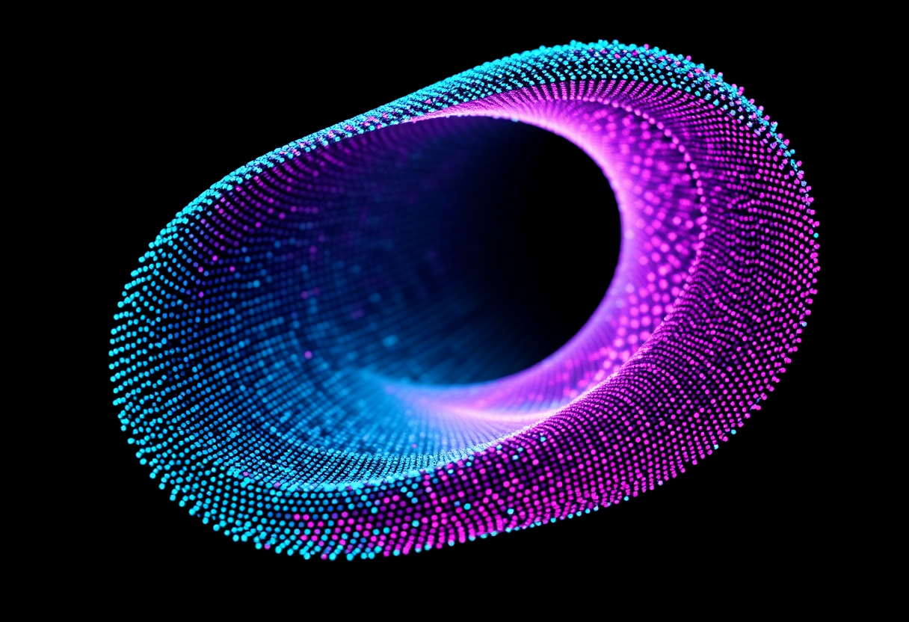

<!DOCTYPE html>
<html lang="es">

<head>
    <meta charset="UTF-8">
    <meta name="viewport" content="width=device-width, initial-scale=1.0">
    <meta name="description"
        content="Material de aprendizaje autónomo del Módulo 2 — Arquitecturas Especializadas de Deep Learning. Maestría en Ciencia de Datos, Universidad Santo Tomás. Redes convolucionales y Vision Transformers, modelos secuenciales (RNN/LSTM/GRU) y atención, y modelos generativos con espacios latentes, con analogías colombianas.">
    <title>Módulo 2 — Arquitecturas Especializadas de Deep Learning · USTA</title>

    <!-- Preconnect para rendimiento de fuentes -->
    <link rel="preconnect" href="https://fonts.googleapis.com">
    <link rel="preconnect" href="https://fonts.gstatic.com" crossorigin>

    <!-- React & ReactDOM (UMD) -->
    <script crossorigin src="https://unpkg.com/react@18/umd/react.development.js"></script>
    <script crossorigin src="https://unpkg.com/react-dom@18/umd/react-dom.development.js"></script>

    <!-- Babel para transpilar JSX en el navegador -->
    <script src="https://unpkg.com/@babel/standalone@7.26.4/babel.min.js"></script>

    <!-- Tailwind CSS (utilidades) -->
    <script src="https://cdn.tailwindcss.com"></script>

    <!-- Font Awesome (iconografía de apoyo) -->
    <link href="https://cdnjs.cloudflare.com/ajax/libs/font-awesome/6.0.0/css/all.min.css" rel="stylesheet">

    <!-- Plotly (gráficas interactivas: activaciones, descenso del gradiente, curvas de aprendizaje) -->
    <script src="https://cdn.plot.ly/plotly-2.35.2.min.js" charset="utf-8"></script>

    <!-- MathJax 3 — JUSTIFICACIÓN: el material es matemáticamente denso ($...$ y $$...$$);
         MathJax renderiza LaTeX de forma nativa y accesible sin dependencias locales. -->
    <script>
        window.MathJax = {
            tex: {
                inlineMath: [['\\(', '\\)']],
                displayMath: [['$$', '$$'], ['\\[', '\\]']]
            },
            svg: { fontCache: 'global' },
            startup: { typeset: false }
        };
    </script>
    <script id="MathJax-script" async src="https://cdn.jsdelivr.net/npm/mathjax@3/es5/tex-svg.js"></script>

    <!-- Google Fonts: Montserrat (texto) y Fira Code (código) -->
    <link href="https://fonts.googleapis.com/css2?family=Montserrat:wght@300;400;500;600;700;800&display=swap"
        rel="stylesheet">
    <link href="https://fonts.googleapis.com/css2?family=Fira+Code:wght@400;500&display=swap" rel="stylesheet">

    <script>
        tailwind.config = {
            theme: {
                extend: {
                    fontFamily: {
                        sans: ['Montserrat', 'Helvetica Neue', 'Helvetica', 'Arial', 'sans-serif'],
                    },
                    colors: {
                        primary: '#3D008D',
                        secondary: '#ED1E79',
                        navy: '#001A4D',
                        gold: '#FDB913',
                        teal: '#0E7490',
                        bg: '#F8FAFC',
                        surface: '#FFFFFF',
                    }
                }
            }
        }
    </script>

    <style>
        body {
            font-family: 'Montserrat', sans-serif;
            background-color: #F8FAFC;
            color: #1E293B;
            scroll-behavior: smooth;
        }

        code,
        pre {
            font-family: 'Fira Code', monospace;
        }

        /* Gradientes institucionales USTA */
        .usta-gradient {
            background: linear-gradient(140deg, #3D008D 0%, #ED1E79 100%);
        }

        .usta-header {
            background: linear-gradient(180deg, #001A4D 0%, #002868 100%);
        }

        /* Tarjeta con elevación al pasar el cursor */
        .usta-card {
            background: white;
            border-radius: 16px;
            box-shadow: 0 4px 20px rgba(0, 0, 0, 0.08);
            transition: all 0.3s ease;
        }

        .usta-card:hover {
            box-shadow: 0 12px 35px rgba(0, 0, 0, 0.12);
            transform: translateY(-4px);
        }

        /* Barra de desplazamiento personalizada */
        ::-webkit-scrollbar {
            width: 8px;
            height: 8px;
        }

        ::-webkit-scrollbar-track {
            background: #f1f5f9;
        }

        ::-webkit-scrollbar-thumb {
            background: linear-gradient(180deg, #3D008D, #ED1E79);
            border-radius: 4px;
        }

        ::-webkit-scrollbar-thumb:hover {
            background: linear-gradient(180deg, #4A00A8, #FF2D8A);
        }

        .code-scroll::-webkit-scrollbar {
            height: 8px;
        }

        .code-scroll::-webkit-scrollbar-track {
            background: #2d2d2d;
        }

        .code-scroll::-webkit-scrollbar-thumb {
            background: linear-gradient(180deg, #3D008D, #ED1E79);
            border-radius: 4px;
        }

        /* Animación de aparición */
        .animate-fade-in {
            animation: fadeIn 0.4s ease-out forwards;
        }

        @keyframes fadeIn {
            from {
                opacity: 0;
                transform: translateY(10px);
            }

            to {
                opacity: 1;
                transform: translateY(0);
            }
        }

        /* Accesibilidad: foco visible */
        button:focus-visible,
        a:focus-visible {
            outline: 2px solid #ED1E79;
            outline-offset: 2px;
        }

        /* Código en línea */
        .inline-code {
            background: #F1F5F9;
            color: #0F172A;
            padding: 0.1rem 0.4rem;
            border-radius: 4px;
            font-size: 0.88em;
            font-family: 'Fira Code', monospace;
        }

        /* Contenedores de gráficas Plotly */
        .chart-h-320 {
            height: 320px;
        }

        .chart-h-360 {
            height: 360px;
        }

        .chart-h-420 {
            height: 420px;
        }

        /* Tipografía de contenido */
        .prose-usta p {
            margin-bottom: 1rem;
            line-height: 1.75;
        }

        .prose-usta h3 {
            color: #ED1E79;
            font-weight: 600;
            font-size: 1.2rem;
            margin: 1.8rem 0 0.6rem;
        }

        .prose-usta h4 {
            color: #001A4D;
            font-weight: 600;
            font-size: 1.05rem;
            margin: 1.4rem 0 0.4rem;
        }

        .prose-usta ul {
            list-style: disc;
            padding-left: 1.5rem;
            margin-bottom: 1rem;
        }

        .prose-usta ol {
            list-style: decimal;
            padding-left: 1.5rem;
            margin-bottom: 1rem;
        }

        .prose-usta li {
            margin-bottom: 0.35rem;
            line-height: 1.65;
        }

        .prose-usta strong {
            color: #0F172A;
        }

        .prose-usta table {
            width: 100%;
            border-collapse: collapse;
            font-size: 0.9rem;
            margin: 1rem 0;
        }

        .prose-usta th {
            background: #F5F0FA;
            color: #3D008D;
            text-align: left;
            padding: 0.6rem 0.8rem;
            border: 1px solid #E2E8F0;
        }

        .prose-usta td {
            padding: 0.6rem 0.8rem;
            border: 1px solid #E2E8F0;
            vertical-align: top;
        }

        /* Ecuación destacada */
        .eq-block {
            background: #FAF8FF;
            border: 1px solid rgba(61, 0, 141, 0.12);
            border-radius: 12px;
            padding: 0.6rem 1rem;
            overflow-x: auto;
        }

        /* Slider de la neurona interactiva (Cap. 2) */
        .usta-range {
            -webkit-appearance: none;
            appearance: none;
            width: 100%;
            height: 6px;
            border-radius: 999px;
            background: #E9E2F5;
            outline: none;
        }

        .usta-range::-webkit-slider-thumb {
            -webkit-appearance: none;
            appearance: none;
            width: 18px;
            height: 18px;
            border-radius: 50%;
            background: #ED1E79;
            border: 2px solid #fff;
            box-shadow: 0 1px 4px rgba(0, 0, 0, .25);
            cursor: pointer;
        }

        .usta-range::-moz-range-thumb {
            width: 18px;
            height: 18px;
            border-radius: 50%;
            background: #ED1E79;
            border: 2px solid #fff;
            box-shadow: 0 1px 4px rgba(0, 0, 0, .25);
            cursor: pointer;
        }

        /* FIX MathJax + Tailwind: Preflight aplica svg { display: block }, lo que parte
           las fórmulas inline a una línea aparte. Restaurar el SVG de MathJax a inline-block
           (no afecta a las ecuaciones en bloque, que se centran por su contenedor). */
        mjx-container svg {
            display: inline-block;
        }
    </style>
</head>

<body>
    <div id="root"></div>

    <script type="text/babel">
        const { useState, useEffect, useRef } = React;

        /* ============================================================
           UTILIDAD: re-tipografiado de MathJax al cambiar de lección
        ============================================================ */
        const typesetMath = (retries = 25) => {
            if (window.MathJax && window.MathJax.typesetPromise) {
                try { window.MathJax.typesetClear && window.MathJax.typesetClear(); } catch (e) { }
                window.MathJax.typesetPromise().catch(() => { });
            } else if (retries > 0) {
                setTimeout(() => typesetMath(retries - 1), 200);
            }
        };

        // Re-tipografía SOLO el subárbol de un componente cuando cambia su estado
        // de revelado (pestañas, acordeones, retroalimentación). Evita que el LaTeX
        // recién mostrado quede como texto literal "\frac{...}".
        const useTypeset = (ref, deps) => {
            useEffect(() => {
                const t = setTimeout(() => {
                    if (ref.current && window.MathJax && window.MathJax.typesetPromise) {
                        window.MathJax.typesetPromise([ref.current]).catch(() => { });
                    }
                }, 40);
                return () => clearTimeout(t);
            }, deps);
        };

        /* ============================================================
           ICONOS (SVG en línea)
        ============================================================ */
        const Icons = {
            BookOpen: ({ size = 24, className = "" }) => (
                <svg width={size} height={size} viewBox="0 0 24 24" fill="none" stroke="currentColor" strokeWidth="2" strokeLinecap="round" strokeLinejoin="round" className={className} aria-hidden="true">
                    <path d="M2 3h6a4 4 0 0 1 4 4v14a3 3 0 0 0-3-3H2z"></path>
                    <path d="M22 3h-6a4 4 0 0 0-4 4v14a3 3 0 0 1 3-3h7z"></path>
                </svg>
            ),
            History: ({ size = 24, className = "" }) => (
                <svg width={size} height={size} viewBox="0 0 24 24" fill="none" stroke="currentColor" strokeWidth="2" strokeLinecap="round" strokeLinejoin="round" className={className} aria-hidden="true">
                    <path d="M3 3v5h5"></path>
                    <path d="M3.05 13A9 9 0 1 0 6 5.3L3 8"></path>
                    <path d="M12 7v5l4 2"></path>
                </svg>
            ),
            Network: ({ size = 24, className = "" }) => (
                <svg width={size} height={size} viewBox="0 0 24 24" fill="none" stroke="currentColor" strokeWidth="2" strokeLinecap="round" strokeLinejoin="round" className={className} aria-hidden="true">
                    <circle cx="5" cy="6" r="2"></circle><circle cx="5" cy="18" r="2"></circle>
                    <circle cx="19" cy="12" r="2"></circle><circle cx="12" cy="12" r="2"></circle>
                    <line x1="7" y1="6" x2="10.5" y2="11"></line><line x1="7" y1="18" x2="10.5" y2="13"></line>
                    <line x1="14" y1="12" x2="17" y2="12"></line>
                </svg>
            ),
            TrendingDown: ({ size = 24, className = "" }) => (
                <svg width={size} height={size} viewBox="0 0 24 24" fill="none" stroke="currentColor" strokeWidth="2" strokeLinecap="round" strokeLinejoin="round" className={className} aria-hidden="true">
                    <polyline points="23 18 13.5 8.5 8.5 13.5 1 6"></polyline>
                    <polyline points="17 18 23 18 23 12"></polyline>
                </svg>
            ),
            GitBranch: ({ size = 24, className = "" }) => (
                <svg width={size} height={size} viewBox="0 0 24 24" fill="none" stroke="currentColor" strokeWidth="2" strokeLinecap="round" strokeLinejoin="round" className={className} aria-hidden="true">
                    <line x1="6" y1="3" x2="6" y2="15"></line>
                    <circle cx="18" cy="6" r="3"></circle><circle cx="6" cy="18" r="3"></circle>
                    <path d="M18 9a9 9 0 0 1-9 9"></path>
                </svg>
            ),
            Scale: ({ size = 24, className = "" }) => (
                <svg width={size} height={size} viewBox="0 0 24 24" fill="none" stroke="currentColor" strokeWidth="2" strokeLinecap="round" strokeLinejoin="round" className={className} aria-hidden="true">
                    <path d="M12 3v18"></path><path d="M5 7h14"></path>
                    <path d="M5 7l-3 6h6z"></path><path d="M19 7l-3 6h6z"></path>
                    <path d="M7 21h10"></path>
                </svg>
            ),
            Award: ({ size = 24, className = "" }) => (
                <svg width={size} height={size} viewBox="0 0 24 24" fill="none" stroke="currentColor" strokeWidth="2" strokeLinecap="round" strokeLinejoin="round" className={className} aria-hidden="true">
                    <circle cx="12" cy="8" r="7"></circle>
                    <polyline points="8.21 13.89 7 23 12 20 17 23 15.79 13.88"></polyline>
                </svg>
            ),
            CheckSquare: ({ size = 24, className = "" }) => (
                <svg width={size} height={size} viewBox="0 0 24 24" fill="none" stroke="currentColor" strokeWidth="2" strokeLinecap="round" strokeLinejoin="round" className={className} aria-hidden="true">
                    <polyline points="9 11 12 14 22 4"></polyline>
                    <path d="M21 12v7a2 2 0 0 1-2 2H5a2 2 0 0 1-2-2V5a2 2 0 0 1 2-2h11"></path>
                </svg>
            ),
            ChevronLeft: ({ size = 24, className = "" }) => (
                <svg width={size} height={size} viewBox="0 0 24 24" fill="none" stroke="currentColor" strokeWidth="2" strokeLinecap="round" strokeLinejoin="round" className={className} aria-hidden="true">
                    <polyline points="15 18 9 12 15 6"></polyline>
                </svg>
            ),
            ChevronRight: ({ size = 24, className = "" }) => (
                <svg width={size} height={size} viewBox="0 0 24 24" fill="none" stroke="currentColor" strokeWidth="2" strokeLinecap="round" strokeLinejoin="round" className={className} aria-hidden="true">
                    <polyline points="9 18 15 12 9 6"></polyline>
                </svg>
            ),
            /* ---- Iconos adicionales para las arquitecturas del Módulo 2 (additivo) ---- */
            Grid: ({ size = 24, className = "" }) => (
                <svg width={size} height={size} viewBox="0 0 24 24" fill="none" stroke="currentColor" strokeWidth="2" strokeLinecap="round" strokeLinejoin="round" className={className} aria-hidden="true">
                    <rect x="3" y="3" width="7" height="7"></rect><rect x="14" y="3" width="7" height="7"></rect>
                    <rect x="14" y="14" width="7" height="7"></rect><rect x="3" y="14" width="7" height="7"></rect>
                </svg>
            ),
            Repeat: ({ size = 24, className = "" }) => (
                <svg width={size} height={size} viewBox="0 0 24 24" fill="none" stroke="currentColor" strokeWidth="2" strokeLinecap="round" strokeLinejoin="round" className={className} aria-hidden="true">
                    <polyline points="17 1 21 5 17 9"></polyline>
                    <path d="M3 11V9a4 4 0 0 1 4-4h14"></path>
                    <polyline points="7 23 3 19 7 15"></polyline>
                    <path d="M21 13v2a4 4 0 0 1-4 4H3"></path>
                </svg>
            ),
            Sparkles: ({ size = 24, className = "" }) => (
                <svg width={size} height={size} viewBox="0 0 24 24" fill="none" stroke="currentColor" strokeWidth="2" strokeLinecap="round" strokeLinejoin="round" className={className} aria-hidden="true">
                    <path d="M12 3l1.9 4.6L18.5 9.5l-4.6 1.9L12 16l-1.9-4.6L5.5 9.5l4.6-1.9L12 3z"></path>
                    <path d="M19 14l.8 2 .7 1.7-1.5.6-2 .8.8 2"></path>
                    <path d="M5 16l.6 1.5L7 18l-1.4.5L5 20"></path>
                </svg>
            ),
            ListChecks: ({ size = 24, className = "" }) => (
                <svg width={size} height={size} viewBox="0 0 24 24" fill="none" stroke="currentColor" strokeWidth="2" strokeLinecap="round" strokeLinejoin="round" className={className} aria-hidden="true">
                    <polyline points="3 5 4.5 6.5 7 4"></polyline>
                    <polyline points="3 12 4.5 13.5 7 11"></polyline>
                    <line x1="11" y1="5" x2="21" y2="5"></line>
                    <line x1="11" y1="12" x2="21" y2="12"></line>
                    <line x1="11" y1="19" x2="21" y2="19"></line>
                    <line x1="3" y1="19" x2="5" y2="19"></line>
                </svg>
            ),
        };

        const renderIcon = (iconName, size = 20) => {
            const Icon = Icons[iconName];
            return Icon ? <Icon size={size} /> : null;
        };

        /* ============================================================
           BLOQUE DE CÓDIGO — resaltado, copiar y OCULTAR
        ============================================================ */
        const CodeBlock = ({ title, code, lang = 'python' }) => {
            const [copied, setCopied] = useState(false);
            const [hidden, setHidden] = useState(false);

            const handleCopy = () => {
                navigator.clipboard.writeText(code).then(() => {
                    setCopied(true);
                    setTimeout(() => setCopied(false), 2000);
                });
            };

            const meta = {
                python: { icon: 'fab fa-python text-yellow-400', label: title || 'Python' },
                pytorch: { icon: 'fas fa-fire text-orange-400', label: title || 'PyTorch' },
                shell: { icon: 'fas fa-terminal text-green-400', label: title || 'Terminal' },
                text: { icon: 'fas fa-file-alt text-gray-300', label: title || 'Salida' },
            }[lang] || { icon: 'fas fa-code text-gray-300', label: title || 'Código' };

            const escapeHtml = (s) => s.replace(/&/g, '&amp;').replace(/</g, '&lt;').replace(/>/g, '&gt;');

            const protect = (src, patterns) => {
                const tokens = [];
                let out = src;
                patterns.forEach(({ re, cls }) => {
                    out = out.replace(re, (m) => {
                        const ch = String.fromCharCode(0xE000 + tokens.length);
                        tokens.push({ text: m, cls });
                        return ch;
                    });
                });
                return { out, tokens };
            };
            // Reconstruye los <span>: cada caracter del Area de Uso Privado (>= 0xE000)
            // que se inserto en "protect" se reemplaza por su token original.
            const restore = (src, tokens) => {
                let out = '';
                for (const ch of src) {
                    const code = ch.charCodeAt(0);
                    const t = (code >= 0xE000 && code <= 0xF8FF) ? tokens[code - 0xE000] : null;
                    out += t ? `<span class="${t.cls}">${t.text}</span>` : ch;
                }
                return out;
            };

            // Todo el resaltado se hace en UNA sola pasada de "protect": cada coincidencia
            // (strings y comentarios primero, luego palabras clave, tipos y numeros) se
            // sustituye por un caracter opaco que no es \w ni digito; asi ninguna regex
            // posterior puede tocar el marcado ya generado.
            const highlightPython = (raw) => {
                const escaped = escapeHtml(raw);
                const { out, tokens } = protect(escaped, [
                    { re: /"""[\s\S]*?"""|'''[\s\S]*?'''/g, cls: 'text-green-500 italic' },
                    { re: /#[^\n]*/g, cls: 'text-green-500 italic' },
                    { re: /"(?:\\.|[^"\\\n])*"|'(?:\\.|[^'\\\n])*'/g, cls: 'text-emerald-300' },
                    { re: /\b(?:class|def|from|import|return|if|else|elif|for|while|async|await|try|except|finally|raise|del|as|in|not|and|or|is|with|yield|lambda|pass|break|continue|None|True|False|global|nonlocal|assert|print)\b/g, cls: 'text-pink-400' },
                    { re: /\b(?:self|cls)\b/g, cls: 'text-orange-300 italic' },
                    { re: /\b(?:np|torch|nn|optim|F|plt|tensor|Tensor|array|ndarray|Linear|Sequential|ReLU|Sigmoid|Module|Adam|SGD|Dropout|BatchNorm1d|MSELoss|BCELoss|CrossEntropyLoss|matmul|dot|maximum|exp|sum|mean|zeros|ones|randn|float|int)\b/g, cls: 'text-yellow-300' },
                    { re: /\b\d+(?:\.\d+)?\b/g, cls: 'text-amber-300' },
                ]);
                return restore(out, tokens);
            };

            const html = highlightPython(code);

            return (
                <div className="my-4 rounded-xl overflow-hidden border border-gray-700 bg-gray-900 text-gray-100 shadow-lg">
                    <div className="bg-gray-800 px-4 py-2 text-xs font-mono text-gray-400 border-b border-gray-700 flex justify-between items-center">
                        <span><i className={`${meta.icon} mr-2`}></i>{meta.label}</span>
                        <span className="flex items-center gap-3">
                            <button onClick={() => setHidden(h => !h)} className="flex items-center gap-1 hover:text-white transition-colors" title={hidden ? 'Mostrar código' : 'Ocultar código'}>
                                <i className={`fas ${hidden ? 'fa-eye' : 'fa-eye-slash'}`}></i>
                                <span>{hidden ? 'Mostrar' : 'Ocultar'}</span>
                            </button>
                            <button onClick={handleCopy} className="flex items-center gap-1 hover:text-white transition-colors" title="Copiar código">
                                {copied
                                    ? <><i className="fas fa-check text-green-400"></i><span className="text-green-400">¡Copiado!</span></>
                                    : <><i className="far fa-clipboard"></i><span>Copiar</span></>}
                            </button>
                            <span className="flex items-center gap-1">
                                <span className="w-2 h-2 rounded-full bg-red-500"></span>
                                <span className="w-2 h-2 rounded-full bg-yellow-500"></span>
                                <span className="w-2 h-2 rounded-full bg-green-500"></span>
                            </span>
                        </span>
                    </div>
                    {!hidden && (
                        <div className="p-4 overflow-x-auto code-scroll animate-fade-in">
                            <pre className="text-sm leading-relaxed"><code dangerouslySetInnerHTML={{ __html: html }} /></pre>
                        </div>
                    )}
                </div>
            );
        };

        /* ============================================================
           CALLOUT (info / tip / warn / danger / eth)
        ============================================================ */
        const Box = ({ type = 'info', label, children }) => {
            const styles = {
                info: { border: '#3D008D', bg: '#F5F0FA', label: '#3D008D', icon: 'fa-circle-info' },
                tip: { border: '#15803D', bg: '#F0FDF4', label: '#15803D', icon: 'fa-lightbulb' },
                warn: { border: '#B45309', bg: '#FFFBEB', label: '#B45309', icon: 'fa-triangle-exclamation' },
                danger: { border: '#B91C1C', bg: '#FEF2F2', label: '#B91C1C', icon: 'fa-circle-exclamation' },
                eth: { border: '#0E7490', bg: '#ECFEFF', label: '#0E7490', icon: 'fa-scale-balanced' },
            }[type] || { border: '#3D008D', bg: '#F5F0FA', label: '#3D008D', icon: 'fa-circle-info' };
            return (
                <div className="rounded-xl px-5 py-4 my-4 border-l-4" style={{ borderColor: styles.border, background: styles.bg }}>
                    {label && (
                        <span className="inline-flex items-center gap-2 text-[0.7rem] uppercase tracking-wider font-bold rounded mb-2 px-2 py-0.5 text-white" style={{ background: styles.label }}>
                            <i className={`fas ${styles.icon}`}></i>{label}
                        </span>
                    )}
                    <div className="text-gray-700 leading-relaxed text-[0.95rem]">{children}</div>
                </div>
            );
        };

        /* ============================================================
           CALLOUT DESTACADO (tarjeta con cabecera en gradiente + ícono)
           Para los recuadros clave (p. ej. la dimensión ética).
        ============================================================ */
        const CalloutPro = ({ tema = 'eth', titulo, subtitulo, icon, children }) => {
            const temas = {
                eth: { grad: 'linear-gradient(135deg,#0E7490 0%,#06B6D4 100%)', bg: 'rgba(8,145,178,0.06)', border: 'rgba(14,116,137,0.22)', icon: 'fa-scale-balanced' },
                warn: { grad: 'linear-gradient(135deg,#B45309 0%,#F59E0B 100%)', bg: 'rgba(180,83,9,0.06)', border: 'rgba(180,83,9,0.22)', icon: 'fa-triangle-exclamation' },
                info: { grad: 'linear-gradient(135deg,#3D008D 0%,#ED1E79 100%)', bg: 'rgba(61,0,141,0.05)', border: 'rgba(61,0,141,0.18)', icon: 'fa-circle-info' },
            };
            const t = temas[tema] || temas.eth;
            return (
                <div className="my-6 rounded-2xl overflow-hidden shadow-md border bg-white not-prose" style={{ borderColor: t.border }}>
                    <div className="px-5 py-3 flex items-center gap-3" style={{ background: t.grad }}>
                        <span className="bg-white/20 rounded-lg flex items-center justify-center flex-shrink-0" style={{ width: 36, height: 36 }}>
                            <i className={`fas ${icon || t.icon} text-white text-lg`}></i>
                        </span>
                        <div>
                            <div className="text-white font-bold text-base leading-tight">{titulo}</div>
                            {subtitulo && <div className="text-white/80 text-xs">{subtitulo}</div>}
                        </div>
                    </div>
                    <div className="px-5 py-4 text-[0.95rem] text-gray-700 leading-relaxed" style={{ background: t.bg }}>
                        {children}
                    </div>
                </div>
            );
        };

        /* ============================================================
           ECUACIÓN DESTACADA (display LaTeX)
        ============================================================ */
        const Eq = ({ children }) => (
            <div className="eq-block my-4 text-center">{children}</div>
        );

        /* ============================================================
           ENCABEZADO DE SECCIÓN
        ============================================================ */
        const SectionHeader = ({ title, icon: Icon }) => (
            <div className="flex items-center gap-3 mb-5 border-b border-gray-200 pb-3">
                <div className="usta-gradient p-2.5 rounded-xl shadow-md text-white">
                    {Icon && <Icon size={24} />}
                </div>
                <h2 className="text-2xl font-bold text-gray-900">{title}</h2>
            </div>
        );

        /* ============================================================
           PIPELINE (pasos horizontales)
        ============================================================ */
        const Pipeline = ({ steps }) => (
            <div className="flex items-stretch flex-wrap gap-2 my-6 justify-between">
                {steps.map((s, i) => (
                    <React.Fragment key={i}>
                        <div className="flex-1 min-w-[140px] bg-white border border-gray-200 rounded-xl px-3 py-3 text-center text-sm shadow-sm" style={{ borderTop: '4px solid #3D008D' }}>
                            <span className="inline-block w-6 h-6 leading-6 rounded-full text-white font-bold text-xs mb-1" style={{ background: '#3D008D' }}>{s.num}</span>
                            <span className="block font-semibold text-navy mb-1">{s.title}</span>
                            <span className="text-gray-600">{s.desc}</span>
                        </div>
                        {i < steps.length - 1 && <div className="self-center text-secondary font-bold text-xl hidden md:block">→</div>}
                    </React.Fragment>
                ))}
            </div>
        );

        /* ============================================================
           LÍNEA DE TIEMPO (historia)
        ============================================================ */
        const Timeline = ({ eventos }) => (
            <div className="relative border-l-2 border-primary/30 ml-3 my-6 space-y-5">
                {eventos.map((e, i) => (
                    <div key={i} className="ml-6 relative">
                        <span className="absolute left-[-1.95rem] top-1 w-4 h-4 rounded-full usta-gradient border-2 border-white shadow"></span>
                        <span className="text-sm font-extrabold text-secondary">{e.year}</span>
                        <p className="text-sm text-gray-700 mt-0.5">{e.text}</p>
                    </div>
                ))}
            </div>
        );

        /* ============================================================
           PESTAÑAS
        ============================================================ */
        const Tabs = ({ tabs }) => {
            const [active, setActive] = useState(0);
            const contentRef = useRef(null);
            useTypeset(contentRef, [active]);
            return (
                <div className="my-5">
                    <div className="flex flex-wrap gap-1 border-b border-gray-200">
                        {tabs.map((t, i) => (
                            <button key={i} onClick={() => setActive(i)}
                                className={`px-4 py-2 text-sm font-semibold rounded-t-lg transition-colors ${active === i ? 'text-primary border-b-2 border-secondary bg-white' : 'text-gray-500 hover:text-primary'}`}>
                                {t.label}
                            </button>
                        ))}
                    </div>
                    <div ref={contentRef} className="p-4 bg-white border border-t-0 border-gray-200 rounded-b-lg animate-fade-in text-[0.95rem] text-gray-700">
                        <div key={active}>{tabs[active].content}</div>
                    </div>
                </div>
            );
        };

        /* ============================================================
           ACORDEÓN
        ============================================================ */
        const Accordion = ({ items }) => {
            const [open, setOpen] = useState(null);
            const ref = useRef(null);
            useTypeset(ref, [open]);
            return (
                <div ref={ref} className="space-y-2 my-5">
                    {items.map((it, i) => (
                        <div key={i} className="border border-gray-200 rounded-xl overflow-hidden bg-white">
                            <button onClick={() => setOpen(open === i ? null : i)}
                                className="w-full flex justify-between items-center px-4 py-3 hover:bg-gray-50 text-left font-semibold text-navy transition-colors">
                                <span>{it.titulo}</span>
                                <i className={`fas fa-chevron-down transition-transform duration-300 text-secondary ${open === i ? 'rotate-180' : ''}`}></i>
                            </button>
                            {open === i && (
                                <div className="px-4 py-3 bg-gray-50 text-gray-700 text-[0.92rem] leading-relaxed animate-fade-in border-t border-gray-100">
                                    {it.contenido}
                                </div>
                            )}
                        </div>
                    ))}
                </div>
            );
        };

        /* ============================================================
           RETO con SOLUCIÓN OCULTA
        ============================================================ */
        const Reto = ({ titulo = 'Reto práctico', children, solucion }) => {
            const [show, setShow] = useState(false);
            const ref = useRef(null);
            useTypeset(ref, [show]);
            return (
                <div ref={ref} className="my-5 rounded-xl border-2 border-dashed p-5" style={{ borderColor: '#FDB913', background: '#FFFDF5' }}>
                    <div className="flex items-center gap-2 font-bold text-navy mb-2">
                        <i className="fas fa-dumbbell text-gold"></i>{titulo}
                    </div>
                    <div className="text-gray-700 text-[0.95rem] mb-3">{children}</div>
                    <button onClick={() => setShow(s => !s)}
                        className="text-xs font-bold px-3 py-1.5 rounded-full text-white usta-gradient hover:opacity-90 transition-opacity">
                        <i className={`fas ${show ? 'fa-eye-slash' : 'fa-key'} mr-1`}></i>
                        {show ? 'Ocultar solución' : 'Mostrar solución'}
                    </button>
                    {show && <div className="mt-3 animate-fade-in">{solucion}</div>}
                </div>
            );
        };

        /* ============================================================
           MCQ — pregunta de opción múltiple con retroalimentación inmediata
        ============================================================ */
        const MCQ = ({ pregunta, opciones, multiple = false }) => {
            const [sel, setSel] = useState([]);
            const [checked, setChecked] = useState(false);

            const toggle = (i) => {
                if (checked) return;
                if (multiple) setSel(s => s.includes(i) ? s.filter(x => x !== i) : [...s, i]);
                else setSel([i]);
            };

            const correctSet = opciones.map((o, i) => o.correcta ? i : -1).filter(i => i >= 0);
            const acierto = sel.length === correctSet.length && sel.every(i => opciones[i].correcta);
            const ref = useRef(null);
            useTypeset(ref, [checked]);

            return (
                <div ref={ref} className="my-5 rounded-xl border border-gray-200 bg-white p-5 shadow-sm">
                    <div className="flex items-start gap-2 font-semibold text-navy mb-1">
                        <i className="fas fa-circle-question text-secondary mt-1"></i>
                        <span>{pregunta}</span>
                    </div>
                    {multiple && <p className="text-xs text-gray-400 mb-2 ml-6">Selección múltiple</p>}
                    <div className="space-y-2 mt-3">
                        {opciones.map((o, i) => {
                            const isSel = sel.includes(i);
                            let cls = 'border-gray-200 hover:border-primary/50';
                            if (checked) {
                                if (o.correcta) cls = 'border-green-500 bg-green-50';
                                else if (isSel) cls = 'border-red-400 bg-red-50';
                                else cls = 'border-gray-200 opacity-70';
                            } else if (isSel) cls = 'border-secondary bg-pink-50';
                            return (
                                <button key={i} onClick={() => toggle(i)} disabled={checked}
                                    className={`w-full text-left px-4 py-2.5 rounded-lg border text-[0.92rem] flex items-center gap-3 transition-all ${cls}`}>
                                    <span className={`flex-shrink-0 w-6 h-6 rounded-full flex items-center justify-center text-xs font-bold ${isSel ? 'usta-gradient text-white' : 'bg-gray-100 text-gray-500'}`}>
                                        {String.fromCharCode(97 + i)}
                                    </span>
                                    <span className="flex-1 text-gray-700">{o.texto}</span>
                                    {checked && o.correcta && <i className="fas fa-check text-green-600"></i>}
                                    {checked && isSel && !o.correcta && <i className="fas fa-xmark text-red-500"></i>}
                                </button>
                            );
                        })}
                    </div>
                    <div className="mt-3 flex items-center gap-3">
                        {!checked
                            ? <button onClick={() => sel.length && setChecked(true)} disabled={!sel.length}
                                className="text-sm font-bold px-4 py-1.5 rounded-full text-white usta-gradient disabled:opacity-40">Comprobar</button>
                            : <button onClick={() => { setChecked(false); setSel([]); }}
                                className="text-sm font-bold px-4 py-1.5 rounded-full border border-primary text-primary hover:bg-primary/5">Reintentar</button>}
                        {checked && (
                            <span className={`text-sm font-bold ${acierto ? 'text-green-600' : 'text-red-500'}`}>
                                <i className={`fas ${acierto ? 'fa-circle-check' : 'fa-circle-xmark'} mr-1`}></i>
                                {acierto ? '¡Correcto!' : 'Revisa la explicación'}
                            </span>
                        )}
                    </div>
                    {checked && (
                        <div className="mt-3 text-[0.9rem] text-gray-700 bg-bg rounded-lg p-3 border-l-4 animate-fade-in" style={{ borderColor: '#FDB913' }}>
                            <strong>Explicación: </strong>
                            {opciones.find(o => o.correcta)?.justificacion ||
                                opciones.filter(o => o.correcta).map(o => o.justificacion).filter(Boolean).join(' ')}
                        </div>
                    )}
                </div>
            );
        };

        /* ============================================================
           QUIZ — mini-cuestionario con puntuación visual
        ============================================================ */
        const Quiz = ({ titulo = 'Mini-cuestionario', preguntas }) => {
            const [resp, setResp] = useState({});
            const [enviado, setEnviado] = useState(false);

            const toggle = (qi, oi, multiple) => {
                if (enviado) return;
                setResp(prev => {
                    const actual = prev[qi] || [];
                    if (multiple) {
                        return { ...prev, [qi]: actual.includes(oi) ? actual.filter(x => x !== oi) : [...actual, oi] };
                    }
                    return { ...prev, [qi]: [oi] };
                });
            };

            const esCorrecta = (qi) => {
                const correctSet = preguntas[qi].opciones.map((o, i) => o.correcta ? i : -1).filter(i => i >= 0);
                const sel = resp[qi] || [];
                return sel.length === correctSet.length && sel.every(i => preguntas[qi].opciones[i].correcta);
            };

            const score = preguntas.reduce((acc, _, qi) => acc + (esCorrecta(qi) ? 1 : 0), 0);
            const total = preguntas.length;
            const pct = Math.round((score / total) * 100);
            const todasResp = preguntas.every((_, qi) => (resp[qi] || []).length > 0);

            const color = pct >= 80 ? '#15803D' : pct >= 50 ? '#B45309' : '#B91C1C';
            const mensaje = pct >= 80 ? '¡Excelente dominio del tema!' : pct >= 50 ? 'Bien, repasa los puntos fallados.' : 'Conviene releer la lección antes de continuar.';
            const ref = useRef(null);
            useTypeset(ref, [enviado]);

            return (
                <div ref={ref} className="my-8 rounded-2xl border border-primary/20 bg-white p-6 shadow-md">
                    <div className="flex items-center gap-2 mb-4">
                        <span className="usta-gradient text-white p-2 rounded-lg"><i className="fas fa-clipboard-question"></i></span>
                        <h3 className="text-lg font-bold text-primary" style={{ margin: 0 }}>{titulo}</h3>
                    </div>

                    {preguntas.map((q, qi) => (
                        <div key={qi} className="mb-5">
                            <div className="font-semibold text-navy text-[0.95rem] mb-2">
                                {qi + 1}. {q.pregunta}
                                {q.multiple && <span className="ml-2 text-xs text-gray-400 font-normal">(selección múltiple)</span>}
                            </div>
                            <div className="space-y-1.5">
                                {q.opciones.map((o, oi) => {
                                    const sel = (resp[qi] || []).includes(oi);
                                    let cls = 'border-gray-200 hover:border-primary/40';
                                    if (enviado) {
                                        if (o.correcta) cls = 'border-green-500 bg-green-50';
                                        else if (sel) cls = 'border-red-400 bg-red-50';
                                        else cls = 'border-gray-200 opacity-70';
                                    } else if (sel) cls = 'border-secondary bg-pink-50';
                                    return (
                                        <button key={oi} onClick={() => toggle(qi, oi, q.multiple)} disabled={enviado}
                                            className={`w-full text-left px-3 py-2 rounded-lg border text-[0.9rem] flex items-center gap-2.5 transition-all ${cls}`}>
                                            <span className={`flex-shrink-0 w-5 h-5 rounded-full flex items-center justify-center text-[0.7rem] font-bold ${sel ? 'usta-gradient text-white' : 'bg-gray-100 text-gray-500'}`}>
                                                {String.fromCharCode(97 + oi)}
                                            </span>
                                            <span className="flex-1 text-gray-700">{o.texto}</span>
                                            {enviado && o.correcta && <i className="fas fa-check text-green-600 text-xs"></i>}
                                            {enviado && sel && !o.correcta && <i className="fas fa-xmark text-red-500 text-xs"></i>}
                                        </button>
                                    );
                                })}
                            </div>
                            {enviado && q.justificacion && (
                                <p className="text-xs text-gray-600 mt-1.5 ml-1 italic">{q.justificacion}</p>
                            )}
                        </div>
                    ))}

                    {!enviado
                        ? <button onClick={() => todasResp && setEnviado(true)} disabled={!todasResp}
                            className="text-sm font-bold px-5 py-2 rounded-full text-white usta-gradient disabled:opacity-40">
                            <i className="fas fa-flag-checkered mr-2"></i>Calificar ({Object.keys(resp).length}/{total})
                        </button>
                        : (
                            <div className="animate-fade-in">
                                <div className="flex items-center gap-4 p-4 rounded-xl" style={{ background: '#FAFAFA' }}>
                                    <div className="relative w-20 h-20 flex-shrink-0">
                                        <svg viewBox="0 0 36 36" className="w-20 h-20" aria-hidden="true">
                                            <path d="M18 2.0845 a 15.9155 15.9155 0 0 1 0 31.831 a 15.9155 15.9155 0 0 1 0 -31.831" fill="none" stroke="#eee" strokeWidth="3" />
                                            <path d="M18 2.0845 a 15.9155 15.9155 0 0 1 0 31.831 a 15.9155 15.9155 0 0 1 0 -31.831" fill="none" stroke={color} strokeWidth="3" strokeDasharray={`${pct}, 100`} strokeLinecap="round" />
                                        </svg>
                                        <span className="absolute inset-0 flex items-center justify-center font-extrabold text-sm" style={{ color }}>{pct}%</span>
                                    </div>
                                    <div>
                                        <div className="font-bold text-navy">Puntaje: {score} / {total}</div>
                                        <div className="text-sm" style={{ color }}>{mensaje}</div>
                                    </div>
                                </div>
                                <button onClick={() => { setEnviado(false); setResp({}); }}
                                    className="mt-3 text-sm font-bold px-4 py-1.5 rounded-full border border-primary text-primary hover:bg-primary/5">
                                    <i className="fas fa-rotate-right mr-1"></i>Reintentar
                                </button>
                            </div>
                        )}
                </div>
            );
        };

        /* ============================================================
           GRÁFICA PLOTLY (hook + contenedor)
        ============================================================ */
        const usePlotly = (id, dataFn, layoutFn, deps = []) => {
            useEffect(() => {
                const el = document.getElementById(id);
                if (el && window.Plotly) {
                    window.Plotly.newPlot(id, dataFn(), layoutFn(), { responsive: true, displayModeBar: false });
                }
                return () => { if (window.Plotly) { try { window.Plotly.purge(id); } catch (e) { } } };
            }, deps);
        };

        const ChartFrame = ({ id, height = 'chart-h-360', caption }) => (
            <>
                <div className="bg-white border border-gray-200 rounded-xl p-2 shadow-sm my-3">
                    <div id={id} className={height} style={{ width: '100%' }}></div>
                </div>
                {caption && <p className="text-xs text-gray-500 italic text-center mb-4">{caption}</p>}
            </>
        );

        /* ============================================================
           TÉRMINO con definición emergente (tooltip por portal)
        ============================================================ */
        const Termino = ({ children, def }) => {
            const [open, setOpen] = useState(false);
            const [pos, setPos] = useState(null);
            const btnRef = useRef(null);
            const popRef = useRef(null);
            const closeTimer = useRef(null);

            // Cierre con periodo de gracia: permite mover el cursor del termino al
            // cuadro (que estan separados unos pixeles) sin que se cierre de inmediato.
            const cancelClose = () => { if (closeTimer.current) { clearTimeout(closeTimer.current); closeTimer.current = null; } };
            const scheduleClose = () => { cancelClose(); closeTimer.current = setTimeout(() => setOpen(false), 150); };
            const openNow = () => { cancelClose(); setOpen(true); };
            useEffect(() => cancelClose, []); // limpia el temporizador al desmontar

            // Calcula la posición del cuadro en coordenadas del viewport (position: fixed)
            // y decide si abrir hacia abajo o hacia arriba según el espacio disponible.
            const place = () => {
                if (!btnRef.current) return;
                const r = btnRef.current.getBoundingClientRect();
                const margin = 12;
                const w = Math.min(300, window.innerWidth - margin * 2);
                let left = r.left;
                if (left + w > window.innerWidth - margin) left = window.innerWidth - margin - w;
                if (left < margin) left = margin;
                const abreArriba = (window.innerHeight - r.bottom) < 180; // poco espacio abajo
                setPos({
                    left, width: w,
                    top: abreArriba ? null : Math.round(r.bottom + 6),
                    bottom: abreArriba ? Math.round(window.innerHeight - r.top + 6) : null,
                });
            };

            useEffect(() => {
                if (!open) { setPos(null); return; }
                place();
                const reflow = () => place();
                const onDoc = (e) => {
                    if (popRef.current && popRef.current.contains(e.target)) return;
                    if (btnRef.current && btnRef.current.contains(e.target)) return;
                    setOpen(false);
                };
                // 'true' captura también el scroll del contenedor interno de la lección.
                window.addEventListener('scroll', reflow, true);
                window.addEventListener('resize', reflow);
                document.addEventListener('mousedown', onDoc);
                return () => {
                    window.removeEventListener('scroll', reflow, true);
                    window.removeEventListener('resize', reflow);
                    document.removeEventListener('mousedown', onDoc);
                };
            }, [open]);

            return (
                <span className="inline-block">
                    <button ref={btnRef} type="button" onClick={openNow} onMouseEnter={openNow} onMouseLeave={scheduleClose}
                        className="text-primary font-semibold cursor-help bg-primary/5 hover:bg-primary/10 rounded px-1 transition-colors"
                        style={{ borderBottom: '1px dotted #3D008D' }} title="Ver definición rápida">
                        {children}<i className="fas fa-circle-info text-[0.6em] align-super ml-0.5 text-secondary"></i>
                    </button>
                    {open && pos && ReactDOM.createPortal(
                        <span ref={popRef} role="tooltip"
                            onMouseEnter={cancelClose} onMouseLeave={scheduleClose}
                            className="block rounded-lg bg-white shadow-2xl border border-primary/30 p-3 text-[0.8rem] font-normal text-gray-700 leading-snug animate-fade-in text-left"
                            style={{ position: 'fixed', left: pos.left, top: pos.top == null ? 'auto' : pos.top, bottom: pos.bottom == null ? 'auto' : pos.bottom, width: pos.width, zIndex: 200 }}>
                            <span className="block font-bold text-primary mb-1 text-[0.72rem] uppercase tracking-wide">{children}</span>
                            {def}
                        </span>,
                        document.body
                    )}
                </span>
            );
        };

        /* ============================================================
           PORTADA + OBJETIVOS (Lección 0)
        ============================================================ */
        const PortadaSection = () => (
            <div className="prose-usta">
                <Box type="tip" label="Cómo estudiar este módulo">
                    Este material es <strong>autónomo</strong>: permite avanzar a ritmo propio con los botones <em>Anterior / Siguiente</em>.
                    Cada capítulo combina teoría breve, una analogía colombiana, un diagrama, código comentado y práctica.
                    El navegador <strong>recuerda la última lección</strong>, de modo que es posible pausar y retomar en cualquier momento.
                    Se recomienda intentar las preguntas <em>antes</em> de ver la retroalimentación.
                </Box>

                <h3>Identificación del espacio académico</h3>
                <div className="overflow-x-auto">
                    <table>
                        <tbody>
                            <tr><th>Programa</th><td>Maestría en Ciencia de Datos · Facultad de Estadística</td></tr>
                            <tr><th>Espacio académico</th><td>Profundización I: Redes Neuronales – Deep Learning (EA-N-F-004)</td></tr>
                            <tr><th>Naturaleza</th><td>Teórico-práctico · 3 créditos · 144 horas</td></tr>
                            <tr><th>Módulo</th><td>Módulo 2 — Arquitecturas Especializadas de Deep Learning (48 h de dedicación)</td></tr>
                        </tbody>
                    </table>
                </div>

                <h3>Objetivo general del módulo</h3>
                <p>
                    Comprender y aplicar las arquitecturas especializadas del aprendizaje profundo —convolucionales,
                    secuenciales y generativas— seleccionando la familia adecuada según la naturaleza de los datos
                    (imágenes, secuencias o generación), y fundamentando técnica y éticamente cada decisión de diseño.
                </p>

                <Box type="info" label="Competencia del módulo">
                    Diseña, entrena y evalúa arquitecturas especializadas (CNN/ViT, RNN-LSTM-GRU con atención y modelos
                    generativos) para resolver problemas de visión, secuencias y generación en contextos colombianos.
                </Box>

                <h3>Mapa de los tres capítulos</h3>
                <Pipeline steps={[
                    { num: 1, title: 'Convolución y ViT', desc: 'CNN y Vision Transformers para imágenes' },
                    { num: 2, title: 'Secuencias y atención', desc: 'RNN, LSTM, GRU y mecanismo de atención' },
                    { num: 3, title: 'Generativos', desc: 'Autoencoders, VAE, GAN y espacios latentes' },
                ]} />

                <div className="grid md:grid-cols-3 gap-3 my-4">
                    {[
                        { n: '2.1', t: 'Redes Convolucionales (CNN) y Vision Transformers', icon: 'Grid' },
                        { n: '2.2', t: 'Modelos Secuenciales (RNN, LSTM, GRU) y Atención', icon: 'Repeat' },
                        { n: '2.3', t: 'Modelos Generativos y Espacios Latentes', icon: 'Sparkles' },
                    ].map((c, i) => (
                        <div key={i} className="usta-card p-4 flex flex-col gap-2">
                            <span className="inline-flex items-center gap-2 text-primary font-bold">
                                <span className="usta-gradient text-white p-1.5 rounded-lg" style={{ width: 32, height: 32 }}>{renderIcon(c.icon, 18)}</span>{' '}
                                Cap. {c.n}
                            </span>
                            <span className="text-sm text-gray-700">{c.t}</span>
                        </div>
                    ))}
                </div>

                <h3>Carga académica y peso evaluativo</h3>
                <div className="grid md:grid-cols-2 gap-3 my-4">
                    <div className="usta-card p-5">
                        <div className="flex items-center gap-2 text-navy font-bold mb-1">
                            <i className="fas fa-clock text-secondary"></i> Dedicación estimada
                        </div>
                        <p className="text-sm text-gray-700" style={{ margin: 0 }}>
                            <strong>48 horas</strong> de trabajo total entre encuentros directos, acompañamiento y estudio
                            autónomo, distribuidas en los tres capítulos y su actividad evaluativa.
                        </p>
                    </div>
                    <div className="usta-card p-5">
                        <div className="flex items-center gap-2 text-navy font-bold mb-1">
                            <i className="fas fa-percent text-secondary"></i> Peso evaluativo
                        </div>
                        <p className="text-sm text-gray-700" style={{ margin: 0 }}>
                            El Módulo 2 contempla <strong>dos actividades evaluativas</strong> dentro del esquema 100 % del
                            curso, articuladas con el Proyecto Integrador longitudinal.
                        </p>
                    </div>
                </div>

                <Box type="warn" label="Prerrequisitos suaves">
                    Conviene haber cursado el <strong>Módulo 1</strong> (perceptrón multicapa, retropropagación,
                    optimización y regularización). Los ejemplos en <span className="inline-code">PyTorch</span> son
                    ilustrativos del flujo del curso y están pensados para ejecutarse en Google Colab.
                </Box>
            </div>
        );

        /* ============================================================
           CAPÍTULOS DEL MÓDULO 2
        ============================================================ */
        /* ============================================================
           DIAGRAMA SVG: operación de convolución
           Kernel 3×3 deslizándose sobre una entrada 5×5 → mapa 3×3.
           Regla: dentro de <text> NO se usan delimitadores MathJax;
           solo texto nativo, <tspan baselineShift="sub"> y Unicode.
        ============================================================ */
        const ConvolucionSVG = () => {
            // Matriz de entrada 5×5 (valores de ejemplo).
            const entrada = [
                [3, 0, 1, 2, 7],
                [1, 5, 8, 9, 3],
                [2, 7, 2, 5, 1],
                [0, 1, 3, 1, 7],
                [4, 2, 1, 6, 2],
            ];
            // Kernel 3×3 (detector ilustrativo).
            const kernel = [
                [1, 0, -1],
                [1, 0, -1],
                [1, 0, -1],
            ];
            const cel = 34;        // tamaño de cada celda
            const x0 = 40, y0 = 60; // origen de la matriz de entrada
            const kx0 = 360, ky0 = 95; // origen del kernel
            const mx0 = 560, my0 = 95; // origen del mapa de características

            return (
                <div className="bg-white border border-gray-200 rounded-xl p-4 shadow-sm my-4 overflow-x-auto">
                    <svg viewBox="0 0 740 336" className="w-full" style={{ minWidth: 620 }} role="img"
                        aria-label="Operación de convolución: un kernel 3 por 3 se desliza sobre una matriz de entrada 5 por 5 y produce un mapa de características 3 por 3.">
                        <title>La ventana 3×3 resaltada sobre la entrada se multiplica elemento a elemento por el kernel; la suma de los productos genera un valor del mapa de características.</title>

                        {/* --- Matriz de entrada 5×5 --- */}
                        <text x={x0 + (5 * cel) / 2} y={y0 - 14} textAnchor="middle" fontSize="13" fill="#3D008D" fontWeight="bold">Entrada (5×5)</text>
                        {entrada.map((fila, i) => fila.map((v, j) => {
                            const enVentana = i < 3 && j < 3; // ventana superior-izquierda resaltada
                            return (
                                <g key={`e-${i}-${j}`}>
                                    <rect x={x0 + j * cel} y={y0 + i * cel} width={cel} height={cel}
                                        fill={enVentana ? '#FCE7F3' : '#F8FAFC'} stroke={enVentana ? '#ED1E79' : '#CBD5E1'} strokeWidth={enVentana ? 2 : 1} />
                                    <text x={x0 + j * cel + cel / 2} y={y0 + i * cel + cel / 2 + 4} textAnchor="middle" fontSize="12" fill="#334155">{v}</text>
                                </g>
                            );
                        }))}
                        {/* contorno grueso de la ventana receptiva 3×3 */}
                        <rect x={x0} y={y0} width={3 * cel} height={3 * cel} fill="none" stroke="#ED1E79" strokeWidth="3" rx="3" />

                        {/* --- Operador de convolución --- */}
                        <text x={kx0 - 22} y={ky0 + cel * 1.5 + 4} textAnchor="middle" fontSize="22" fill="#001A4D" fontWeight="bold">∗</text>

                        {/* --- Kernel 3×3 --- */}
                        <text x={kx0 + (3 * cel) / 2} y={ky0 - 14} textAnchor="middle" fontSize="13" fill="#0E7490" fontWeight="bold">Kernel (3×3)</text>
                        {kernel.map((fila, i) => fila.map((v, j) => (
                            <g key={`k-${i}-${j}`}>
                                <rect x={kx0 + j * cel} y={ky0 + i * cel} width={cel} height={cel} fill="#ECFEFF" stroke="#0E7490" strokeWidth="1.5" />
                                <text x={kx0 + j * cel + cel / 2} y={ky0 + i * cel + cel / 2 + 4} textAnchor="middle" fontSize="12" fill="#0E7490" fontWeight="bold">{v}</text>
                            </g>
                        )))}

                        {/* --- Flecha hacia el mapa de salida --- */}
                        <text x={mx0 - 30} y={my0 + cel * 1.5 + 5} textAnchor="middle" fontSize="22" fill="#15803D" fontWeight="bold">→</text>

                        {/* --- Mapa de características 3×3 --- */}
                        <text x={mx0 + (3 * cel) / 2} y={my0 - 14} textAnchor="middle" fontSize="13" fill="#15803D" fontWeight="bold">Mapa (3×3)</text>
                        {Array.from({ length: 3 }).map((_, i) => Array.from({ length: 3 }).map((_, j) => {
                            const destino = i === 0 && j === 0;
                            return (
                                <g key={`m-${i}-${j}`}>
                                    <rect x={mx0 + j * cel} y={my0 + i * cel} width={cel} height={cel}
                                        fill={destino ? '#DCFCE7' : '#F8FAFC'} stroke={destino ? '#15803D' : '#CBD5E1'} strokeWidth={destino ? 2.5 : 1} />
                                    {destino && <text x={mx0 + j * cel + cel / 2} y={my0 + i * cel + cel / 2 + 4} textAnchor="middle" fontSize="12" fill="#15803D" fontWeight="bold">−5</text>}
                                </g>
                            );
                        }))}

                        {/* --- Cálculo de la celda destacada (texto nativo, sin MathJax) --- */}
                        <text x={40} y={y0 + 5 * cel + 38} textAnchor="start" fontSize="12" fill="#475569">
                            S<tspan baselineShift="sub" fontSize="9">0,0</tspan> = Σ ( I × K ) = (3·1 + 0·0 + 1·(−1)) + (1·1 + 5·0 + 8·(−1)) + (2·1 + 7·0 + 2·(−1)) = −5
                        </text>
                        <text x={40} y={y0 + 5 * cel + 58} textAnchor="start" fontSize="11" fill="#94A3B8" fontStyle="italic">
                            La ventana rosa se multiplica elemento a elemento por el kernel;
                        </text>
                        <text x={40} y={y0 + 5 * cel + 74} textAnchor="start" fontSize="11" fill="#94A3B8" fontStyle="italic">
                            la suma de productos llena una celda del mapa y luego la ventana se desplaza (stride).
                        </text>
                    </svg>
                    <p className="text-xs text-gray-500 italic text-center mt-1">
                        Operación de convolución: el kernel recorre la entrada produciendo, en cada posición, un único valor del mapa de características.
                    </p>
                </div>
            );
        };

        /* ============================================================
           DIAGRAMA SVG: convolución multicanal
           Un filtro con la profundidad de la entrada (3 canales RGB)
           produce UN mapa; N filtros producen N mapas (profundidad N).
        ============================================================ */
        const MultiChannelConvSVG = () => (
            <div className="bg-white border border-gray-200 rounded-xl p-4 shadow-sm my-4 overflow-x-auto">
                <svg viewBox="0 0 740 250" className="w-full" style={{ minWidth: 640 }} role="img"
                    aria-label="Convolución multicanal: un filtro con la misma profundidad que la entrada RGB de tres canales produce un único mapa de características; aplicar N filtros distintos genera N mapas que se apilan en un volumen de profundidad N.">
                    <title>Cada filtro abarca los tres canales de la entrada y produce un solo mapa 2D; el número de filtros N fija la profundidad del volumen de salida.</title>
                    <text x="95" y="38" textAnchor="middle" fontSize="13" fill="#3D008D" fontWeight="bold">Entrada RGB</text>
                    <rect x="60" y="70" width="70" height="70" fill="#DBEAFE" stroke="#1D4ED8" strokeWidth="1.6" />
                    <rect x="75" y="85" width="70" height="70" fill="#DCFCE7" stroke="#15803D" strokeWidth="1.6" />
                    <rect x="90" y="100" width="70" height="70" fill="#FEE2E2" stroke="#B91C1C" strokeWidth="1.6" />
                    <text x="125" y="190" textAnchor="middle" fontSize="11" fill="#64748B" fontStyle="italic">3 canales</text>
                    <text x="200" y="142" textAnchor="middle" fontSize="22" fill="#001A4D" fontWeight="bold">∗</text>
                    <text x="270" y="38" textAnchor="middle" fontSize="13" fill="#0E7490" fontWeight="bold">Filtro 3×3×3</text>
                    <rect x="240" y="78" width="48" height="48" fill="#ECFEFF" stroke="#0E7490" strokeWidth="1.4" />
                    <rect x="252" y="90" width="48" height="48" fill="#ECFEFF" stroke="#0E7490" strokeWidth="1.4" />
                    <rect x="264" y="102" width="48" height="48" fill="#ECFEFF" stroke="#0E7490" strokeWidth="1.6" />
                    <text x="288" y="186" textAnchor="middle" fontSize="11" fill="#64748B" fontStyle="italic">misma profundidad</text>
                    <text x="360" y="142" textAnchor="middle" fontSize="22" fill="#15803D" fontWeight="bold">→</text>
                    <rect x="392" y="95" width="60" height="60" fill="#DCFCE7" stroke="#15803D" strokeWidth="2" />
                    <text x="422" y="175" textAnchor="middle" fontSize="11" fill="#15803D" fontWeight="bold">1 mapa</text>
                    <text x="512" y="138" textAnchor="middle" fontSize="14" fill="#ED1E79" fontWeight="bold">× N</text>
                    <text x="512" y="156" textAnchor="middle" fontSize="10" fill="#64748B">filtros</text>
                    <text x="645" y="38" textAnchor="middle" fontSize="13" fill="#15803D" fontWeight="bold">N mapas</text>
                    {[0, 1, 2, 3].map((i) => (
                        <rect key={`m-${i}`} x={585 + i * 14} y={70 + i * 14} width="60" height="60" fill="#DCFCE7" stroke="#15803D" strokeWidth="1.6" />
                    ))}
                    <text x="650" y="192" textAnchor="middle" fontSize="11" fill="#64748B" fontStyle="italic">profundidad N</text>
                </svg>
                <p className="text-xs text-gray-500 italic text-center mt-1">Convolución multicanal: cada filtro abarca los tres canales y produce un único mapa; el número de filtros N determina la profundidad del volumen de salida. Fuente: elaboración propia.</p>
            </div>
        );

        const Cap21Section = () => {
            const ref = useRef(null);
            useTypeset(ref, []);
            useEffect(() => {
                const onMsg = (e) => {
                    const d = e && e.data;
                    if (d && d.type === 'embed-tool-height' && d.id && d.height) {
                        const fr = document.getElementById(d.id);
                        if (fr) fr.style.height = (d.height + 4) + 'px';
                    }
                };
                window.addEventListener('message', onMsg);
                return () => window.removeEventListener('message', onMsg);
            }, []);
            return (
                <div ref={ref} className="prose-usta">
                    <SectionHeader title="Capítulo 2.1 — Redes Convolucionales (CNN) y Vision Transformers" icon={Icons.Grid} />

                    <p>
                        Las imágenes son el dato más abundante y, a la vez, el más exigente del aprendizaje profundo. Enseñar a una
                        máquina a <em>ver</em> es enseñarle a construir significado de lo simple a lo complejo —de los bordes al objeto—.
                        Este capítulo recorre por qué las redes densas fracasan ante ellas, cómo la <strong>convolución</strong> resuelve el
                        problema imitando al córtex visual, cómo evolucionaron las arquitecturas hasta <strong>ResNet</strong>,
                        cómo los <strong>Vision Transformers</strong> reformulan el problema con atención, y cómo se lleva un
                        modelo entrenado al borde de la selva colombiana.
                    </p>

                    {/* ============== 1. Fundamentos biológicos y límites del MLP ============== */}
                    <h3>1. De la retina al córtex: la inspiración biológica</h3>
                    <p>
                        El diseño de las <Termino def="Convolutional Neural Networks: redes que aplican filtros aprendibles sobre rejillas de píxeles.">CNN</Termino> no
                        es arbitrario; es una abstracción matemática de cómo el cerebro procesa lo visual. La luz incide en la retina,
                        viaja por el nervio óptico hacia el <Termino def="Estación de relevo del tálamo que reenvía la señal visual de la retina hacia la corteza.">núcleo geniculado lateral</Termino> y llega a la corteza visual primaria (V1) del
                        lóbulo occipital. Las investigaciones de Hubel y Wiesel sobre la corteza visual (1962), cuyos hallazgos
                        les valieron el Premio Nobel de Fisiología o Medicina en 1981, revelaron una jerarquía de
                        procesamiento con dos tipos de células:
                    </p>
                    <ul>
                        <li><strong>Células simples:</strong> responden a patrones de luz muy específicos —bordes con cierta orientación dentro de un campo receptivo pequeño.</li>
                        <li><strong>Células complejas:</strong> con campos receptivos mayores, su respuesta es invariante a pequeñas traslaciones; agregan la información de varias células simples.</li>
                    </ul>
                    <p>
                        Esa jerarquía es la piedra angular de las CNN: las primeras capas detectan bordes y colores (como V1), las
                        intermedias forman texturas y formas (V2, V4) y las finales reconocen objetos completos (corteza temporal
                        inferior).
                    </p>

                    <div className="bg-white border border-gray-200 rounded-xl p-4 shadow-sm my-4">
                        <div className="grid grid-cols-2 md:grid-cols-4 gap-3">
                            {[
                                { src: 'images/modulo-2/hier-1-bordes.png', t: '1 · Bordes', d: 'Capas iniciales (≈ V1)' },
                                { src: 'images/modulo-2/hier-2-textura.png', t: '2 · Texturas', d: 'Capas intermedias (≈ V2)' },
                                { src: 'images/modulo-2/hier-3-partes.png', t: '3 · Partes', d: 'Capas profundas (≈ V4)' },
                                { src: 'images/modulo-2/hier-4-objeto.png', t: '4 · Objeto', d: 'Capas finales (≈ IT)' },
                            ].map((p, i) => (
                                <figure key={i} className="m-0">
                                    
                                    <figcaption className="text-center mt-1">
                                        <span className="block text-sm font-bold text-primary">{p.t}</span>
                                        <span className="block text-xs text-gray-500">{p.d}</span>
                                    </figcaption>
                                </figure>
                            ))}
                        </div>
                        <p className="text-xs text-gray-500 italic text-center mt-3">
                            Jerarquía de características: una CNN compone su comprensión de lo simple a lo complejo —bordes → texturas →
                            partes → objeto—, reflejando la jerarquía del córtex visual (V1 → V2 → V4 → corteza temporal inferior). El
                            mapa de bordes y los recortes proceden de la misma fotografía. Fuente: elaboración propia (imagen base generada localmente).
                        </p>
                    </div>

                    <Box type="eth" label="Diferencias con el cerebro">
                        Aunque inspiradas en la biología, las CNN difieren en eficiencia y aprendizaje. El cerebro opera con unos
                        20 vatios y aprende categorías nuevas con poquísimos ejemplos (<em>few-shot</em>). Las CNN requieren miles de
                        ejemplos etiquetados y cómputo masivo, y son vulnerables a <strong>ataques adversarios</strong>: perturbaciones
                        invisibles al ojo humano pueden hacer que clasifiquen mal un objeto.
                    </Box>

                    <h4>El fracaso del MLP en visión</h4>
                    <p>
                        Una imagen es una matriz tridimensional (alto × ancho × canales). Considérese una imagen de 1.000 × 1.000 píxeles:
                        son 1 millón de entradas. En una red totalmente conectada, cada neurona de la primera capa se conecta a todas
                        ellas. Con apenas 1.000 neuronas ocultas, el número de pesos sería:
                    </p>
                    <Eq>{String.raw`$$ 1{.}000{.}000\,\text{entradas} \times 1{.}000\,\text{neuronas} = 1.000.000.000\ \text{pesos} $$`}</Eq>
                    <p>
                        Mil millones de parámetros <em>solo en la primera capa</em>: un costo de cómputo que, además, alimenta el
                        <Termino def="Sobreajuste: la red memoriza el ruido del entrenamiento y no generaliza.">sobreajuste</Termino>.
                        Pero el daño más grave no es <em>computacional</em>, sino <strong>representacional</strong>: al aplanar la imagen
                        en un vector, la red destruye la <strong>estructura espacial</strong> —deja de saber qué píxeles son vecinos— y
                        pierde la <strong>invarianza a la traslación</strong>. Concretamente: si entrena con un jaguar centrado, asocia la
                        clase a los píxeles exactos del centro; basta con que el mismo jaguar aparezca desplazado unos pocos píxeles para
                        que su vector aplanado resulte irreconocible respecto al anterior, y la red lo trate como un objeto nuevo que debe
                        reaprender posición por posición.
                    </p>
                    <Box type="info" label="Analogía local — la red de cámaras trampa">
                        Conectar cada píxel con cada neurona es como exigir un cable directo entre <em>cada</em> cámara trampa de la
                        reserva y <em>todas</em> las demás: un tendido imposible de mantener. La convolución, en cambio, deja que cada
                        cámara vigile solo <em>su propio claro</em> (conectividad local) y que todas apliquen <em>el mismo criterio</em> de
                        detección (pesos compartidos).
                    </Box>

                    {/* ============== 2. Anatomía de la convolución ============== */}
                    <h3>2. Anatomía de una red convolucional</h3>
                    <p>
                        Las CNN superan al MLP mediante tres ideas: <strong>conexiones locales</strong>, <strong>pesos compartidos</strong> y
                        <strong> submuestreo</strong>. El corazón del sistema es la <strong>convolución</strong>: deslizar un filtro
                        (o <em>kernel</em>) pequeño sobre la entrada para producir un <em>mapa de características</em> —también
                        llamado <em>mapa de activación</em>—. En cada posición se multiplica el filtro elemento a elemento por la
                        región subyacente, se suman los productos y se añade un <strong>sesgo</strong> aprendido:
                    </p>
                    <Eq>{String.raw`$$ S(i,j) = (I * K)(i,j) + b = \sum_{m}\sum_{n} I(i+m,\,j+n)\cdot K(m,n) + b $$`}</Eq>
                    <p className="text-xs text-gray-500 italic">
                        Nota de rigor: con el signo {String.raw`\(+\)`} en {String.raw`\(I(i+m,\,j+n)\)`} esta operación es, en sentido estricto, una <em>correlación cruzada</em>; la convolución matemática invertiría el kernel {String.raw`\(\big(I(i-m,\,j-n)\big)\)`}. Como el kernel se <em>aprende</em>, la distinción es irrelevante en la práctica y por eso PyTorch, TensorFlow y Keras la llaman «convolución».
                    </p>

                    <ConvolucionSVG />

                    <p>
                        A diferencia de los detectores clásicos (<Termino def="Operadores clásicos de detección de bordes en procesamiento de imágenes, con coeficientes fijos definidos a mano (no aprendidos).">Sobel, Canny</Termino>) diseñados a mano, los valores del kernel son
                        <strong> parámetros aprendibles</strong>: la red los ajusta por <Termino def="Algoritmo que propaga el error hacia atrás para calcular gradientes.">retropropagación</Termino> hasta
                        detectar las características útiles para la tarea. Si necesita distinguir un «8» de un «1», aprenderá sola un
                        filtro que se active ante curvas.
                    </p>

                    <h4>Hiperparámetros que controlan la dimensión</h4>
                    <Accordion items={[
                        {
                            titulo: 'Stride (zancada): cuánto se desplaza el filtro',
                            contenido: <span>Con <em>stride</em> = 1 el filtro se mueve píxel a píxel y preserva resolución (mayor costo). Con <em>stride</em> ≥ 2 salta píxeles y reduce la dimensión espacial (<em>downsampling</em>), aprendiendo los parámetros de la reducción.</span>
                        },
                        {
                            titulo: 'Padding (relleno): proteger los bordes',
                            contenido: <span>Aplicar convoluciones encoge la imagen y descuida los bordes. El <em>zero-padding</em> agrega ceros alrededor de la entrada. El <strong>valid padding</strong> no rellena ({String.raw`\(P=0\)`}); el <strong>same padding</strong> rellena para conservar el tamaño con {String.raw`\(P=\tfrac{K-1}{2}\)`}, clave en ResNet para mantener las dimensiones espaciales y permitir la suma residual {String.raw`\(F(x)+x\)`} dentro del bloque.</span>
                        },
                        {
                            titulo: 'Pooling (submuestreo): invarianza y reducción',
                            contenido: <span><strong>Max pooling</strong> toma el máximo de cada región (ej. 2×2): si un rasgo se detectó allí, lo conserva y descarta su ubicación exacta, dando invarianza a pequeñas traslaciones. El <strong>average pooling</strong> promedia; su variante <em>global average pooling</em> reduce todo el mapa a un vector antes de clasificar, eliminando capas densas masivas. Resulta contraintuitivo que <em>descartar</em> información mejore el modelo: al recortar la resolución, el pooling reduce parámetros y sobreajuste, y suele favorecer la generalización.</span>
                        },
                    ]} />

                    <p>
                        Esa es la división del trabajo que explica el éxito en visión: la <strong>convolución</strong> aprende{' '}
                        <em>qué</em> patrón aparece, y el <strong>pooling</strong>, más tolerante a la posición, difumina <em>dónde</em>{' '}
                        aparece exactamente —esa tolerancia a la posición es justo lo que le faltaba al MLP—.
                    </p>

                    <p>El tamaño de salida de una capa convolucional se obtiene con la fórmula general:</p>
                    <Eq>{String.raw`$$ O = \left\lfloor \frac{W - K + 2P}{S} \right\rfloor + 1 $$`}</Eq>
                    <p>
                        donde {String.raw`\(W\)`} es el tamaño de entrada, {String.raw`\(K\)`} el del kernel, {String.raw`\(P\)`} el
                        relleno y {String.raw`\(S\)`} el stride. Una imagen de 224 × 224 con un filtro 3 × 3, sin relleno y stride 1,
                        produce un mapa de {String.raw`\(\lfloor(224-3)/1\rfloor + 1 = 222\)`} de lado.
                    </p>

                    <h4>Convolución multicanal: de un canal a la profundidad</h4>
                    <p>
                        El ejemplo anterior usa un único canal, pero una imagen a color tiene <strong>tres</strong> (rojo, verde
                        y azul). La convolución se adapta de forma natural: el filtro adquiere la misma profundidad que la entrada.
                        Para una entrada de 3 canales, cada filtro es un volumen {String.raw`\(3\times 3\times 3\)`} que se desliza
                        sobre el alto y el ancho, multiplica elemento a elemento <em>los tres canales a la vez</em> y suma todos los
                        productos en un <strong>único</strong> número por posición. Así, un filtro —por muchos canales que tenga—
                        produce siempre <strong>un</strong> mapa de características bidimensional.
                    </p>
                    <p>
                        La profundidad de la salida no la fija la entrada, sino el <strong>número de filtros</strong>: aplicar
                        {String.raw` \(N\)`} filtros independientes genera {String.raw`\(N\)`} mapas que se apilan en un volumen de
                        profundidad {String.raw`\(N\)`}. Cada filtro aprende a detectar un patrón distinto (un borde diagonal, una
                        mancha de color, una textura). El número de parámetros de la capa es, por tanto:
                    </p>
                    <Eq>{String.raw`$$ \text{parámetros} = \big(\underbrace{K \times K \times C_{\text{in}}}_{\text{un filtro}} + 1\big)\times N $$`}</Eq>
                    <p>
                        donde {String.raw`\(K\)`} es el tamaño del kernel, {String.raw`\(C_{\text{in}}\)`} los canales de entrada,
                        el {String.raw`\(+1\)`} el sesgo y {String.raw`\(N\)`} el número de filtros. Una capa {String.raw`\(3\times 3\)`} con 3 canales de entrada y 16 filtros usa apenas
                        {String.raw` \((3\cdot 3\cdot 3 + 1)\times 16 = 448\)`} parámetros, frente a los mil millones del MLP del inicio.
                    </p>

                    <MultiChannelConvSVG />

                    <CodeBlock title="CNN: cómo cambian las dimensiones" lang="pytorch" code={`import torch
import torch.nn as nn

# Imagen RGB simulada: (lote=1, canales=3, alto=224, ancho=224)
x = torch.randn(1, 3, 224, 224)
print(x.shape)  # torch.Size([1, 3, 224, 224])

# Convolución 3->16 filtros, kernel 3x3, sin padding, stride 1
# Fórmula: O = floor((W - K + 2P) / S) + 1
conv = nn.Conv2d(in_channels=3, out_channels=16, kernel_size=3)
x = conv(x)
print(x.shape)  # torch.Size([1, 16, 222, 222])  -> 222 = (224 - 3) / 1 + 1

# Submuestreo (pooling): la mitad de la resolución espacial
pool = nn.MaxPool2d(2)
x = pool(x)
print(x.shape)  # torch.Size([1, 16, 111, 111])  -> 111 = 222 / 2`} />

                    <h4>Tipos de capa en una CNN</h4>
                    <div className="overflow-x-auto my-4">
                        <table>
                            <thead>
                                <tr>
                                    <th>Tipo de capa</th><th>Función</th><th>Efecto en W×H</th><th>Profundidad</th><th>Parámetros</th>
                                </tr>
                            </thead>
                            <tbody>
                                <tr><td><strong>Convolucional</strong></td><td>Extracción de características</td><td>Según stride/padding</td><td>Aumenta (n.º de filtros)</td><td>Kernel + bias</td></tr>
                                <tr><td><strong>Pooling</strong></td><td>Reducción espacial, invarianza</td><td>Reduce (≈ /2)</td><td>Igual</td><td>Ninguno</td></tr>
                                <tr><td><strong>Fully Connected</strong></td><td>Clasificación</td><td>N/A (entrada aplanada)</td><td>N/A</td><td>Matriz densa</td></tr>
                                <tr><td><strong>ReLU</strong></td><td>No-linealidad</td><td>Igual</td><td>Igual</td><td>Ninguno</td></tr>
                            </tbody>
                        </table>
                    </div>

                    <p>
                        Dos <strong>funciones de activación</strong> completan el flujo. Entre capas convolucionales se intercala la
                        activación <strong>ReLU</strong> ({String.raw`\(\max(0,x)\)`}): anula los valores negativos y conserva los
                        positivos, introduciendo la <strong>no-linealidad</strong> sin la cual apilar convoluciones colapsaría en una
                        única transformación lineal, incapaz de modelar patrones complejos. Al final de la red, la capa{' '}
                        <strong>softmax</strong> convierte las puntuaciones sin escalar (los <em>logits</em>) en probabilidades de clase
                        que <strong>suman 1</strong>.
                    </p>

                    {/* ============== Animación interactiva: pipeline CNN ============== */}
                    <h4>Anatomía en movimiento: el pipeline interactivo</h4>
                    <p>
                        El §2 presentó las piezas por separado; la siguiente animación las pone en marcha de principio a fin sobre un
                        ejemplo mínimo —clasificar una «X» o una «O» en una rejilla de 6×6—: convolución, ReLU, pooling y clasificación
                        final, paso a paso o en modo automático.
                    </p>
                    <div className="bg-white border border-gray-200 rounded-xl p-2 shadow-sm my-4 overflow-hidden">
                        <iframe id="cnn-anatomia-frame" src="cnn-anatomia-interactiva.html"
                            title="Animación interactiva: anatomía de una red convolucional, pipeline paso a paso"
                            className="w-full rounded-lg" style={{ display: 'block', width: '100%', height: 1600, border: 0 }} loading="lazy"></iframe>
                        <p className="text-xs text-gray-500 italic text-center mt-2 px-2">
                            Animación interactiva del pipeline CNN (entrada → convolución → ReLU → pooling → clasificación) sobre el
                            ejemplo «X / O»; las probabilidades finales son ilustrativas. Fuente: elaboración propia.
                        </p>
                    </div>

                    <Box type="tip" label="Recurso externo · explora una CNN real">
                        Para ver estos mismos pasos sobre una red entrenada de verdad, conviene explorar{' '}
                        <a href="https://poloclub.github.io/cnn-explainer/" target="_blank" rel="noopener noreferrer" style={{ color: '#ED1E79', fontWeight: 600, textDecoration: 'underline' }}>CNN Explainer</a>{' '}
                        (Wang et al., 2021): una CNN <em>Tiny VGG</em> que clasifica imágenes en 10 clases y deja pasar el cursor sobre las
                        matrices para mover el kernel y ver el producto punto, además de variar en vivo el <em>padding</em>, el tamaño de
                        kernel y el <em>stride</em>. Software libre (licencia MIT) del Georgia Tech Visualization Lab.
                    </Box>

                    {/* ============== 3. Evolución histórica ============== */}
                    <h3>3. Evolución de las arquitecturas CNN</h3>
                    <p>
                        Conocer esta evolución no es cultura general: explica por qué hoy se parte de ResNet o EfficientNet en proyectos
                        de transferencia de aprendizaje.
                    </p>
                    <Timeline eventos={[
                        { year: '1998 · LeNet-5', text: 'LeCun et al. demuestran que una red aprende patrones visuales desde los píxeles. 7 capas, average pooling, tanh/sigmoide; leía dígitos de cheques (MNIST). Limitada a imágenes pequeñas en gris (32×32).' },
                        { year: '2012 · AlexNet', text: 'Krizhevsky, Sutskever y Hinton ganan ImageNet bajando el error top-5 de ~26 % a 15,3 %. 8 capas, ReLU, dos GPU en paralelo y Dropout para sus 60 millones de parámetros. El «Big Bang» del Deep Learning.' },
                        { year: '2014 · VGGNet', text: 'Oxford apuesta por la uniformidad: pilas de filtros 3×3. Dos capas 3×3 igualan el campo receptivo de una 5×5 con menos parámetros y más no-linealidades. Desventaja: VGG-16 pesa ~138 millones de parámetros.' },
                        { year: '2014 · GoogLeNet', text: 'El módulo Inception aplica varios tamaños de filtro en paralelo y usa convoluciones 1×1 como cuello de botella, bajando a ~4 millones de parámetros frente a los 60M de AlexNet.' },
                        { year: '2015 · ResNet', text: 'He et al. introducen conexiones de salto: la red aprende F(x) y entrega F(x)+x. Permite entrenar 152 capas y alcanza un error top-5 de 3,57 % (con un ensamble de modelos), por debajo del ~5 % humano de referencia. Sigue siendo el backbone más usado.' },
                    ]} />
                    <p className="text-xs text-gray-500 italic">
                        Nota sobre las fechas: se indica el año de presentación de cada trabajo (el preprint o la competición ImageNet).
                        Las referencias finales pueden citar el año de publicación formal en actas o revista; así, VGG —presentada en
                        2014— aparece como Simonyan &amp; Zisserman (2015), y ResNet —2015— como He et al. (2016).
                    </p>
                    <Box type="info" label="La intuición de ResNet">
                        Las conexiones de salto permiten que la señal «brinque» capas. La red aprende una función residual
                        {String.raw` \(\mathcal{F}(x)\)`} y la salida es {String.raw`\(\mathcal{F}(x)+x\)`}: si las capas extra no aportan,
                        basta con que {String.raw`\(\mathcal{F}(x)=0\)`} y se propaga la identidad, evitando que el gradiente se diluya en redes muy profundas.
                    </Box>

                    {/* ============== 4. Vision Transformers ============== */}
                    <h3>4. Vision Transformers (ViT): la alternativa por atención</h3>
                    <p>
                        De LeNet a ResNet se asume que la convolución, con su campo receptivo local, es el operador idóneo para imágenes.
                        En 2021, Dosovitskiy et al. cuestionaron ese supuesto en <em>«An Image is Worth 16×16 Words»</em>, adaptando el
<Termino def="Arquitectura de red basada por completo en atención, surgida en el procesamiento de lenguaje (2017); se detalla en el Capítulo 2.3 §6.">Transformer</Termino> del lenguaje al dominio visual. La idea: en vez de deslizar filtros, trocear la imagen en una
                        cuadrícula de <em>parches</em> cuadrados de lado {String.raw`\(P\)`}. El número de parches es:
                    </p>
                    <Eq>{String.raw`$$ N = \frac{H \cdot W}{P^2} $$`}</Eq>
                    <p>
                        Por ejemplo, una imagen de 224 × 224 con parches de 16 × 16 produce
                        {String.raw` \(N = (224 \cdot 224)/16^2 = 196\)`} parches. Cada parche se aplana, se proyecta linealmente
                        (<em>patch embedding</em>) y la imagen pasa a tratarse como una «frase» de 196 «palabras visuales». Como al trocear
                        se pierde la posición, a cada <em>embedding</em> se le suma una <strong>codificación posicional</strong>. Además, al
                        inicio de la secuencia se antepone un <strong>token de clasificación</strong> ([CLS]): tras pasar por el Transformer,
                        su representación final resume la imagen completa y es la que alimenta la cabeza de clasificación.
                    </p>
                    <Box type="tip" label="Analogía local — la foto de fototrampa en baldosas">
                        En lugar de recorrer una foto de fototrampa con una lupa que solo ve un pequeño círculo a la vez (la convolución
                        local), se la divide en una cuadrícula de baldosas numeradas —y ese número <em>es</em> su posición (codificación
                        posicional)— y se comparan de inmediato <em>todas</em> las baldosas entre sí (autoatención) para captar la
                        composición global. Así, el ViT vincula una oreja en una esquina con la cola en la opuesta para confirmar que
                        pertenecen a <em>un solo</em> jaguar.
                    </Box>
                    <p className="text-sm text-gray-600">
                        El mecanismo de <strong>atención</strong> que hace posible esta comparación global no es exclusivo de la visión:
                        se formaliza en el <strong>Capítulo 2.2 §7</strong> (atención de Bahdanau, sobre secuencias) y se generaliza
                        como <strong>autoatención</strong> en el <strong>Capítulo 2.3 §6</strong> (Transformers), donde se introducen
                        los vectores <em>Query</em>, <em>Key</em> y <em>Value</em> (consulta, clave y valor) que aquí operan, implícitamente, entre parches.
                    </p>
                    <Box type="warn" label="Sesgo inductivo y hambre de datos">
                        La convolución trae «de fábrica» dos supuestos útiles —localidad e invarianza a la traslación—: su
                        <strong> sesgo inductivo</strong>. El ViT casi no lo tiene y debe aprenderlo todo desde los datos, por lo que
                        exige conjuntos masivos (de 14 a 300 millones de imágenes, como JFT-300M) o preentrenamiento. Con datasets
                        pequeños y sin preentrenamiento, una ResNet suele ganarle al ViT.
                    </Box>

                    <h4>CNN vs. ViT: ¿cuál elegir?</h4>
                    <div className="overflow-x-auto my-4">
                        <table>
                            <thead>
                                <tr><th>Criterio</th><th>CNN (ej. ResNet)</th><th>Vision Transformer (ViT)</th></tr>
                            </thead>
                            <tbody>
                                <tr><td><strong>Sesgo inductivo</strong></td><td>Fuerte (localidad e invarianza)</td><td>Débil (aprende la estructura)</td></tr>
                                <tr><td><strong>Datos necesarios</strong></td><td>Moderados (miles de imágenes)</td><td>Muy altos (millones) o preentrenamiento</td></tr>
                                <tr><td><strong>Campo receptivo</strong></td><td>Local, crece con la profundidad</td><td>Global desde la 1.ª capa (atención)</td></tr>
                                <tr><td><strong>Costo de entrenamiento</strong></td><td>Menor en datasets pequeños</td><td>Alto; escala con datos y cómputo</td></tr>
                                <tr><td><strong>Latencia en inferencia</strong></td><td>Baja y predecible</td><td>Sensible al n.º de parches ({String.raw`\(N\)`})</td></tr>
                                <tr><td><strong>Interpretabilidad</strong></td><td><Termino def="Técnica de interpretabilidad que resalta, como mapa de calor, las regiones de la imagen más influyentes en la predicción de una CNN.">Grad-CAM</Termino> / mapas de activación</td><td>Mapas de atención</td></tr>
                            </tbody>
                        </table>
                        <p className="text-xs text-gray-500 italic">Elaboración propia basada en Dosovitskiy et al. (2021).</p>
                    </div>
                    <Box type="tip" label="¿CNN o ViT para un proyecto de campo?">
                        Para clasificar fauna con unos pocos miles de imágenes de cámaras trampa, conviene partir de una CNN
                        preentrenada (ResNet, EfficientNet) por su eficiencia muestral. El ViT brilla con preentrenamiento a gran escala
                        —monitoreo satelital de deforestación o colecciones de millones de fotos ciudadanas (iNaturalist), donde la escala
                        juega a su favor— o en arquitecturas híbridas (convolución inicial + atención posterior), capturando lo mejor de
                        ambos mundos.
                    </Box>
                    <Box type="info" label="Un tercer camino — el MLP-Mixer (2021)">
                        Si la convolución aporta localidad y el ViT aporta atención, ¿hace falta alguna de las dos? Tolstikhin et al.
                        mostraron que <strong>no</strong>: el <strong>MLP-Mixer</strong> prescinde de ambas y solo usa perceptrones
                        multicapa. La clave es que <em>no</em> es el MLP «aplanado» que fracasó al inicio del capítulo: primero trocea la
                        imagen en parches (como el ViT) y luego alterna dos MLP con pesos compartidos —uno que <strong>mezcla entre
                        parches</strong> (<em>token-mixing</em>) y otro que <strong>mezcla entre canales</strong> (<em>channel-mixing</em>)—,
                        esquivando así la explosión de parámetros. La lección de fondo: lo decisivo no fue el operador (convolución,
                        atención o MLP), sino el <strong>troceo en parches y el sesgo inductivo</strong>. El precio es coherente con lo ya
                        visto: con un sesgo inductivo aún más débil que el del ViT, el Mixer solo iguala a CNN y Transformers cuando se
                        preentrena a escala masiva (JFT-300M), por lo que rara vez es la opción para los datos escasos del trabajo de campo.
                    </Box>

                    {/* ============== Herramienta interactiva: ViT vs CNN ============== */}
                    <h4>ViT por dentro: explorador interactivo</h4>
                    <p>
                        Para fijar las ideas del Vision Transformer, este explorador contrasta CNN y ViT en cuatro vistas: la animación
                        comparativa, la anatomía del ViT (CLS, parches, codificación posicional, atención), el campo receptivo local
                        frente al global, y el bloque encoder. Cambia de pestaña y usa los controles de reproducción.
                    </p>
                    <div className="bg-white border border-gray-200 rounded-xl p-2 shadow-sm my-4 overflow-hidden">
                        <iframe id="vit-anatomia-frame" src="vit-anatomia-interactiva.html"
                            title="Explorador interactivo: Vision Transformer frente a CNN (anatomía, campo receptivo, encoder)"
                            className="w-full rounded-lg" style={{ display: 'block', width: '100%', height: 1600, border: 0 }} loading="lazy"></iframe>
                        <p className="text-xs text-gray-500 italic text-center mt-2 px-2">
                            Explorador interactivo ViT vs CNN: animación comparativa, anatomía del ViT, campo receptivo (local/global)
                            y bloque encoder. Fuente: elaboración propia.
                        </p>
                    </div>

                    {/* ============== 5. Transfer learning ============== */}
                    <h3>5. Transfer learning y fine-tuning</h3>
                    <p>
                        En Colombia, el acceso a grandes clústeres y a millones de imágenes etiquetadas (p. ej. orquídeas del Chocó) es
                        limitado. La solución estándar es el <strong>transfer learning</strong>: reutilizar el «conocimiento» de una red
                        entrenada en un dataset masivo (ImageNet, 1,2 millones de imágenes). Las capas iniciales aprenden bordes, colores
                        y texturas <em>universales</em>: un borde en la foto de un perro es igual a un borde en una radiografía.
                    </p>
                    <Tabs tabs={[
                        {
                            label: 'Extracción de características',
                            content: (
                                <div>
                                    <p className="!mt-0"><strong>Cuándo:</strong> dataset pequeño y similar al original.</p>
                                    <p><strong>Técnica:</strong> se <em>congelan</em> todos los pesos de la red preentrenada (ej. ResNet50), se quita la última capa de 1.000 clases y se reemplaza por una nueva adaptada al problema (ej. enfermo/sano). Solo se entrena esa capa final.</p>
                                    <p className="!mb-0"><strong>Por qué:</strong> con pocos datos, reentrenar todo causaría sobreajuste inmediato; la red actúa como extractor fijo de características.</p>
                                </div>
                            )
                        },
                        {
                            label: 'Fine-tuning (ajuste fino)',
                            content: (
                                <div>
                                    <p className="!mt-0"><strong>Cuándo:</strong> dataset grande o muy distinto (imágenes médicas, satelitales, espectrales).</p>
                                    <p><strong>Técnica:</strong> se parte de los pesos preentrenados y se <em>descongelan</em> algunas (o todas) las últimas capas convolucionales, entrenando con una tasa de aprendizaje muy baja.</p>
                                    <p className="!mb-0"><strong>Por qué:</strong> los rasgos de alto nivel de ImageNet (ojos de perro, llantas) no sirven para tumores en rayos X; la red debe reajustar sus filtros superiores al nuevo dominio.</p>
                                </div>
                            )
                        },
                    ]} />
                    <Box type="warn" label="Precaución con la tasa de aprendizaje">
                        Las capas descongeladas requieren una tasa de aprendizaje <strong>menor</strong> que la nueva capa de
                        clasificación, para no destruir con gradientes grandes los pesos preentrenados útiles al inicio del ajuste.
                    </Box>

                    {/* ============== 6. Biodiversidad ============== */}
                    <h3>6. Biodiversidad: ojos digitales en la selva</h3>
                    <p>
                        Colombia es el segundo país más biodiverso del mundo. Las cámaras trampa generan miles de imágenes, muchas de
                        ellas falsos positivos (ramas, viento). El proyecto <em>«Días de Cámara Trampa»</em> (Instituto Humboldt y Red
                        Otus) recolectó más de 13.000 imágenes en una sola campaña de 2023; clasificarlas a mano es inviable.
                    </p>
                    <CalloutPro tema="info" titulo="Wildlife Insights y la re-identificación de individuos" subtitulo="CNN al servicio de la conservación" icon="fa-paw">
                        La plataforma <strong>Wildlife Insights</strong> (Conservation International + Google) usa CNN entrenadas con
                        millones de imágenes globales para filtrar fotos vacías y clasificar especies elusivas como el oso andino,
                        la danta, el jaguar y el tigrillo en la Orinoquía y los Andes. Más allá de la especie, los patrones únicos de
                        pelaje permiten la <strong>re-identificación de individuos</strong> («Jaguar #04»), clave para estimar densidades
                        poblacionales reales y verificar corredores biológicos Andes–Amazonía.
                    </CalloutPro>

                    {/* ============== 7. Optimización para Edge ============== */}
                    <h3>7. Optimización para Edge: llevar el modelo al campo</h3>
                    <p>
                        Una cámara trampa en la Orinoquía o un sensor de hojas de café en el Quindío imponen restricciones severas: sin
                        internet, energía de paneles o baterías y procesadores diminutos. Desplegar el modelo en el propio dispositivo,
                        sin depender de la nube, es el <strong>cómputo en el borde</strong> (<em>edge computing</em>), que exige técnicas
                        de optimización.
                    </p>
                    <h4>Cuantización (FP32 → INT8)</h4>
                    <p>
                        Por defecto los pesos se guardan como flotantes de 32 bits. La <strong>cuantización</strong> baja la precisión,
                        típicamente a enteros de 8 bits, mapeando el rango continuo a 256 niveles. El modelo queda ≈ 4 veces más pequeño
                        y más rápido. Para 25 millones de parámetros:
                    </p>
                    <Eq>{String.raw`$$ 25.000.000 \times 4\,\text{bytes} \approx 100\,\text{MB (FP32)} \;\longrightarrow\; 25.000.000 \times 1\,\text{byte} \approx 25\,\text{MB (INT8)} $$`}</Eq>
                    <p>
                        Esa reducción es la diferencia entre que el modelo quepa o no en la memoria de un microcontrolador desplegado en campo —por ejemplo, una cámara-trampa alimentada por batería en pleno dosel—.
                    </p>
                    <Accordion items={[
                        {
                            titulo: 'Pruning (poda): eliminar conexiones inútiles',
                            contenido: <span>Elimina pesos o neuronas con contribución cercana a cero, generando una red dispersa (<em>sparse</em>). Comparte el espíritu de la regularización L1 —favorecer modelos dispersos—, aunque difiere en el modo: L1 induce la dispersión <em>durante</em> el entrenamiento penalizando los pesos, mientras la poda retira pesos ya entrenados según su magnitud. Si una conexión apenas aporta, retirarla aligera sin sacrificar precisión. <em>Analogía local:</em> como el guardaparques que despeja una trocha —retira la maleza improductiva para que el sendero, la información útil, quede transitable.</span>
                        },
                        {
                            titulo: 'Knowledge distillation (destilación)',
                            contenido: <span>Entrena un modelo pequeño («estudiante») para imitar las salidas de uno grande y preciso («maestro»). En vez de aprender solo de etiquetas duras, absorbe las probabilidades suaves del maestro, capturando matices. <em>Analogía local:</em> es el guardaparques novato («estudiante») que, observando al rastreador veterano («maestro»), aprende a reconocer un jaguar por su huella sin revisar millones de fotos de fototrampa.</span>
                        },
                        {
                            titulo: 'Arquitecturas eficientes por diseño',
                            contenido: <span><strong>MobileNet</strong> sustituye la convolución estándar por convoluciones separables en profundidad (<em>depthwise separable</em>), reduciendo operaciones. <strong>EfficientNet</strong> aplica un escalado compuesto que equilibra profundidad, anchura y resolución. Ambas son puntos de partida naturales para transfer learning en el borde.</span>
                        },
                    ]} />
                    <CalloutPro tema="warn" titulo="El trade-off precisión ↔ tamaño" subtitulo="Comprimir nunca es gratis" icon="fa-triangle-exclamation">
                        Cada técnica de compresión recorta recursos a cambio de cierta pérdida de exactitud. Una cuantización demasiado
                        agresiva o una poda excesiva pueden degradar el modelo hasta confundir un tigrillo con un ocelote. En un escenario
                        crítico —detectar un foco de roya antes de que arrase un cultivo de café— conviene medir el desempeño del modelo
                        comprimido sobre el conjunto de prueba y verificar que la caída de sensibilidad permanezca dentro de un margen
                        tolerable antes de desplegarlo en campo.
                    </CalloutPro>

                    {/* ============== Cierre: cuestionario ============== */}
                    <h3>Comprobación de la comprensión</h3>
                    <Quiz titulo="Mini-cuestionario · Capítulo 2.1" preguntas={[
                        {
                            pregunta: 'El motivo principal por el que un MLP totalmente conectado fracasa con imágenes es…',
                            opciones: [
                                { texto: 'la explosión de parámetros, la pérdida de estructura espacial y la falta de invarianza a la traslación.', correcta: true },
                                { texto: 'que los MLP no admiten funciones de activación no lineales.', correcta: false },
                                { texto: 'que las imágenes no se pueden representar como números.', correcta: false },
                            ],
                            justificacion: 'Aplanar la imagen destruye la vecindad de los píxeles y conectar todo con todo dispara los parámetros y el sobreajuste; el MLP tampoco reconoce un objeto desplazado.'
                        },
                        {
                            pregunta: 'Una entrada de 224 con kernel 3×3, sin relleno y stride 1 produce un mapa de lado…',
                            opciones: [
                                { texto: '222', correcta: true },
                                { texto: '224', correcta: false },
                                { texto: '112', correcta: false },
                            ],
                            justificacion: 'Con la fórmula O = ⌊(W − K + 2P)/S⌋ + 1 = ⌊(224 − 3 + 0)/1⌋ + 1 = 222.'
                        },
                        {
                            pregunta: '¿Qué aporta la conexión de salto (skip connection) de ResNet?',
                            opciones: [
                                { texto: 'Permite entrenar redes muy profundas evitando la dilución del gradiente, aprendiendo F(x)+x.', correcta: true },
                                { texto: 'Elimina la necesidad de funciones de activación.', correcta: false },
                                { texto: 'Convierte la CNN en un Transformer.', correcta: false },
                            ],
                            justificacion: 'Si las capas extra no aportan, la red puede propagar la identidad (F(x)=0), manteniendo viva la señal de error en redes de cientos de capas.'
                        },
                        {
                            pregunta: 'Con unos pocos miles de imágenes de cámaras trampa y sin grandes recursos, lo más sensato es…',
                            opciones: [
                                { texto: 'partir de una CNN preentrenada (ResNet/EfficientNet) y aplicar transfer learning.', correcta: true },
                                { texto: 'entrenar un ViT desde cero, por su campo receptivo global.', correcta: false },
                                { texto: 'usar un MLP gigante sin preentrenamiento.', correcta: false },
                            ],
                            justificacion: 'El ViT necesita datos masivos o preentrenamiento; con datasets pequeños la CNN preentrenada es más eficiente en muestras.'
                        },
                    ]} />
                </div>
            );
        };

        /* ============================================================
           DIAGRAMA SVG: celda LSTM
           Las 3 compuertas (olvido, entrada, salida) y el flujo del
           estado de celda (la "cinta transportadora" superior).
           Regla: dentro de <text> NO se usan delimitadores MathJax;
           solo texto nativo, <tspan baselineShift="sub"> y Unicode.
        ============================================================ */
        const LSTMCellSVG = () => (
            <div className="bg-white border border-gray-200 rounded-xl p-4 shadow-sm my-4 overflow-x-auto">
                <svg viewBox="0 0 780 400" className="w-full" style={{ minWidth: 680 }} role="img"
                    aria-label="Celda LSTM vista como tuberías y válvulas: la memoria antigua C(t-1) circula por la cinta superior; la válvula de olvido la multiplica, se le suma la memoria nueva (memoria candidata por la válvula de entrada) y la válvula de salida expone el estado oculto h(t).">
                    <title>Analogía de válvulas (Shi Yan): la cinta de memoria C sufre solo dos interacciones lineales —una multiplicación por la válvula de olvido y una suma de memoria nueva—; la válvula de salida decide cuánta memoria, filtrada por tanh, se expone como h(t).</title>

                    {/* Caja de la celda */}
                    <rect x="25" y="52" width="730" height="316" rx="16" fill="#FBF8FF" stroke="#3D008D" strokeWidth="2" />
                    <text x="44" y="80" fontSize="13" fill="#3D008D" fontWeight="bold">Celda LSTM · paso t</text>
                    <text x="712" y="80" textAnchor="end" fontSize="10.5" fill="#94A3B8" fontStyle="italic">analogía de tuberías y válvulas</text>

                    {/* ===== Cinta transportadora: estado de celda C (la "tubería" de memoria) ===== */}
                    <line x1="25" y1="120" x2="755" y2="120" stroke="#15803D" strokeWidth="4" />
                    <polygon points="755,120 741,113 741,127" fill="#15803D" />
                    <text x="60" y="108" fontSize="12.5" fill="#15803D" fontWeight="bold">C<tspan baselineShift="sub" fontSize="9">t−1</tspan></text>
                    <text x="60" y="146" fontSize="10" fill="#15803D" fontStyle="italic">memoria antigua</text>
                    <text x="726" y="108" textAnchor="end" fontSize="12.5" fill="#15803D" fontWeight="bold">C<tspan baselineShift="sub" fontSize="9">t</tspan></text>
                    <text x="726" y="146" textAnchor="end" fontSize="10" fill="#15803D" fontStyle="italic">memoria actualizada</text>

                    {/* ===== Válvula de OLVIDO: multiplica (⊙) la memoria antigua por f_t ===== */}
                    <circle cx="215" cy="120" r="16" fill="#FEF2F2" stroke="#B91C1C" strokeWidth="2" />
                    <text x="215" y="126" textAnchor="middle" fontSize="15" fill="#B91C1C" fontWeight="bold">⊙</text>
                    <rect x="165" y="250" width="100" height="58" rx="10" fill="#FEF2F2" stroke="#B91C1C" strokeWidth="1.8" />
                    <text x="215" y="272" textAnchor="middle" fontSize="10.5" fill="#B91C1C" fontWeight="bold">Válvula de olvido</text>
                    <text x="215" y="291" textAnchor="middle" fontSize="12" fill="#B91C1C">σ</text>
                    <line x1="215" y1="250" x2="215" y2="140" stroke="#B91C1C" strokeWidth="2" />
                    <polygon points="215,138 209,150 221,150" fill="#B91C1C" />
                    <text x="232" y="196" fontSize="11" fill="#B91C1C" fontWeight="bold">f<tspan baselineShift="sub" fontSize="8">t</tspan></text>
                    <text x="232" y="210" fontSize="9" fill="#94A3B8" fontStyle="italic">∈ (0,1)</text>

                    {/* ===== Suma (+): une memoria antigua filtrada y memoria nueva ===== */}
                    <circle cx="450" cy="120" r="16" fill="#F0FDF4" stroke="#15803D" strokeWidth="2" />
                    <text x="450" y="127" textAnchor="middle" fontSize="18" fill="#15803D" fontWeight="bold">+</text>

                    {/* ===== Memoria NUEVA = válvula de entrada (i_t) ⊙ memoria candidata (C̃_t) ===== */}
                    <rect x="300" y="250" width="96" height="58" rx="10" fill="#F0FDF4" stroke="#15803D" strokeWidth="1.8" />
                    <text x="348" y="271" textAnchor="middle" fontSize="9.5" fill="#15803D" fontWeight="bold">Válvula de entrada</text>
                    <text x="348" y="289" textAnchor="middle" fontSize="12" fill="#15803D">σ</text>
                    <text x="348" y="303" textAnchor="middle" fontSize="10" fill="#15803D" fontWeight="bold">i<tspan baselineShift="sub" fontSize="8">t</tspan></text>

                    <rect x="404" y="250" width="96" height="58" rx="10" fill="#ECFEFF" stroke="#0E7490" strokeWidth="1.8" />
                    <text x="452" y="271" textAnchor="middle" fontSize="9.5" fill="#0E7490" fontWeight="bold">Memoria candidata</text>
                    <text x="452" y="289" textAnchor="middle" fontSize="12" fill="#0E7490">tanh</text>
                    <text x="452" y="303" textAnchor="middle" fontSize="10" fill="#0E7490" fontWeight="bold">C̃<tspan baselineShift="sub" fontSize="8">t</tspan></text>

                    {/* combinación i_t ⊙ C̃_t y ascenso al + */}
                    <circle cx="450" cy="205" r="13" fill="#F0FDF4" stroke="#15803D" strokeWidth="1.8" />
                    <text x="450" y="210" textAnchor="middle" fontSize="13" fill="#15803D" fontWeight="bold">⊙</text>
                    <line x1="348" y1="250" x2="348" y2="230" stroke="#15803D" strokeWidth="1.8" />
                    <line x1="348" y1="230" x2="438" y2="209" stroke="#15803D" strokeWidth="1.8" />
                    <line x1="452" y1="250" x2="452" y2="218" stroke="#0E7490" strokeWidth="1.8" />
                    <line x1="450" y1="192" x2="450" y2="140" stroke="#15803D" strokeWidth="2" />
                    <polygon points="450,138 444,150 456,150" fill="#15803D" />
                    <text x="466" y="180" fontSize="10" fill="#15803D" fontStyle="italic">memoria nueva</text>

                    {/* ===== Válvula de SALIDA: expone tanh(C_t) como h_t ===== */}
                    <rect x="590" y="250" width="104" height="58" rx="10" fill="#F5F0FA" stroke="#3D008D" strokeWidth="1.8" />
                    <text x="642" y="271" textAnchor="middle" fontSize="10.5" fill="#3D008D" fontWeight="bold">Válvula de salida</text>
                    <text x="642" y="289" textAnchor="middle" fontSize="12" fill="#3D008D">σ</text>
                    <text x="642" y="303" textAnchor="middle" fontSize="10" fill="#3D008D" fontWeight="bold">o<tspan baselineShift="sub" fontSize="8">t</tspan></text>

                    {/* rama: toma C_t de la cinta, aplica tanh y multiplica (⊙) por o_t → h_t */}
                    <circle cx="642" cy="205" r="13" fill="#F5F0FA" stroke="#3D008D" strokeWidth="1.8" />
                    <text x="642" y="210" textAnchor="middle" fontSize="13" fill="#3D008D" fontWeight="bold">⊙</text>
                    <line x1="560" y1="120" x2="560" y2="150" stroke="#3D008D" strokeWidth="1.8" strokeDasharray="4 3" />
                    <rect x="536" y="150" width="48" height="26" rx="6" fill="#F5F0FA" stroke="#3D008D" strokeWidth="1.4" />
                    <text x="560" y="168" textAnchor="middle" fontSize="11" fill="#3D008D">tanh</text>
                    <line x1="560" y1="176" x2="630" y2="201" stroke="#3D008D" strokeWidth="1.8" strokeDasharray="4 3" />
                    <line x1="642" y1="250" x2="642" y2="218" stroke="#3D008D" strokeWidth="1.8" />

                    {/* salida h_t (baja por la derecha de la válvula de salida) */}
                    <line x1="655" y1="205" x2="712" y2="205" stroke="#3D008D" strokeWidth="3" />
                    <line x1="712" y1="205" x2="712" y2="343" stroke="#3D008D" strokeWidth="3" />
                    <polygon points="712,346 706,334 718,334" fill="#3D008D" />
                    <text x="722" y="343" fontSize="12.5" fill="#3D008D" fontWeight="bold">h<tspan baselineShift="sub" fontSize="9">t</tspan></text>
                    <text x="722" y="357" fontSize="9" fill="#94A3B8" fontStyle="italic">salida</text>

                    {/* ===== Bus de entrada compartido: x_t y h_{t-1} alimentan las 3 válvulas y la candidata ===== */}
                    <text x="92" y="343" textAnchor="middle" fontSize="12.5" fill="#001A4D" fontWeight="bold">x<tspan baselineShift="sub" fontSize="9">t</tspan></text>
                    <text x="150" y="343" textAnchor="middle" fontSize="12.5" fill="#001A4D" fontWeight="bold">h<tspan baselineShift="sub" fontSize="9">t−1</tspan></text>
                    <line x1="122" y1="336" x2="122" y2="326" stroke="#94A3B8" strokeWidth="1.4" strokeDasharray="3 3" />
                    <line x1="122" y1="326" x2="642" y2="326" stroke="#94A3B8" strokeWidth="1.4" strokeDasharray="3 3" />
                    <line x1="215" y1="326" x2="215" y2="308" stroke="#94A3B8" strokeWidth="1.4" strokeDasharray="3 3" />
                    <line x1="348" y1="326" x2="348" y2="308" stroke="#94A3B8" strokeWidth="1.4" strokeDasharray="3 3" />
                    <line x1="452" y1="326" x2="452" y2="308" stroke="#94A3B8" strokeWidth="1.4" strokeDasharray="3 3" />
                    <line x1="642" y1="326" x2="642" y2="308" stroke="#94A3B8" strokeWidth="1.4" strokeDasharray="3 3" />
                </svg>
                <p className="text-xs text-gray-500 italic text-center mt-1">
                    La LSTM como <strong>tuberías y válvulas</strong> (según Shi Yan): la memoria C recorre la cinta superior sufriendo solo
                    <strong> dos interacciones lineales</strong> —la válvula de olvido la multiplica (⊙ por f<sub>t</sub>) y se le suma (+) la
                    <strong> memoria nueva</strong> (i<sub>t</sub> ⊙ C̃<sub>t</sub>)—, lo que preserva el gradiente. La válvula de salida (o<sub>t</sub>)
                    decide cuánta memoria, filtrada por tanh, se expone como estado oculto h<sub>t</sub>. Las tres válvulas σ comparten la
                    entrada x<sub>t</sub>, h<sub>t−1</sub>.
                </p>
            </div>
        );

        /* ============================================================
           DIAGRAMA SVG: mecanismo de atención (Bahdanau)
           Mapa de calor de los pesos α que alinean la secuencia de
           entrada (wayuunaiki) con la de salida (español).
           Regla: dentro de <text> NO se usan delimitadores MathJax;
           solo texto nativo, <tspan baselineShift="sub"> y Unicode.
        ============================================================ */
        const AtencionSVG = () => {
            const entradaLbl = ['h₁', 'h₂', 'h₃'];            // estados del encoder h_i
            const salida = ['Yo', 'soy', 'wayuu'];            // posiciones de salida y_t
            // Matriz de pesos α[t][i] (filas = salida t, columnas = entrada i); cada fila suma ≈ 1.
            const alpha = [
                [0.80, 0.15, 0.05],
                [0.70, 0.20, 0.10],
                [0.05, 0.10, 0.85],
            ];
            const cel = 64;
            const gx = 200, gy = 90; // origen de la rejilla de pesos
            const tono = (v) => `rgba(61,0,141,${(0.12 + 0.82 * v).toFixed(3)})`; // morado USTA con opacidad ∝ α
            return (
                <div className="bg-white border border-gray-200 rounded-xl p-4 shadow-sm my-4 overflow-x-auto">
                    <svg viewBox="0 0 560 380" className="w-full" style={{ minWidth: 520 }} role="img"
                        aria-label="Mapa de calor de los pesos de atención que alinean cada palabra de salida con las palabras de entrada relevantes.">
                        <title>Cada fila corresponde a una palabra generada (salida) y cada columna a un estado del encoder (entrada); la intensidad de la celda es el peso de atención α que indica dónde mira el decodificador.</title>

                        <text x={gx + (3 * cel) / 2} y="40" textAnchor="middle" fontSize="13" fill="#3D008D" fontWeight="bold">Pesos de atención α</text>
                        <text x={gx + (3 * cel) / 2} y="58" textAnchor="middle" fontSize="11" fill="#64748B" fontStyle="italic">entrada (encoder) ↔ salida (decoder)</text>

                        {/* Encabezados de columna: estados del encoder h_i */}
                        {entradaLbl.map((h, j) => (
                            <text key={`col-${j}`} x={gx + j * cel + cel / 2} y={gy - 10} textAnchor="middle" fontSize="12" fill="#0E7490" fontWeight="bold">{h}</text>
                        ))}

                        {/* Celdas del mapa de calor */}
                        {alpha.map((fila, t) => fila.map((v, i) => (
                            <g key={`a-${t}-${i}`}>
                                <rect x={gx + i * cel} y={gy + t * cel} width={cel} height={cel}
                                    fill={tono(v)} stroke="#FFFFFF" strokeWidth="2" />
                                <text x={gx + i * cel + cel / 2} y={gy + t * cel + cel / 2 + 4} textAnchor="middle"
                                    fontSize="13" fill={v > 0.5 ? '#FFFFFF' : '#3D008D'} fontWeight="bold">{v.toFixed(2)}</text>
                            </g>
                        )))}

                        {/* Etiquetas de fila: palabras generadas y_t */}
                        {salida.map((w, t) => (
                            <g key={`row-${t}`}>
                                <text x={gx - 14} y={gy + t * cel + cel / 2 - 4} textAnchor="end" fontSize="13" fill="#ED1E79" fontWeight="bold">y<tspan baselineShift="sub" fontSize="9">{t + 1}</tspan></text>
                                <text x={gx - 14} y={gy + t * cel + cel / 2 + 13} textAnchor="end" fontSize="11" fill="#64748B" fontStyle="italic">«{w}»</text>
                            </g>
                        ))}

                        {/* Ecuación nativa: c_t = Σ α h_i */}
                        <text x={gx + (3 * cel) / 2} y={gy + 3 * cel + 36} textAnchor="middle" fontSize="13" fill="#475569">
                            c<tspan baselineShift="sub" fontSize="9">t</tspan> = Σ<tspan baselineShift="sub" fontSize="9">i</tspan> α<tspan baselineShift="sub" fontSize="9">t,i</tspan> · h<tspan baselineShift="sub" fontSize="9">i</tspan>
                        </text>
                        <text x={gx + (3 * cel) / 2} y={gy + 3 * cel + 56} textAnchor="middle" fontSize="11" fill="#94A3B8" fontStyle="italic">
                            Cada fila suma 1 (softmax); el color marca dónde se concentra la atención.
                        </text>
                    </svg>
                    <p className="text-xs text-gray-500 italic text-center mt-1">
                        Mapa de alineamiento: al generar «wayuu» el decodificador vuelca el 85 % de su atención sobre el tercer
                        estado del encoder; el contexto dinámico c<sub>t</sub> recupera selectivamente la información pertinente.
                    </p>
                </div>
            );
        };

        /* ============================================================
           DIAGRAMA SVG: RNN desenrollada en el tiempo
           Copias de la misma red (pesos W compartidos) que pasan el
           estado oculto h de un paso temporal al siguiente.
        ============================================================ */
        const RNNUnrolledSVG = () => {
            const steps = [1, 2, 3, 4];
            const colX = [170, 320, 470, 620];
            return (
                <div className="bg-white border border-gray-200 rounded-xl p-4 shadow-sm my-4 overflow-x-auto">
                    <svg viewBox="0 0 760 320" className="w-full" style={{ minWidth: 700 }} role="img"
                        aria-label="Red neuronal recurrente desenrollada en cuatro pasos temporales. En cada paso, la entrada x sub t entra por abajo, una caja RNN con pesos W la procesa, el estado oculto h fluye horizontalmente de izquierda a derecha y la salida y gorro sub t sale por arriba. Los mismos pesos W se comparten en todos los pasos.">
                        <title>RNN desenrollada: el estado oculto h se propaga hacia la derecha mientras la misma caja de pesos W se reutiliza en cada paso temporal.</title>
                        <rect x="230" y="14" width="300" height="26" rx="13" fill="#F5F0FA" stroke="#3D008D" strokeWidth="1.5" />
                        <text x="380" y="31" textAnchor="middle" fontSize="12" fill="#3D008D" fontWeight="bold">Mismos pesos W compartidos en cada paso</text>
                        <line x1="50" y1="160" x2="715" y2="160" stroke="#15803D" strokeWidth="4" />
                        <polygon points="715,160 703,154 703,166" fill="#15803D" />
                        <text x="40" y="155" textAnchor="middle" fontSize="13" fill="#15803D" fontWeight="bold">h<tspan baselineShift="sub" fontSize="9">0</tspan></text>
                        {steps.map((t, i) => {
                            const cx = colX[i];
                            return (
                                <g key={`step-${t}`}>
                                    <rect x={cx - 45} y={135} width="90" height="50" rx="12" fill="#F5F0FA" stroke="#3D008D" strokeWidth="2" />
                                    <text x={cx} y={158} textAnchor="middle" fontSize="13" fill="#3D008D" fontWeight="bold">RNN</text>
                                    <text x={cx} y={175} textAnchor="middle" fontSize="11" fill="#3D008D">(W)</text>
                                    <text x={cx + 75} y={153} textAnchor="middle" fontSize="13" fill="#15803D" fontWeight="bold">h<tspan baselineShift="sub" fontSize="9">{t}</tspan></text>
                                    <rect x={cx - 25} y={250} width="50" height="36" rx="8" fill="#E8EDF7" stroke="#001A4D" strokeWidth="1.8" />
                                    <text x={cx} y={273} textAnchor="middle" fontSize="13" fill="#001A4D" fontWeight="bold">x<tspan baselineShift="sub" fontSize="9">{t}</tspan></text>
                                    <line x1={cx} y1={250} x2={cx} y2={189} stroke="#001A4D" strokeWidth="2" />
                                    <polygon points={`${cx},187 ${cx - 6},199 ${cx + 6},199`} fill="#001A4D" />
                                    <rect x={cx - 25} y={66} width="50" height="36" rx="8" fill="#E8EDF7" stroke="#001A4D" strokeWidth="1.8" />
                                    <text x={cx} y={89} textAnchor="middle" fontSize="13" fill="#001A4D" fontWeight="bold">ŷ<tspan baselineShift="sub" fontSize="9">{t}</tspan></text>
                                    <line x1={cx} y1={131} x2={cx} y2={104} stroke="#001A4D" strokeWidth="2" />
                                    <polygon points={`${cx},102 ${cx - 6},114 ${cx + 6},114`} fill="#001A4D" />
                                </g>
                            );
                        })}
                    </svg>
                    <p className="text-xs text-gray-500 italic text-center mt-1">RNN desenrollada en el tiempo: la misma caja de pesos W procesa cada entrada x<sub>t</sub>, propaga el estado oculto h<sub>t</sub> (cinta verde) y emite ŷ<sub>t</sub>. Fuente: elaboración propia.</p>
                </div>
            );
        };

        /* ============================================================
           DIAGRAMA SVG: desvanecimiento del gradiente
           La retropropagación viaja de derecha a izquierda y su
           magnitud (y color) decae exponencialmente con la distancia.
        ============================================================ */
        const VanishingGradientSVG = () => {
            const nodes = [
                { x: 110, label: '1' },
                { x: 260, label: '2' },
                { x: 410, label: '3' },
                { x: 560, label: '4' },
                { x: 700, label: '5' },
            ];
            const backArrows = [
                { from: 4, to: 3, color: '#ED1E79', mag: '1.0' },
                { from: 3, to: 2, color: '#A855C7', mag: '0.25' },
                { from: 2, to: 1, color: '#94A3B8', mag: '0.06' },
                { from: 1, to: 0, color: '#CBD5E1', mag: '0.015' },
            ];
            return (
                <div className="bg-white border border-gray-200 rounded-xl p-4 shadow-sm my-4 overflow-x-auto">
                    <svg viewBox="0 0 760 300" className="w-full" style={{ minWidth: 700 }} role="img"
                        aria-label="Desvanecimiento del gradiente en una RNN desenrollada de cinco pasos. La retropropagación viaja de derecha a izquierda y su color se desvanece de rosa intenso a gris claro, mientras la magnitud del gradiente decae exponencialmente de 1.0 a 0.25, 0.06, 0.015 y 0.004.">
                        <title>El gradiente parte con magnitud 1.0 en el último paso y se desvanece exponencialmente al retroceder en el tiempo, perdiendo casi toda su intensidad antes de alcanzar los primeros pasos.</title>
                        <line x1="70" y1="150" x2="730" y2="150" stroke="#15803D" strokeWidth="3" />
                        {nodes.map((n) => (
                            <g key={`node-${n.label}`}>
                                <circle cx={n.x} cy="150" r="22" fill="#F5F0FA" stroke="#3D008D" strokeWidth="2" />
                                <text x={n.x} y={147} textAnchor="middle" fontSize="12" fill="#3D008D" fontWeight="bold">h<tspan baselineShift="sub" fontSize="9">{n.label}</tspan></text>
                                <text x={n.x} y={162} textAnchor="middle" fontSize="9" fill="#475569">paso {n.label}</text>
                            </g>
                        ))}
                        {backArrows.map((a, i) => {
                            const xs = nodes[a.from].x;
                            const xe = nodes[a.to].x;
                            const yTop = 95;
                            const xMid = (xs + xe) / 2;
                            return (
                                <g key={`back-${i}`}>
                                    <path d={`M ${xs - 18} 132 C ${xs - 18} ${yTop}, ${xe + 18} ${yTop}, ${xe + 18} 132`} fill="none" stroke={a.color} strokeWidth={4 - i * 0.6} />
                                    <polygon points={`${xe + 18},134 ${xe + 11},122 ${xe + 25},122`} fill={a.color} />
                                    <rect x={xMid - 24} y={yTop - 22} width="48" height="20" rx="6" fill="#FFFFFF" stroke={a.color} strokeWidth="1.4" />
                                    <text x={xMid} y={yTop - 8} textAnchor="middle" fontSize="11" fill={a.color} fontWeight="bold">{a.mag}</text>
                                </g>
                            );
                        })}
                        <text x={nodes[4].x} y={108} textAnchor="middle" fontSize="11" fill="#ED1E79" fontWeight="bold">∂L (1.0)</text>
                        <line x1={nodes[4].x} y1={113} x2={nodes[4].x} y2={129} stroke="#ED1E79" strokeWidth="3" />
                        <polygon points={`${nodes[4].x},131 ${nodes[4].x - 6},119 ${nodes[4].x + 6},119`} fill="#ED1E79" />
                        <text x="44" y="118" textAnchor="middle" fontSize="11" fill="#CBD5E1" fontWeight="bold">0.004</text>
                        <rect x="180" y="232" width="400" height="30" rx="14" fill="#FCE9F3" stroke="#ED1E79" strokeWidth="1.4" />
                        <text x="380" y="251" textAnchor="middle" fontSize="12" fill="#B91C1C" fontWeight="bold">∂L/∂h decae exponencialmente al retroceder en el tiempo</text>
                    </svg>
                    <p className="text-xs text-gray-500 italic text-center mt-1">Desvanecimiento del gradiente: al retropropagar de derecha a izquierda, ∂L/∂h<sub>t</sub> decae exponencialmente (1.0 → 0.25 → 0.06 → 0.015 → 0.004), impidiendo aprender dependencias de largo plazo. Fuente: elaboración propia.</p>
                </div>
            );
        };

        /* ============================================================
           DIAGRAMA SVG: celda GRU (gemelo visual de LSTMCellSVG)
           Un solo estado h y dos compuertas: reinicio r y
           actualización z. Notablemente más simple que la LSTM.
        ============================================================ */
        const GRUCellSVG = () => (
            <div className="bg-white border border-gray-200 rounded-xl p-4 shadow-sm my-4 overflow-x-auto">
                <svg viewBox="0 0 760 360" className="w-full" style={{ minWidth: 660 }} role="img"
                    aria-label="Celda GRU: variante simplificada de la LSTM con un único estado oculto h y solo dos compuertas. La compuerta de reinicio r y la de actualización z, ambas sigmoides, regulan cómo se combina el estado anterior con el candidato (tangente hiperbólica). El estado final es una interpolación lineal entre el estado anterior y el candidato.">
                    <title>La GRU usa un solo estado h: la compuerta de reinicio r decide cuánto del pasado entra al candidato, y la compuerta de actualización z interpola entre el estado anterior y el candidato para producir h sub t.</title>
                    <rect x="40" y="70" width="680" height="240" rx="16" fill="#FBF8FF" stroke="#3D008D" strokeWidth="2" />
                    <text x="58" y="98" fontSize="13" fill="#3D008D" fontWeight="bold">Celda GRU · paso t · 1 estado, 2 compuertas (más simple que la LSTM)</text>

                    {/* Cinta única del estado oculto h */}
                    <line x1="40" y1="130" x2="720" y2="130" stroke="#15803D" strokeWidth="4" />
                    <polygon points="720,130 708,124 708,136" fill="#15803D" />
                    <text x="22" y="134" textAnchor="middle" fontSize="13" fill="#15803D" fontWeight="bold">h<tspan baselineShift="sub" fontSize="9">t−1</tspan></text>
                    <text x="740" y="134" textAnchor="middle" fontSize="13" fill="#15803D" fontWeight="bold">h<tspan baselineShift="sub" fontSize="9">t</tspan></text>

                    {/* Operadores sobre la cinta: (1−z)⊙h_{t-1} y la suma final + */}
                    <circle cx="560" cy="130" r="15" fill="#FEF2F2" stroke="#B91C1C" strokeWidth="2" />
                    <text x="560" y="135" textAnchor="middle" fontSize="14" fill="#B91C1C" fontWeight="bold">⊙</text>
                    <text x="560" y="110" textAnchor="middle" fontSize="10" fill="#B91C1C" fontWeight="bold">(1−z<tspan baselineShift="sub" fontSize="8">t</tspan>)</text>
                    <circle cx="650" cy="130" r="15" fill="#F5F0FA" stroke="#3D008D" strokeWidth="2" />
                    <text x="650" y="136" textAnchor="middle" fontSize="17" fill="#3D008D" fontWeight="bold">+</text>

                    {/* Compuerta de reinicio r */}
                    <rect x="150" y="218" width="96" height="56" rx="10" fill="#FEF2F2" stroke="#B91C1C" strokeWidth="1.8" />
                    <text x="198" y="240" textAnchor="middle" fontSize="12" fill="#B91C1C" fontWeight="bold">Reinicio</text>
                    <text x="198" y="258" textAnchor="middle" fontSize="13" fill="#B91C1C">r · σ</text>
                    <line x1="198" y1="218" x2="198" y2="135" stroke="#94A3B8" strokeWidth="1.6" strokeDasharray="4 3" />

                    {/* Candidato h̃ (tanh) */}
                    <rect x="300" y="218" width="110" height="56" rx="10" fill="#F0FDF4" stroke="#15803D" strokeWidth="1.8" />
                    <text x="355" y="240" textAnchor="middle" fontSize="12" fill="#15803D" fontWeight="bold">Candidato</text>
                    <text x="355" y="258" textAnchor="middle" fontSize="13" fill="#15803D">h̃<tspan baselineShift="sub" fontSize="8">t</tspan> · tanh</text>
                    {/* la compuerta de reinicio modula cuánto del pasado entra al candidato */}
                    <text x="273" y="212" textAnchor="middle" fontSize="8.5" fill="#B91C1C" fontWeight="bold">r<tspan baselineShift="sub" fontSize="6.5">t</tspan> ⊙ h<tspan baselineShift="sub" fontSize="6.5">t−1</tspan></text>
                    <line x1="246" y1="246" x2="298" y2="246" stroke="#B91C1C" strokeWidth="2" />
                    <polygon points="300,246 288,240 288,252" fill="#B91C1C" />

                    {/* Compuerta de actualización z */}
                    <rect x="464" y="218" width="110" height="56" rx="10" fill="#FEF2F2" stroke="#B91C1C" strokeWidth="1.8" />
                    <text x="519" y="240" textAnchor="middle" fontSize="12" fill="#B91C1C" fontWeight="bold">Actualización</text>
                    <text x="519" y="258" textAnchor="middle" fontSize="13" fill="#B91C1C">z · σ</text>
                    <line x1="519" y1="218" x2="519" y2="145" stroke="#94A3B8" strokeWidth="1.6" strokeDasharray="4 3" />

                    {/* rama z⊙h̃ que asciende a la suma, ruteada por debajo de las cajas */}
                    <line x1="355" y1="274" x2="355" y2="292" stroke="#15803D" strokeWidth="2" />
                    <line x1="355" y1="292" x2="650" y2="292" stroke="#15803D" strokeWidth="2" />
                    <line x1="650" y1="292" x2="650" y2="147" stroke="#15803D" strokeWidth="2" />
                    <polygon points="650,145 644,157 656,157" fill="#15803D" />
                    <text x="500" y="286" textAnchor="middle" fontSize="10" fill="#15803D" fontWeight="bold">z<tspan baselineShift="sub" fontSize="8">t</tspan> ⊙ h̃<tspan baselineShift="sub" fontSize="8">t</tspan> → suma</text>

                    {/* Entrada x_t alimentando las compuertas */}
                    <text x="110" y="300" textAnchor="middle" fontSize="13" fill="#001A4D" fontWeight="bold">x<tspan baselineShift="sub" fontSize="9">t</tspan></text>
                    <line x1="110" y1="290" x2="110" y2="246" stroke="#001A4D" strokeWidth="1.6" strokeDasharray="3 3" />
                    <line x1="110" y1="246" x2="148" y2="246" stroke="#001A4D" strokeWidth="1.6" strokeDasharray="3 3" />

                    {/* Fórmula de la interpolación lineal */}
                    <text x="380" y="340" textAnchor="middle" fontSize="13" fill="#3D008D" fontWeight="bold">h<tspan baselineShift="sub" fontSize="9">t</tspan> = (1−z<tspan baselineShift="sub" fontSize="9">t</tspan>) ⊙ h<tspan baselineShift="sub" fontSize="9">t−1</tspan> + z<tspan baselineShift="sub" fontSize="9">t</tspan> ⊙ h̃<tspan baselineShift="sub" fontSize="9">t</tspan></text>
                </svg>
                <p className="text-xs text-gray-500 italic text-center mt-1">Celda GRU: un único estado h<sub>t</sub> y dos compuertas (reinicio r, actualización z). El estado final es la interpolación h<sub>t</sub> = (1−z<sub>t</sub>) ⊙ h<sub>t−1</sub> + z<sub>t</sub> ⊙ h̃<sub>t</sub>, notablemente más simple que la LSTM. Fuente: elaboración propia.</p>
            </div>
        );

        const Cap22Section = () => {
            const ref = useRef(null);
            useTypeset(ref, []);
            useEffect(() => {
                const onMsg = (e) => {
                    const d = e && e.data;
                    if (d && d.type === 'embed-tool-height' && d.id && d.height) {
                        const fr = document.getElementById(d.id);
                        if (fr) fr.style.height = (d.height + 4) + 'px';
                    }
                };
                window.addEventListener('message', onMsg);
                return () => window.removeEventListener('message', onMsg);
            }, []);
            return (
                <div ref={ref} className="prose-usta">
                    <SectionHeader title="Capítulo 2.2 — Modelos Secuenciales (RNN, LSTM, GRU) y Atención" icon={Icons.Repeat} />

                    <p>
                        Mientras que las redes convolucionales asumen una rejilla espacial estática, una enorme porción de los datos
                        relevantes para Colombia es <strong>secuencial</strong>: el clima de los Andes, el habla del español
                        colombiano, las transacciones bancarias y los pedidos de domicilios suceden <em>en el tiempo</em>, y el
                        significado de cada elemento depende de lo que vino antes. Este capítulo recorre por qué las redes
                        recurrentes (<strong>RNN</strong>) capturan esa memoria pero colapsan en secuencias largas, cómo la
                        <strong> LSTM</strong> y la <strong>GRU</strong> rescatan el gradiente con compuertas, y cómo el
                        <strong> mecanismo de atención</strong> de Bahdanau rompió el cuello de botella del esquema
                        encoder-decoder, abriendo la puerta a los Transformers del <strong>Capítulo 2.3 §6</strong>.
                    </p>

                    {/* ============== 1. Fenomenología de los datos secuenciales ============== */}
                    <h3>1. La naturaleza secuencial del dato colombiano</h3>
                    <p>
                        En el aprendizaje supervisado clásico se asume que las muestras son <em>independientes e idénticamente
                        distribuidas</em>. La realidad, sin embargo, es dependiente del contexto histórico. Dos dominios lo ilustran
                        con nitidez.
                    </p>
                    <h4>Series hidrometeorológicas</h4>
                    <p>
                        La ubicación ecuatorial y la trisección de los Andes generan en Colombia regímenes de lluvia bimodales y
                        unimodales que no caben en el patrón de cuatro estaciones. La precipitación de Bogotá sigue un
                        régimen bimodal documentado por el IDEAM: promedia alrededor de 40 mm en los meses secos (enero) y
                        asciende a cerca de 100–120 mm en las temporadas lluviosas (abril-mayo y octubre-noviembre), con
                        máximos históricos que pueden acercarse a 199 mm en años particularmente húmedos. Así, el estado del
                        clima en un mes <em>t</em> está correlacionado no solo con <em>t−1</em>, sino con la estacionalidad
                        de <em>t−12</em>. Un modelo de riego de
                        precisión para café o flores que ignore la secuencia de lluvias de las dos semanas previas recomendaría
                        riegos innecesarios.
                    </p>
                    <h4>Lenguaje natural: el español colombiano</h4>
                    <p>
                        Una «bolsa de palabras» que ignora el orden pierde el significado pragmático. «No <strong>dar papaya</strong>»
                        no habla de fruta sino de evitar riesgos; «<strong>hacer una vaca</strong>» es una colecta, no un bovino. El
                        modelo debe procesar <Termino def="Token: unidad mínima en que se segmenta el texto (palabra, sub-palabra o carácter) antes de pasar por la red.">token</Termino> a
                        token manteniendo un «estado mental» que evolucione con la oración.
                    </p>
                    <div className="overflow-x-auto my-4">
                        <table>
                            <thead>
                                <tr><th>Expresión</th><th>Sentido literal (sin secuencia)</th><th>Sentido pragmático (con secuencia)</th></tr>
                            </thead>
                            <tbody>
                                <tr><td><strong>«No dar papaya»</strong></td><td>No entregar una fruta</td><td>Evitar exponerse a un riesgo</td></tr>
                                <tr><td><strong>«Estar moscas»</strong></td><td>Presencia de insectos</td><td>Estar alerta y atento</td></tr>
                                <tr><td><strong>«Hacer una vaca»</strong></td><td>Acción sobre un bovino</td><td>Colecta de dinero entre amigos</td></tr>
                                <tr><td><strong>«Tener un filo»</strong></td><td>Objeto cortante</td><td>Tener mucha hambre</td></tr>
                            </tbody>
                        </table>
                        <p className="text-xs text-gray-500 italic">Ambigüedad semántica y dependencia secuencial en modismos colombianos.</p>
                    </div>

                    {/* ============== 2. RNN y desvanecimiento del gradiente ============== */}
                    <h3>2. Redes recurrentes (RNN): memoria y su talón de Aquiles</h3>
                    <p>
                        Una <Termino def="Recurrent Neural Network: red que reutiliza el mismo bloque en cada paso temporal, propagando un estado oculto que actúa como memoria.">RNN</Termino> es
                        una serie de copias de la misma red, cada una pasando un mensaje a su sucesora. En el instante {String.raw`\(t\)`} recibe
                        la entrada {String.raw`\(x_t\)`} y el estado oculto previo {String.raw`\(h_{t-1}\)`}, y calcula el nuevo estado, que es la memoria
                        acumulada:
                    </p>
                    <Eq>{String.raw`$$ h_t = \tanh\!\big(W_{xh}\, x_t + W_{hh}\, h_{t-1} + b_h\big) \qquad \hat{y}_t = \mathrm{softmax}\!\big(W_{hy}\, h_t + b_y\big) $$`}</Eq>

                    <RNNUnrolledSVG />

                    <p>
                        El entrenamiento usa <strong>retropropagación a través del tiempo</strong> (BPTT): como los pesos se comparten
                        en todos los pasos, el gradiente total es la suma de los gradientes de cada paso. El problema aparece en el
                        término {String.raw`\(\partial h_t / \partial h_k\)`}, que se expande como un producto de matrices jacobianas:
                    </p>
                    <Eq>{String.raw`$$ \frac{\partial h_t}{\partial h_k} = \prod_{j=k+1}^{t} \mathrm{diag}\!\big(1-\tanh^2(a_j)\big)\, W_{hh}^{\top} $$`}</Eq>
                    <p className="text-xs text-gray-500 italic">
                        Se adopta la convención de <em>gradiente</em> (vectores columna), en la que la traspuesta {String.raw`\(W_{hh}^{\top}\)`} aparece de forma natural al retropropagar; con la convención de jacobiano por numerador el mismo término se escribiría sin traspuesta. La magnitud —y por tanto el argumento del desvanecimiento— es idéntica en ambas.
                    </p>
                    <p>
                        Como la derivada de {String.raw`\(\tanh\)`} está acotada en {String.raw`\((0,1]\)`}, si los valores singulares de
                        {String.raw` \(W_{hh}\)`} son menores que 1, el producto de {String.raw`\(t-k\)`} matrices tiende
                        <strong> exponencialmente a cero</strong>: el <strong>desvanecimiento del gradiente</strong>. La red aprende
                        dependencias cortas, pero olvida las largas.
                    </p>

                    <VanishingGradientSVG />

                    <Box type="tip" label="Analogía local — el «Teléfono Roto»">
                        Como en el juego del <strong>teléfono roto</strong>: una frase —«aumentar la producción de café suave»— se
                        susurra de oído en oído a lo largo de una fila de 50 personas (los pasos temporales) y en cada relevo se
                        distorsiona un poco; al final llega irreconocible (la señal hacia adelante se <strong>desvanece</strong>). Y como
                        nadie puede rastrear en qué oído se torció el mensaje para enmendarlo, la <em>corrección</em> (el gradiente)
                        tampoco alcanza a las primeras personas de la fila: la red ajusta bien lo reciente, pero no las dependencias de
                        largo plazo.
                    </Box>
                    <Box type="warn" label="Las dos caras del olvido">
                        <strong>Clima:</strong> una RNN predice la lluvia de mañana a partir de la de hoy, pero no captura el ciclo de
                        «El Niño», que depende de temperaturas oceánicas de hace meses. <strong>Lenguaje:</strong> en «Los
                        estudiantes… que estudiaron toda la noche, están…», la RNN olvida el sujeto plural y rompe la concordancia.
                    </Box>

                    <h4>La otra cara: la explosión del gradiente</h4>
                    <p>
                        El mismo producto de jacobianas explica el fenómeno opuesto. Si los valores singulares de
                        {String.raw` \(W_{hh}\)`} son <strong>mayores</strong> que 1, el producto de {String.raw`\(t-k\)`} matrices
                        crece <strong>exponencialmente</strong>: el <strong>gradiente explota</strong>, las actualizaciones se
                        vuelven enormes y la pérdida diverge (suelen aparecer valores <span className="inline-code">NaN</span>).
                        Es la imagen especular del desvanecimiento: con {String.raw`\(\lVert W_{hh}\rVert < 1\)`} la señal se
                        diluye y con {String.raw`\(\lVert W_{hh}\rVert > 1\)`} puede amplificarse sin control (condición necesaria de la explosión).
                    </p>
                    <Box type="warn" label="Remedio estándar — recorte de gradiente (gradient clipping)">
                        El <strong>recorte de gradiente</strong> acota la norma del gradiente a un umbral {String.raw`\(\tau\)`} antes de cada actualización: si
                        {String.raw` \(\lVert g\rVert > \tau\)`}, se reescala
                        {String.raw` \(g \leftarrow \tau\, g/\lVert g\rVert\)`}, conservando la <em>dirección</em> del gradiente
                        pero limitando su <em>magnitud</em>. Es la salvaguarda habitual al entrenar redes recurrentes con
                        secuencias largas: barata, sencilla y muy eficaz frente a la divergencia. El desvanecimiento, en cambio,
                        no se corrige recortando: exige el rediseño arquitectónico que introduce la LSTM.
                    </Box>

                    {/* ============== 3. LSTM ============== */}
                    <h3>3. LSTM: ingeniería de la memoria persistente</h3>
                    <p>
                        Para mantener dependencias largas, Hochreiter y Schmidhuber introdujeron en 1997 la <strong>Long Short-Term
                        Memory</strong> (LSTM). Su innovación es separar la memoria en dos canales: el <strong>estado de celda</strong>
                        {String.raw` \(C_t\)`} (memoria de largo plazo, una «cinta transportadora» con interacciones lineales) y el
                        <strong> estado oculto</strong> {String.raw`\(h_t\)`} (memoria de corto plazo y salida filtrada). El flujo se
                        regula con tres <strong>compuertas</strong> sigmoide que emiten valores entre 0 (cerrar/olvidar) y 1
                        (abrir/recordar).
                    </p>

                    <LSTMCellSVG />

                    <h4>Compuerta de olvido</h4>
                    <p>Decide qué información del estado anterior {String.raw`\(C_{t-1}\)`} es irrelevante y debe descartarse:</p>
                    <Eq>{String.raw`$$ f_t = \sigma\!\big(W_{xf}\, x_t + W_{hf}\, h_{t-1} + b_f\big) $$`}</Eq>

                    <h4>Compuerta de entrada y candidatos</h4>
                    <p>El filtro de selección {String.raw`\(i_t\)`} decide qué se actualiza y el generador {String.raw`\(\tilde{C}_t\)`} crea los nuevos valores candidatos:</p>
                    <Eq>{String.raw`$$ i_t = \sigma\!\big(W_{xi}\, x_t + W_{hi}\, h_{t-1} + b_i\big) \qquad \tilde{C}_t = \tanh\!\big(W_{xc}\, x_t + W_{hc}\, h_{t-1} + b_c\big) $$`}</Eq>

                    <h4>Actualización del estado de celda</h4>
                    <p>El paso clave: el nuevo estado se obtiene por <strong>suma</strong>, no por multiplicación encadenada.</p>
                    <Eq>{String.raw`$$ C_t = f_t \odot C_{t-1} + i_t \odot \tilde{C}_t $$`}</Eq>
                    <Box type="info" label="Por qué la suma salva el gradiente">
                        Al ser aditiva, la derivada durante la retropropagación incluye un término que deja fluir el gradiente
                        «intacto» a través de muchos pasos (el <em>carrusel de error constante</em>). Por eso la LSTM puede recordar el
                        inicio de una oración —por ejemplo en <Termino def="Lengua del pueblo wayúu, hablada en La Guajira (Colombia) y el noroeste de Venezuela.">wayuunaiki</Termino>— para conjugar correctamente el verbo al final.
                    </Box>

                    <h4>Compuerta de salida</h4>
                    <p>Decide qué parte del estado interno {String.raw`\(C_t\)`} se expone como salida {String.raw`\(h_t\)`}:</p>
                    <Eq>{String.raw`$$ o_t = \sigma\!\big(W_{xo}\, x_t + W_{ho}\, h_{t-1} + b_o\big) \qquad h_t = o_t \odot \tanh(C_t) $$`}</Eq>

                    <CalloutPro tema="info" titulo="Detección de fraude en Bancolombia y Nubank" subtitulo="El fraude es una anomalía secuencial, no un evento aislado" icon="fa-shield-halved">
                        Una compra de 200.000 pesos es normal. Pero la <em>secuencia</em> consulta de saldo (Bogotá) → compra pequeña
                        (Bogotá) → compra grande (Miami, una hora después) es físicamente imposible. La LSTM mantiene en {String.raw`\(C_t\)`} el
                        perfil de comportamiento del usuario; al procesar la transacción de Miami detecta la discrepancia con el estado
                        previo y dispara una verificación. La <strong>compuerta de olvido</strong> es la que aprende a descartar la
                        ubicación antigua cuando el cliente se muda, evitando marcar como fraude todas sus nuevas compras legítimas. El
                        sistema <em>Precog</em> de Nubank lleva esto al tiempo real para anticipar incluso la intención del cliente.
                    </CalloutPro>

                    {/* ============== 4. GRU + comparativa ============== */}
                    <h3>4. GRU: eficiencia y velocidad</h3>
                    <p>
                        En 2014, Cho et al. propusieron la <strong>Gated Recurrent Unit</strong> (GRU) como simplificación de la LSTM:
                        fusiona el estado de celda y el estado oculto en un solo vector, y combina olvido y entrada en una única
                        <strong> compuerta de actualización</strong> {String.raw`\(z_t\)`}. Una <strong>compuerta de reinicio</strong>
                        {String.raw` \(r_t\)`} decide cuánto del pasado se ignora al construir el candidato:
                    </p>
                    <Eq>{String.raw`$$ z_t = \sigma\!\big(W_{xz} x_t + W_{hz} h_{t-1} + b_z\big) \qquad r_t = \sigma\!\big(W_{xr} x_t + W_{hr} h_{t-1} + b_r\big) $$`}</Eq>
                    <Eq>{String.raw`$$ \tilde{h}_t = \tanh\!\big(W_{xh} x_t + W_{hh}\,(r_t \odot h_{t-1}) + b_h\big) \qquad h_t = (1 - z_t)\odot h_{t-1} + z_t \odot \tilde{h}_t $$`}</Eq>

                    <GRUCellSVG />

                    <p className="text-xs text-gray-500 italic">
                        Nota de convención: este material —como el libro de Goodfellow et al.— escribe
                        {String.raw` \(h_t = (1 - z_t)\odot h_{t-1} + z_t \odot \tilde{h}_t\)`}, con {String.raw`\(z_t\)`} ponderando
                        el candidato. PyTorch (<span className="inline-code">nn.GRU</span>) y Cho et al. (2014) usan la convención
                        espejo, con {String.raw`\(z_t\)`} ponderando {String.raw`\(h_{t-1}\)`}; ambas son equivalentes sin más que
                        renombrar {String.raw`\(z_t \leftrightarrow 1 - z_t\)`}.
                    </p>

                    <p>El estado nuevo es una <strong>interpolación lineal</strong> entre el pasado y el candidato. ¿LSTM o GRU?</p>

                    <Tabs tabs={[
                        {
                            label: 'Comparativa LSTM vs GRU',
                            content: (
                                <div className="overflow-x-auto">
                                    <table>
                                        <thead>
                                            <tr><th>Característica</th><th>LSTM</th><th>GRU</th></tr>
                                        </thead>
                                        <tbody>
                                            <tr><td><strong>Compuertas / estados</strong></td><td>3 compuertas, 2 estados (C y h)</td><td>2 compuertas, 1 estado (h)</td></tr>
                                            <tr><td><strong>Parámetros</strong></td><td>Más (mayor huella de memoria)</td><td>Menos (modelo más ligero)</td></tr>
                                            <tr><td><strong>Velocidad de entrenamiento</strong></td><td>Lenta</td><td>Rápida, convergencia acelerada</td></tr>
                                            <tr><td><strong>Rendimiento</strong></td><td>Superior en secuencias muy largas</td><td>Comparable en secuencias medias/cortas</td></tr>
                                            <tr><td><strong>Mecanismo de olvido</strong></td><td>Explícito (forget gate)</td><td>Implícito en {String.raw`\(z_t\)`}</td></tr>
                                        </tbody>
                                    </table>
                                </div>
                            )
                        },
                        {
                            label: 'Cuál usar en Colombia',
                            content: (
                                <div>
                                    <p className="!mt-0"><strong>LSTM:</strong> la banca robusta (Bancolombia) y el modelado climático de largo plazo (IDEAM), donde la precisión en secuencias muy largas pesa más que la latencia.</p>
                                    <p className="!mb-0"><strong>GRU:</strong> startups, apps móviles, <em>edge computing</em> agrícola (IoT) y sistemas con reentrenamiento frecuente como Rappi, donde la ligereza y la velocidad de convergencia son críticas.</p>
                                </div>
                            )
                        },
                    ]} />

                    <CodeBlock title="LSTM vs GRU: huella de parámetros" lang="pytorch" code={`import torch
import torch.nn as nn

# Mismo tamaño de entrada y de estado oculto para comparar de forma justa
lstm = nn.LSTM(input_size=10, hidden_size=20, batch_first=True)
gru  = nn.GRU(input_size=10, hidden_size=20, batch_first=True)

# Contamos los parámetros entrenables de cada celda recurrente
n_lstm = sum(p.numel() for p in lstm.parameters())
n_gru  = sum(p.numel() for p in gru.parameters())
print("LSTM:", n_lstm)              # 2560 = 4 * (20*10 + 20*20 + 2*20)
print("GRU :", n_gru)               # 1920 = 3 * (20*10 + 20*20 + 2*20)
print("Ratio GRU/LSTM:", n_gru / n_lstm)  # 0.75  -> la GRU usa 3/4

# LSTM: 4 conjuntos de pesos (puertas de entrada, olvido, salida y candidato)
# GRU : 3 conjuntos (puertas de actualización, de reinicio y candidato)

# Secuencia de ejemplo: (lote=1, pasos=5, características=10)
seq = torch.randn(1, 5, 10)
out_lstm, _ = lstm(seq)
out_gru,  _ = gru(seq)
print(out_lstm.shape)  # torch.Size([1, 5, 20])
print(out_gru.shape)   # torch.Size([1, 5, 20])`} />

                    {/* ============== Explorador interactivo RNN/LSTM/GRU ============== */}
                    <h4>Explorador interactivo: RNN, LSTM y GRU paso a paso</h4>
                    <p>
                        La siguiente herramienta procesa una <strong>misma secuencia</strong> con las tres arquitecturas a la vez y
                        muestra, en cada paso, cómo se actualizan los estados y qué deciden las compuertas —y por qué la RNN simple
                        pierde la memoria de los pasos lejanos—.
                    </p>
                    <div className="bg-white border border-gray-200 rounded-xl p-2 shadow-sm my-4 overflow-hidden">
                        <iframe id="rnn-lstm-gru-frame" src="rnn-lstm-gru-interactivo.html"
                            title="Explorador interactivo RNN vs LSTM vs GRU: procesamiento paso a paso, compuertas y desvanecimiento del gradiente"
                            className="w-full rounded-lg" style={{ display: 'block', width: '100%', height: 1200, border: 0 }} loading="lazy"></iframe>
                        <p className="text-xs text-gray-500 italic text-center mt-2 px-2">
                            Explorador interactivo de las tres celdas recurrentes sobre una misma secuencia (RNN simple, LSTM y GRU).
                            Fuente: elaboración propia.
                        </p>
                    </div>

                    {/* ============== 5. Caso Rappi ============== */}
                    <h3>5. Caso de estudio: «Turbo» de Rappi y la logística de última milla</h3>
                    <p>
                        Rappi, el primer unicornio colombiano, promete con su servicio <em>Turbo</em> entregas en 10–15
                        minutos. La predicción de demanda no puede ser un proceso por lotes nocturno: debe ocurrir en tiempo real.
                    </p>
                    <Box type="warn" label="El problema en tiempo real">
                        Predecir cuántos pedidos de hamburguesas o cerveza se harán en <strong>Chapinero Alto</strong> en los próximos
                        20 minutos, a partir de la secuencia de pedidos de la última hora, el clima actual (una lluvia repentina en
                        Bogotá dispara la demanda) y el tráfico.
                    </Box>
                    <p>
                        La GRU es la elección estratégica por tres razones: <strong>latencia</strong> (al ser más ligera, la inferencia
                        es casi instantánea en los servidores de despacho), <strong>volatilidad de corto plazo</strong> (lo ocurrido
                        hace 30 minutos pesa más que lo de hace seis meses, justo lo que la GRU captura bien) e
                        <strong> integración conversacional</strong> (los asistentes de IA en WhatsApp para tomar pedidos por voz
                        —«pídeme lo mismo de siempre pero sin cebolla»— necesitan fluidez sin retardos perceptibles).
                    </p>

                    {/* ============== 6. Encoder-Decoder y su cuello de botella ============== */}
                    <h3>6. El cuello de botella del Encoder-Decoder</h3>
                    <p>
                        Resuelta la memoria dentro de una sola secuencia, surge un reto mayor: la <Termino def="Convertir una secuencia de entrada en otra secuencia de salida, posiblemente de longitud distinta (traducir, resumir, responder).">transducción</Termino> de una
                        secuencia de entrada en otra de longitud distinta (traducir del wayuunaiki al español, resumir un documento
                        jurídico, responder en un chatbot). Sutskever et al. (2014) propusieron la arquitectura
                        <strong> secuencia a secuencia</strong> (seq2seq), con dos redes recurrentes acopladas:
                    </p>
                    <Pipeline steps={[
                        { num: '1', title: 'Encoder', desc: 'Una RNN (LSTM/GRU) lee toda la entrada y la comprime en un solo vector de contexto c.' },
                        { num: '2', title: 'Vector de contexto c', desc: 'Resumen de tamaño fijo de todo el mensaje: c = h_T.' },
                        { num: '3', title: 'Decoder', desc: 'Otra RNN se inicializa con c y genera la salida token por token.' },
                    ]} />
                    <Eq>{String.raw`$$ c = h_T = \mathrm{Encoder}(x_1, x_2, \ldots, x_T) \qquad P(y_t \mid y_1,\ldots,y_{t-1},\, c) = g(s_t,\, y_{t-1},\, c) $$`}</Eq>
                    <p>
                        El problema estructural: toda la información —tenga la secuencia cinco o quinientas palabras— debe caber en un
                        <strong> único vector {String.raw`\(c\)`} de tamaño fijo</strong>. En secuencias largas ese vector se satura y
                        los primeros elementos quedan diluidos, reproduciendo a otra escala el desvanecimiento de información.
                    </p>
                    <Box type="warn" label="Analogía local — el «Resumen en una sola frase»">
                        Un mensajero del centro de Bogotá lleva un recado entre dos oficinas con una regla estricta: solo puede
                        memorizar <strong>una sola frase</strong>, sin papel. Si le dictan «dígale a Don Jaime que la reunión es el
                        martes», funciona. Pero si le dictan tres párrafos con cifras, proveedores en Barranquilla y condiciones de
                        pago, se ve forzado a comprimirlo todo en esa única frase y entrega un resumen empobrecido: conserva el final
                        y olvida el inicio. El vector {String.raw`\(c\)`} es exactamente esa «única frase»: un canal de capacidad fija.
                    </Box>

                    {/* ============== 7. Atención de Bahdanau ============== */}
                    <h3>7. El mecanismo de atención (Bahdanau, 2015)</h3>
                    <p>
                        Bahdanau et al. (2015) propusieron una idea a la vez simple y profunda: en lugar de obligar al decodificador a
                        depender de un único vector estático, se le permite <strong>mirar de regreso a toda la secuencia de entrada</strong>{' '}
                        en cada paso y decidir dinámicamente qué partes son relevantes. El encoder ya no descarta sus estados
                        intermedios: conserva todos los {String.raw`\(h_1, h_2, \ldots, h_T\)`}. En cada paso {String.raw`\(t\)`} del decodificador se
                        construye un <strong>vector de contexto dinámico</strong> {String.raw`\(c_t\)`} como suma ponderada:
                    </p>
                    <Eq>{String.raw`$$ c_t = \sum_{i=1}^{T} \alpha_{t,i}\, h_i $$`}</Eq>
                    <p>
                        Los pesos {String.raw`\(\alpha_{t,i}\)`} indican cuánta atención presta el decodificador al elemento {String.raw`\(i\)`} de la
                        entrada al producir la salida {String.raw`\(t\)`}. Se obtienen normalizando con softmax una puntuación de afinidad:
                    </p>
                    <Eq>{String.raw`$$ \alpha_{t,i} = \frac{\exp\!\big(\mathrm{score}(s_{t-1},\, h_i)\big)}{\sum_{j=1}^{T}\exp\!\big(\mathrm{score}(s_{t-1},\, h_j)\big)} $$`}</Eq>
                    <p>En la formulación original (atención <strong>aditiva</strong>), la puntuación es una pequeña red con parámetros aprendibles {String.raw`\(v_a,\, W_a,\, U_a\)`}:</p>
                    <Eq>{String.raw`$$ \mathrm{score}(s_{t-1},\, h_i) = v_a^{\top}\, \tanh\!\big(W_a\, s_{t-1} + U_a\, h_i\big) $$`}</Eq>

                    <AtencionSVG />

                    <Box type="tip" label="Analogía local — el «Examen con apuntes abiertos»">
                        El seq2seq clásico es un examen de memoria: el estudiante resume todo en una hoja mental (el vector
                        {String.raw` \(c\)`}) y responde sin volver al texto. La atención es un <strong>examen con apuntes abiertos</strong>:
                        para cada pregunta el estudiante recorre de nuevo el documento y subraya con resaltador las frases relevantes
                        para <em>esa</em> pregunta. Los pesos {String.raw`\(\alpha_{t,i}\)`} son justamente la intensidad del resaltador sobre
                        cada parte del texto.
                    </Box>

                    {/* ============== 8. Puente a Transformers ============== */}
                    <h3>8. Puente hacia los Transformers</h3>
                    <CalloutPro tema="info" titulo="De la atención a la autoatención" subtitulo="La pregunta que abrió la era de los Transformers" icon="fa-arrow-right-arrow-left">
                        El mecanismo de Bahdanau conecta <em>dos</em> secuencias distintas (entrada y salida) y todavía descansa sobre
                        una red recurrente que procesa los datos paso a paso. La pregunta natural fue: ¿qué ocurre si una secuencia se
                        «presta atención a sí misma», relacionando cada elemento con todos los demás dentro del mismo texto, y se
                        elimina por completo la recurrencia? Esa generalización —la <strong>autoatención</strong> (self-attention)— es
                        el corazón de la arquitectura <strong>Transformer</strong>, que se desarrolla en el <strong>Capítulo 2.3 §6</strong>{' '}
                        junto con sus vectores Query, Key y Value.
                    </CalloutPro>

                    {/* ============== Cierre: cuestionario ============== */}
                    <h3>Comprobación de la comprensión</h3>
                    <Quiz titulo="Mini-cuestionario · Capítulo 2.2" preguntas={[
                        {
                            pregunta: 'El desvanecimiento del gradiente en una RNN simple se debe a…',
                            opciones: [
                                { texto: 'el producto encadenado de jacobianas con derivadas de tanh acotadas en (0,1], que tiende a cero al crecer la distancia temporal.', correcta: true },
                                { texto: 'que las RNN no comparten pesos entre pasos de tiempo.', correcta: false },
                                { texto: 'el uso de la función softmax en la salida.', correcta: false },
                            ],
                            justificacion: 'Al multiplicar muchas jacobianas con valores < 1, el gradiente decae exponencialmente y la red olvida las dependencias largas.'
                        },
                        {
                            pregunta: '¿Por qué la actualización Cₜ = fₜ ⊙ Cₜ₋₁ + iₜ ⊙ C̃ₜ protege el gradiente?',
                            opciones: [
                                { texto: 'Porque al ser una suma, el gradiente puede fluir "intacto" a través de muchos pasos (carrusel de error constante).', correcta: true },
                                { texto: 'Porque elimina por completo las funciones de activación.', correcta: false },
                                { texto: 'Porque reduce el número de parámetros a la mitad.', correcta: false },
                            ],
                            justificacion: 'La interacción aditiva sobre el estado de celda evita la multiplicación encadenada que diluye el gradiente en las RNN.'
                        },
                        {
                            pregunta: 'Para el servicio Turbo de Rappi, con inferencia en tiempo real y dependencias de corto plazo, conviene…',
                            opciones: [
                                { texto: 'una GRU, por ser más ligera, rápida de entrenar y eficaz en secuencias medias/cortas.', correcta: true },
                                { texto: 'una RNN simple sin compuertas, por su máxima velocidad.', correcta: false },
                                { texto: 'una LSTM con la mayor cantidad posible de parámetros.', correcta: false },
                            ],
                            justificacion: 'La GRU ofrece menor latencia y convergencia acelerada; lo ocurrido hace 30 minutos pesa más que lo de hace meses.'
                        },
                        {
                            pregunta: 'El mecanismo de atención de Bahdanau resuelve el cuello de botella del seq2seq porque…',
                            opciones: [
                                { texto: 'construye un contexto dinámico cₜ = Σ αₜ,ᵢ hᵢ que recupera selectivamente cualquier estado de la entrada en cada paso.', correcta: true },
                                { texto: 'comprime aún más la entrada en un vector de contexto más pequeño.', correcta: false },
                                { texto: 'elimina el decodificador y solo usa el encoder.', correcta: false },
                            ],
                            justificacion: 'La información ya no debe sobrevivir comprimida en un solo vector: permanece accesible y se pondera con los pesos α (softmax) en cada paso.'
                        },
                    ]} />
                </div>
            );
        };

        /* ============================================================
           DIAGRAMA SVG: arquitectura Autoencoder / VAE
           Encoder → cuello de botella latente z → Decoder (reloj de arena).
           Regla: dentro de <text> NO se usan delimitadores MathJax;
           solo texto nativo, <tspan baselineShift="sub"> y Unicode.
        ============================================================ */
        const AutoencoderSVG = () => (
            <div className="bg-white border border-gray-200 rounded-xl p-4 shadow-sm my-4 overflow-x-auto">
                <svg viewBox="0 0 760 340" className="w-full" style={{ minWidth: 660 }} role="img"
                    aria-label="Arquitectura de un autoencoder: el codificador reduce la entrada hasta un cuello de botella latente z, y el decodificador la reconstruye.">
                    <title>La entrada x atraviesa el codificador que reduce su dimensión hasta el código latente z (cuello de botella); el decodificador expande z para producir la reconstrucción x̂.</title>

                    {/* --- Encoder: trapecio que se estrecha --- */}
                    <polygon points="90,60 200,110 200,230 90,280" fill="#F5F0FA" stroke="#3D008D" strokeWidth="2" />
                    <text x="145" y="170" textAnchor="middle" fontSize="14" fill="#3D008D" fontWeight="bold">Encoder</text>
                    <text x="145" y="190" textAnchor="middle" fontSize="11" fill="#64748B" fontStyle="italic">z = f(x)</text>

                    {/* --- Decoder: trapecio que se ensancha --- */}
                    <polygon points="560,110 670,60 670,280 560,230" fill="#FCE9F3" stroke="#ED1E79" strokeWidth="2" />
                    <text x="615" y="170" textAnchor="middle" fontSize="14" fill="#ED1E79" fontWeight="bold">Decoder</text>
                    <text x="615" y="190" textAnchor="middle" fontSize="11" fill="#64748B" fontStyle="italic">x̂ = g(z)</text>

                    {/* --- Cuello de botella: vector latente z --- */}
                    <rect x="350" y="120" width="60" height="100" rx="10" fill="#0E7490" stroke="#001A4D" strokeWidth="2" />
                    <text x="380" y="100" textAnchor="middle" fontSize="13" fill="#0E7490" fontWeight="bold">cuello de botella</text>
                    <text x="380" y="176" textAnchor="middle" fontSize="22" fill="#FFFFFF" fontWeight="bold">z</text>
                    <text x="380" y="240" textAnchor="middle" fontSize="11" fill="#0E7490" fontStyle="italic">z ∈ ℝ<tspan baselineShift="super" fontSize="8">d</tspan></text>

                    {/* --- Entrada x (alta dimensión) --- */}
                    <g>
                        {[0, 1, 2, 3, 4].map((i) => (
                            <circle key={`in-${i}`} cx="45" cy={90 + i * 40} r="9" fill="#FFFFFF" stroke="#3D008D" strokeWidth="2" />
                        ))}
                    </g>
                    <text x="45" y="312" textAnchor="middle" fontSize="13" fill="#001A4D" fontWeight="bold">x</text>
                    <text x="45" y="50" textAnchor="middle" fontSize="11" fill="#64748B" fontStyle="italic">entrada</text>

                    {/* --- Salida x̂ (reconstrucción) --- */}
                    <g>
                        {[0, 1, 2, 3, 4].map((i) => (
                            <circle key={`out-${i}`} cx="715" cy={90 + i * 40} r="9" fill="#FFFFFF" stroke="#ED1E79" strokeWidth="2" />
                        ))}
                    </g>
                    <text x="715" y="312" textAnchor="middle" fontSize="13" fill="#ED1E79" fontWeight="bold">x̂</text>
                    <text x="715" y="50" textAnchor="middle" fontSize="11" fill="#64748B" fontStyle="italic">reconstrucción</text>

                    {/* --- Flechas de flujo --- */}
                    <line x1="58" y1="170" x2="86" y2="170" stroke="#94A3B8" strokeWidth="2" />
                    <polygon points="90,170 80,165 80,175" fill="#94A3B8" />
                    <line x1="345" y1="170" x2="346" y2="170" stroke="#94A3B8" strokeWidth="2" />
                    <line x1="412" y1="170" x2="556" y2="170" stroke="#94A3B8" strokeWidth="2" />
                    <polygon points="560,170 550,165 550,175" fill="#94A3B8" />
                    <line x1="673" y1="170" x2="700" y2="170" stroke="#94A3B8" strokeWidth="2" />
                    <polygon points="704,170 694,165 694,175" fill="#94A3B8" />
                </svg>
                <p className="text-xs text-gray-500 italic text-center mt-1">
                    Reloj de arena del autoencoder: el codificador comprime x hasta el código latente z; el decodificador
                    reconstruye x̂. En el VAE, z no es un punto fijo sino una distribución 𝒩(μ, σ) muestreada. Fuente: elaboración propia.
                </p>
            </div>
        );

        /* ============================================================
           DIAGRAMA SVG: juego adversario de una GAN
           Ruido z → Generador G → muestra falsa; dato real ↘ Discriminador D
           → real/falso, con el bucle de retroalimentación adversario.
           Regla: dentro de <text> solo texto nativo, <tspan baselineShift>
           y Unicode (sin delimitadores MathJax).
        ============================================================ */
        const GanGameSVG = () => (
            <div className="bg-white border border-gray-200 rounded-xl p-4 shadow-sm my-4 overflow-x-auto">
                <svg viewBox="0 0 760 360" className="w-full" style={{ minWidth: 680 }} role="img"
                    aria-label="Juego adversario de una GAN: el generador transforma ruido en muestras falsas que, junto a datos reales, alimentan al discriminador, que decide real o falso.">
                    <title>El generador G convierte el ruido z en una muestra falsa G(z); el discriminador D recibe tanto datos reales como falsos y emite la probabilidad de que sean reales. El error de D retroalimenta a G.</title>

                    {/* --- Ruido z --- */}
                    <circle cx="60" cy="120" r="30" fill="#F5F0FA" stroke="#3D008D" strokeWidth="2" />
                    <text x="60" y="118" textAnchor="middle" fontSize="16" fill="#3D008D" fontWeight="bold">z</text>
                    <text x="60" y="134" textAnchor="middle" fontSize="9" fill="#64748B">𝒩(0, I)</text>
                    <text x="60" y="168" textAnchor="middle" fontSize="10" fill="#64748B" fontStyle="italic">ruido</text>

                    {/* --- Generador G --- */}
                    <rect x="150" y="85" width="120" height="70" rx="12" fill="#3D008D" stroke="#001A4D" strokeWidth="2" />
                    <text x="210" y="118" textAnchor="middle" fontSize="13" fill="#FFFFFF" fontWeight="bold">Generador G</text>
                    <text x="210" y="138" textAnchor="middle" fontSize="10" fill="#E9D5FF" fontStyle="italic">verseador</text>

                    {/* --- Muestra falsa G(z) --- */}
                    <rect x="320" y="92" width="110" height="56" rx="10" fill="#FCE9F3" stroke="#ED1E79" strokeWidth="2" />
                    <text x="375" y="116" textAnchor="middle" fontSize="13" fill="#ED1E79" fontWeight="bold">G(z)</text>
                    <text x="375" y="134" textAnchor="middle" fontSize="10" fill="#64748B">muestra falsa</text>

                    {/* --- Dato real x --- */}
                    <rect x="320" y="232" width="110" height="56" rx="10" fill="#F0FDF4" stroke="#15803D" strokeWidth="2" />
                    <text x="375" y="256" textAnchor="middle" fontSize="13" fill="#15803D" fontWeight="bold">x</text>
                    <text x="375" y="274" textAnchor="middle" fontSize="10" fill="#64748B">dato real (p<tspan baselineShift="sub" fontSize="7">data</tspan>)</text>

                    {/* --- Discriminador D --- */}
                    <rect x="460" y="150" width="160" height="70" rx="12" fill="#001A4D" stroke="#001A4D" strokeWidth="2" />
                    <text x="540" y="183" textAnchor="middle" fontSize="13" fill="#FFFFFF" fontWeight="bold">Discriminador D</text>
                    <text x="540" y="203" textAnchor="middle" fontSize="10" fill="#FDB913" fontStyle="italic">jurado/público</text>

                    {/* --- Veredicto --- */}
                    <text x="700" y="164" textAnchor="middle" fontSize="12" fill="#15803D" fontWeight="bold">real</text>
                    <text x="700" y="181" textAnchor="middle" fontSize="10.5" fill="#94A3B8">D(x) → 1</text>
                    <text x="700" y="206" textAnchor="middle" fontSize="12" fill="#B91C1C" fontWeight="bold">falso</text>
                    <text x="700" y="223" textAnchor="middle" fontSize="10.5" fill="#94A3B8">D(G(z)) → 0</text>

                    {/* --- Flechas de flujo --- */}
                    <line x1="90" y1="120" x2="146" y2="120" stroke="#94A3B8" strokeWidth="2" />
                    <polygon points="150,120 140,115 140,125" fill="#94A3B8" />
                    <line x1="270" y1="120" x2="316" y2="120" stroke="#94A3B8" strokeWidth="2" />
                    <polygon points="320,120 310,115 310,125" fill="#94A3B8" />
                    <line x1="430" y1="120" x2="458" y2="172" stroke="#ED1E79" strokeWidth="2" />
                    <polygon points="460,174 449,170 454,162" fill="#ED1E79" />
                    <line x1="430" y1="260" x2="458" y2="200" stroke="#15803D" strokeWidth="2" />
                    <polygon points="460,198 454,209 449,201" fill="#15803D" />
                    <line x1="620" y1="185" x2="668" y2="185" stroke="#94A3B8" strokeWidth="2" />
                    <polygon points="672,185 662,180 662,190" fill="#94A3B8" />

                    {/* --- Bucle adversario: error de D vuelve a G --- */}
                    <path d="M560 220 C 560 330, 210 330, 210 159" fill="none" stroke="#FDB913" strokeWidth="2" strokeDasharray="6 4" />
                    <polygon points="210,155 204,167 216,167" fill="#FDB913" />
                    <text x="385" y="345" textAnchor="middle" fontSize="11" fill="#B45309" fontWeight="bold">gradiente adversario: el error de D entrena a G</text>
                </svg>
                <p className="text-xs text-gray-500 italic text-center mt-1">
                    El juego minimax de una GAN: G aprende a engañar a D y D aprende a no dejarse engañar; el bucle dorado
                    cierra la competencia que perfecciona al generador. Fuente: elaboración propia.
                </p>
            </div>
        );

        /* ============================================================
           DIAGRAMA SVG: cadena de difusión (forward / reverse)
           x₀ → … → x_T ruido (forward, fijo) y de vuelta (reverse, aprendido).
           Regla: dentro de <text> solo texto nativo, <tspan baselineShift>
           y Unicode (sin delimitadores MathJax).
        ============================================================ */
        const DiffusionChainSVG = () => {
            const xs = ['x₀', 'x₁', 'x₂', 'x₃', 'x_T'];
            const grises = ['#001A4D', '#3D008D', '#7C3AED', '#A78BFA', '#CBD5E1'];
            const subt = ['imagen', '', '', '', 'ruido 𝒩(0, I)'];
            const cx = (i) => 80 + i * 150;
            return (
                <div className="bg-white border border-gray-200 rounded-xl p-4 shadow-sm my-4 overflow-x-auto">
                    <svg viewBox="0 0 760 300" className="w-full" style={{ minWidth: 700 }} role="img"
                        aria-label="Cadena de difusión: el proceso forward añade ruido gaussiano paso a paso hasta convertir la imagen en ruido puro; el proceso reverse, aprendido por una red, lo revierte.">
                        <title>El proceso forward q(xₜ | xₜ₋₁) destruye la imagen x₀ añadiendo ruido hasta llegar a ruido puro x_T; el proceso reverse p_θ(xₜ₋₁ | xₜ), aprendido por la red, regenera la imagen.</title>

                        {/* --- Estados de la cadena --- */}
                        {xs.map((lbl, i) => {
                            const parts = lbl.split('_');
                            return (
                                <g key={`x-${i}`}>
                                    <rect x={cx(i) - 34} y="110" width="68" height="68" rx="12" fill={grises[i]} stroke="#001A4D" strokeWidth="1.6" opacity={i === 4 ? 0.55 : 1} />
                                    <text x={cx(i)} y="150" textAnchor="middle" fontSize="16" fill="#FFFFFF" fontWeight="bold">
                                        {parts[0]}{parts[1] && <tspan baselineShift="sub" fontSize="10">{parts[1]}</tspan>}
                                    </text>
                                    {subt[i] && <text x={cx(i)} y="200" textAnchor="middle" fontSize="10" fill="#64748B" fontStyle="italic">{subt[i]}</text>}
                                </g>
                            );
                        })}

                        {/* --- Puntos suspensivos entre x₃ y x_T: muchos pasos intermedios omitidos --- */}
                        <text x={(cx(3) + cx(4)) / 2} y="150" textAnchor="middle" fontSize="22" fill="#64748B" fontWeight="bold">⋯</text>

                        {/* --- Flechas FORWARD (arriba, añade ruido) --- */}
                        {[0, 1, 2, 3].map((i) => (
                            <g key={`fw-${i}`}>
                                <line x1={cx(i) + 36} y1="100" x2={cx(i + 1) - 38} y2="100" stroke="#B91C1C" strokeWidth="2" />
                                <polygon points={`${cx(i + 1) - 34},100 ${cx(i + 1) - 44},95 ${cx(i + 1) - 44},105`} fill="#B91C1C" />
                            </g>
                        ))}
                        <text x="380" y="48" textAnchor="middle" fontSize="13" fill="#B91C1C" fontWeight="bold">Forward (fijo): añade ruido →</text>
                        <text x="380" y="70" textAnchor="middle" fontSize="12" fill="#B91C1C">q(x<tspan baselineShift="sub" fontSize="8">t</tspan> | x<tspan baselineShift="sub" fontSize="8">t−1</tspan>) = 𝒩(√(1−β<tspan baselineShift="sub" fontSize="8">t</tspan>) x<tspan baselineShift="sub" fontSize="8">t−1</tspan>, β<tspan baselineShift="sub" fontSize="8">t</tspan> I)</text>

                        {/* --- Flechas REVERSE (abajo, quita ruido) --- */}
                        {[0, 1, 2, 3].map((i) => (
                            <g key={`rv-${i}`}>
                                <line x1={cx(i + 1) - 36} y1="188" x2={cx(i) + 38} y2="188" stroke="#15803D" strokeWidth="2" />
                                <polygon points={`${cx(i) + 34},188 ${cx(i) + 44},183 ${cx(i) + 44},193`} fill="#15803D" />
                            </g>
                        ))}
                        <text x="380" y="244" textAnchor="middle" fontSize="13" fill="#15803D" fontWeight="bold">← Reverse (aprendido): quita ruido</text>
                        <text x="380" y="266" textAnchor="middle" fontSize="12" fill="#15803D">p<tspan baselineShift="sub" fontSize="8">θ</tspan>(x<tspan baselineShift="sub" fontSize="8">t−1</tspan> | x<tspan baselineShift="sub" fontSize="8">t</tspan>) = 𝒩(μ<tspan baselineShift="sub" fontSize="8">θ</tspan>, Σ<tspan baselineShift="sub" fontSize="8">θ</tspan>)</text>
                    </svg>
                    <p className="text-xs text-gray-500 italic text-center mt-1">
                        Cadena de difusión: el proceso forward (rojo) destruye la imagen grano a grano; el proceso reverse (verde),
                        aprendido por la red, la reconstruye paso a paso desde el ruido puro. Fuente: elaboración propia.
                    </p>
                </div>
            );
        };

        /* ============================================================
           DIAGRAMA SVG: espacio latente AE vs VAE
           AE: puntos fijos aislados con huecos. VAE: distribuciones
           gaussianas solapadas que cubren un espacio continuo.
        ============================================================ */
        const AEvsVAELatentSVG = () => {
            const aePoints = [
                { x: 85, y: 128 }, { x: 165, y: 118 }, { x: 240, y: 132 }, { x: 305, y: 150 },
                { x: 120, y: 200 }, { x: 200, y: 190 }, { x: 275, y: 205 },
                { x: 100, y: 262 }, { x: 180, y: 268 }, { x: 258, y: 258 },
            ];
            const aeGaps = [
                { x: 135, y: 168 }, { x: 225, y: 172 }, { x: 300, y: 230 },
            ];
            const vaeClouds = [
                { x: 470, y: 150, r: 44, op: 0.22 }, { x: 550, y: 205, r: 52, op: 0.18 },
                { x: 465, y: 250, r: 36, op: 0.24 }, { x: 620, y: 160, r: 46, op: 0.20 },
                { x: 665, y: 235, r: 40, op: 0.22 }, { x: 570, y: 252, r: 33, op: 0.20 },
                { x: 695, y: 190, r: 33, op: 0.24 },
            ];
            const interpStops = [
                { x: 465, y: 250 }, { x: 510, y: 225 }, { x: 555, y: 200 },
                { x: 615, y: 165 }, { x: 665, y: 235 },
            ];
            return (
                <div className="bg-white border border-gray-200 rounded-xl p-4 shadow-sm my-4 overflow-x-auto">
                    <svg viewBox="0 0 760 340" className="w-full" style={{ minWidth: 700 }} role="img"
                        aria-label="Comparación del espacio latente. A la izquierda, un Autoencoder produce puntos fijos y aislados con huecos vacíos entre ellos: espacio discontinuo. A la derecha, un Autoencoder variacional produce distribuciones gaussianas solapadas que cubren el espacio sin huecos, permitiendo una interpolación suave y navegable.">
                        <title>El Autoencoder mapea cada entrada a un punto fijo dejando huecos sin sentido, mientras el VAE codifica distribuciones gaussianas que se solapan y cubren un espacio latente continuo y navegable.</title>
                        <rect x="30" y="50" width="330" height="250" rx="12" fill="#F8FAFC" stroke="#475569" strokeWidth="1.5" />
                        <text x="195" y="72" textAnchor="middle" fontSize="14" fill="#001A4D" fontWeight="bold">Autoencoder (AE)</text>
                        {aePoints.map((p, i) => (
                            <circle key={`ae-${i}`} cx={p.x} cy={p.y} r="6" fill="#001A4D" />
                        ))}
                        {aeGaps.map((g, i) => (
                            <text key={`gap-${i}`} x={g.x} y={g.y} textAnchor="middle" fontSize="16" fill="#CBD5E1" fontWeight="bold">∅</text>
                        ))}
                        <text x="195" y="320" textAnchor="middle" fontSize="11" fill="#B91C1C" fontWeight="bold">discontinuo · interpolar cae en el vacío</text>
                        <rect x="400" y="50" width="330" height="250" rx="12" fill="#FBF8FF" stroke="#3D008D" strokeWidth="1.5" />
                        <text x="565" y="72" textAnchor="middle" fontSize="14" fill="#3D008D" fontWeight="bold">VAE · 𝒩(μ, σ)</text>
                        {vaeClouds.map((c, i) => (
                            <g key={`vae-${i}`}>
                                <circle cx={c.x} cy={c.y} r={c.r} fill={`rgba(61,0,141,${c.op})`} stroke="#7C3AED" strokeWidth="1" />
                                <circle cx={c.x} cy={c.y} r="3" fill="#3D008D" />
                            </g>
                        ))}
                        <polyline points={interpStops.map((s) => `${s.x},${s.y}`).join(' ')} fill="none" stroke="#ED1E79" strokeWidth="2.5" strokeDasharray="6 4" />
                        {interpStops.map((s, i) => (
                            <circle key={`stop-${i}`} cx={s.x} cy={s.y} r="4" fill="#ED1E79" />
                        ))}
                        <text x="565" y="320" textAnchor="middle" fontSize="11" fill="#15803D" fontWeight="bold">continuo · interpolar transita suave</text>
                    </svg>
                    <p className="text-xs text-gray-500 italic text-center mt-1">Espacio latente AE vs VAE: el AE deja huecos sin significado entre puntos aislados; el VAE codifica distribuciones 𝒩(μ,σ) solapadas que forman un espacio continuo donde interpolar produce transiciones graduales. Fuente: elaboración propia.</p>
                </div>
            );
        };

        /* ============================================================
           DIAGRAMA SVG: mode collapse de una GAN
           p_data multimodal (4 picos) vs generador colapsado (1 pico).
        ============================================================ */
        const ModeCollapseSVG = () => {
            const bell = (cx, baseY, h, w) =>
                `M ${cx - w} ${baseY} C ${cx - w * 0.45} ${baseY}, ${cx - w * 0.4} ${baseY - h}, ${cx} ${baseY - h} C ${cx + w * 0.4} ${baseY - h}, ${cx + w * 0.45} ${baseY}, ${cx + w} ${baseY}`;
            const realModes = [
                { cx: 75, h: 75 }, { cx: 150, h: 95 }, { cx: 225, h: 70 }, { cx: 300, h: 88 },
            ];
            const genModes = [
                { cx: 470, h: 0 }, { cx: 545, h: 0 }, { cx: 620, h: 130 }, { cx: 695, h: 0 },
            ];
            const baseY = 240;
            return (
                <div className="bg-white border border-gray-200 rounded-xl p-4 shadow-sm my-4 overflow-x-auto">
                    <svg viewBox="0 0 760 320" className="w-full" style={{ minWidth: 700 }} role="img"
                        aria-label="Colapso de modos en una GAN. A la izquierda, la distribución real de datos es multimodal con cuatro picos bien separados que representan diversidad. A la derecha, el generador colapsado concentra toda su masa en un único pico y deja los otros tres modos vacíos, perdiendo la diversidad.">
                        <title>La distribución real tiene cuatro modos distintos; el generador colapsado produce solo uno, abandonando los demás y empobreciendo la diversidad de las muestras generadas.</title>
                        <rect x="30" y="50" width="330" height="230" rx="12" fill="#F0FDF4" stroke="#15803D" strokeWidth="1.5" />
                        <text x="195" y="74" textAnchor="middle" fontSize="14" fill="#15803D" fontWeight="bold">Distribución real p<tspan baselineShift="sub" fontSize="9">data</tspan></text>
                        <line x1="45" y1={baseY} x2="345" y2={baseY} stroke="#475569" strokeWidth="1.5" />
                        {realModes.map((m, i) => (
                            <g key={`real-${i}`}>
                                <path d={bell(m.cx, baseY, m.h, 36)} fill="rgba(61,0,141,0.25)" stroke="#3D008D" strokeWidth="2" />
                                <text x={m.cx} y={baseY + 16} textAnchor="middle" fontSize="10" fill="#475569">modo {i + 1}</text>
                            </g>
                        ))}
                        <text x="195" y={baseY + 34} textAnchor="middle" fontSize="11" fill="#15803D" fontWeight="bold">4 modos → diversidad</text>
                        <rect x="400" y="50" width="330" height="230" rx="12" fill="#FCE7F3" stroke="#ED1E79" strokeWidth="1.5" />
                        <text x="565" y="74" textAnchor="middle" fontSize="14" fill="#ED1E79" fontWeight="bold">Generador colapsado</text>
                        <line x1="415" y1={baseY} x2="715" y2={baseY} stroke="#475569" strokeWidth="1.5" />
                        {genModes.map((m, i) => (
                            <g key={`gen-${i}`}>
                                {m.h > 0 ? (
                                    <path d={bell(m.cx, baseY, m.h, 40)} fill="rgba(237,30,121,0.35)" stroke="#ED1E79" strokeWidth="2.5" />
                                ) : (
                                    <g>
                                        <circle cx={m.cx} cy={baseY - 14} r="9" fill="none" stroke="#CBD5E1" strokeWidth="2" strokeDasharray="3 3" />
                                        <line x1={m.cx - 6} y1={baseY - 20} x2={m.cx + 6} y2={baseY - 8} stroke="#CBD5E1" strokeWidth="2" />
                                    </g>
                                )}
                                <text x={m.cx} y={baseY + 16} textAnchor="middle" fontSize="10" fill={m.h > 0 ? '#ED1E79' : '#94A3B8'}>modo {i + 1}</text>
                            </g>
                        ))}
                        <text x="565" y={baseY + 34} textAnchor="middle" fontSize="11" fill="#B91C1C" fontWeight="bold">1 solo modo → sin diversidad</text>
                        <rect x="150" y="288" width="460" height="26" rx="13" fill="#FCE9F3" stroke="#ED1E79" strokeWidth="1.4" />
                        <text x="380" y="305" textAnchor="middle" fontSize="12" fill="#B91C1C" fontStyle="italic">El verseador repite siempre su única estrofa ganadora.</text>
                    </svg>
                    <p className="text-xs text-gray-500 italic text-center mt-1">Mode collapse: frente a una p<sub>data</sub> multimodal y diversa, el generador colapsa toda la masa en un único modo y abandona los demás. Fuente: elaboración propia.</p>
                </div>
            );
        };

        /* ============================================================
           DIAGRAMA SVG: autoatención (self-attention) — matriz Q·Kᵀ
           Cada token (fila = consulta Q) atiende a todos (columna = clave K);
           el peso = softmax(QKᵀ/√d_k) y mezcla los Value. Distinto del mapa
           de calor de atención CRUZADA del Cap 2.2 (dos secuencias). Regla:
           dentro de <text> solo texto nativo, <tspan baselineShift> y Unicode.
        ============================================================ */
        const SelfAttentionSVG = () => {
            const toks = ['Pásame', 'esa', 'vaina'];
            // filas = consulta (Q); columnas = clave (K); cada fila suma 1
            const W = [
                [0.60, 0.20, 0.20],
                [0.25, 0.50, 0.25],
                [0.45, 0.15, 0.40],
            ];
            const gx = 250, gy = 120, cell = 70, rh = 52;
            return (
                <div className="bg-white border border-gray-200 rounded-xl p-4 shadow-sm my-4 overflow-x-auto">
                    <svg viewBox="0 0 700 350" className="w-full" style={{ minWidth: 620 }} role="img"
                        aria-label="Matriz de autoatención: cada fila es un token que consulta (Query) y cada columna un token que ofrece su clave (Key). El peso de cada celda es softmax(Q por K traspuesta dividido por raíz de d_k): cuánta atención presta el token de la fila al de la columna. Los valores (Value) se mezclan según esos pesos para producir una representación de cada token sensible a su contexto. Se ilustra cómo la palabra vaina reparte su atención hacia pásame, ganando el sentido de objeto físico.">
                        <title>Autoatención: la matriz de pesos softmax(QKᵀ/√d_k) indica cuánta atención presta cada token (fila, Query) a cada token (columna, Key); la mezcla ponderada de los Value produce la salida contextual.</title>

                        <text x={gx + cell * 1.5} y={28} textAnchor="middle" fontSize="12" fill="#0E7490" fontWeight="bold">Claves (K) — ¿con quién se compara?</text>
                        <text x={40} y={gy + rh * 1.5} textAnchor="middle" fontSize="12" fill="#3D008D" fontWeight="bold" transform={`rotate(-90 40 ${gy + rh * 1.5})`}>Consultas (Q)</text>

                        {toks.map((t, j) => (
                            <text key={'k' + j} x={gx + cell * j + (cell - 4) / 2} y={gy - 12} textAnchor="middle" fontSize="12" fill="#0E7490" fontWeight="bold">{t}</text>
                        ))}
                        {toks.map((t, i) => (
                            <text key={'q' + i} x={gx - 12} y={gy + rh * i + rh / 2 + 4} textAnchor="end" fontSize="12" fill="#3D008D" fontWeight="bold">{t}</text>
                        ))}

                        {W.map((row, i) => row.map((w, j) => (
                            <g key={'c' + i + '-' + j}>
                                <rect x={gx + cell * j} y={gy + rh * i} width={cell - 4} height={rh - 4} rx="6" fill={`rgba(237,30,121,${(0.12 + w * 0.85).toFixed(3)})`} stroke="#ED1E79" strokeWidth="1" />
                                <text x={gx + cell * j + (cell - 4) / 2} y={gy + rh * i + (rh - 4) / 2 + 4} textAnchor="middle" fontSize="12" fill={w > 0.45 ? '#FFFFFF' : '#7A1740'} fontWeight="bold">{w.toFixed(2)}</text>
                            </g>
                        )))}

                        <line x1={gx + cell * 3 + 2} y1={gy + rh * 1.5} x2={gx + cell * 3 + 40} y2={gy + rh * 1.5} stroke="#94A3B8" strokeWidth="2" />
                        <polygon points={`${gx + cell * 3 + 44},${gy + rh * 1.5} ${gx + cell * 3 + 34},${gy + rh * 1.5 - 5} ${gx + cell * 3 + 34},${gy + rh * 1.5 + 5}`} fill="#94A3B8" />
                        <text x={gx + cell * 3 + 21} y={gy + rh * 1.5 - 8} textAnchor="middle" fontSize="12" fill="#15803D" fontWeight="bold">× V</text>

                        {toks.map((t, i) => (
                            <g key={'z' + i}>
                                <rect x={gx + cell * 3 + 48} y={gy + rh * i + 6} width={64} height={rh - 16} rx="8" fill="#F0FDF4" stroke="#15803D" strokeWidth="1.6" />
                                <text x={gx + cell * 3 + 80} y={gy + rh * i + rh / 2 + 2} textAnchor="middle" fontSize="12" fill="#15803D" fontWeight="bold">z<tspan baselineShift="sub" fontSize="8">{i + 1}</tspan></text>
                            </g>
                        ))}
                        <text x={gx + cell * 3 + 80} y={gy + rh * 3 + 14} textAnchor="middle" fontSize="10" fill="#15803D" fontStyle="italic">salida contextual</text>

                        <text x={gx + cell * 1.5} y={gy + rh * 3 + 34} textAnchor="middle" fontSize="13" fill="#001A4D" fontWeight="bold">peso = softmax( Q·Kᵀ / √d<tspan baselineShift="sub" fontSize="9">k</tspan> )</text>
                    </svg>
                    <p className="text-xs text-gray-500 italic text-center mt-1">
                        Autoatención: cada token (fila) consulta a todos los tokens (columnas) y obtiene un peso softmax(Q·Kᵀ/√d<sub>k</sub>);
                        la mezcla ponderada de los <em>Value</em> produce una representación sensible al contexto. Aquí «vaina» reparte su
                        atención hacia «pásame», ganando el sentido de <em>objeto físico</em>. Fuente: elaboración propia.
                    </p>
                </div>
            );
        };

        const Cap23Section = () => {
            const ref = useRef(null);
            useTypeset(ref, []);
            return (
                <div ref={ref} className="prose-usta">
                    <SectionHeader title="Capítulo 2.3 — Modelos Generativos y Espacios Latentes" icon={Icons.Sparkles} />

                    <p>
                        Los <strong>modelos generativos</strong> representan un cambio de paradigma. A diferencia de los modelos
                        discriminativos —que trazan fronteras entre clases (distinguir un cafetal sano de uno con roya)—, los
                        generativos aprenden la estructura intrínseca de los datos: modelan la distribución de probabilidad
                        subyacente {String.raw`\(p_{\text{data}}(x)\)`} para producir instancias nuevas que parezcan auténticas. Este
                        capítulo recorre las <strong>cuatro familias generativas</strong>: los <strong>autoencoders</strong> y su
                        variante probabilística <strong>VAE</strong>, las <strong>GAN</strong>, los <strong>modelos de difusión</strong>
                        —que hoy dominan la generación de imágenes— y los <strong>Transformers</strong>, sustento de la IA generativa moderna.
                    </p>

                    <p>Las cuatro familias generativas que recorre el capítulo, de un vistazo:</p>
                    <Pipeline steps={[
                        { num: 1, title: 'AE / VAE', desc: 'Comprimir y reconstruir; espacio latente (continuo en el VAE)' },
                        { num: 2, title: 'GAN', desc: 'Juego adversario: generador contra discriminador' },
                        { num: 3, title: 'Difusión', desc: 'Añadir ruido y aprender a revertirlo paso a paso' },
                        { num: 4, title: 'Transformer', desc: 'Atención y generación autorregresiva token a token' },
                    ]} />

                    <Box type="tip" label="Analogía local — la Piqueria Vallenata">
                        En una piqueria del Festival de la Leyenda Vallenata, los verseadores no recitan canciones memorizadas
                        (eso sería <em>sobreajuste</em>): han interiorizado una «distribución de probabilidad» cultural —métrica,
                        rima, ritmo de caja, guacharaca y acordeón—. Ante un <em>pie forzado</em> (el vector de entrada), el
                        verseador improvisa una estrofa nueva que nunca existió pero que es indiscutiblemente vallenato. <strong>Generar
                        algo nuevo y plausible a partir de una distribución aprendida —en vez de copiar lo memorizado— es el corazón
                        común a las cuatro familias de este capítulo.</strong> El público y el jurado que abuchean los versos flojos
                        añaden una segunda vuelta —la tensión entre <em>crear</em> y <em>juzgar</em>—, que es precisamente el motor de
                        las <strong>GAN</strong> (§4); las demás familias (AE, VAE, difusión) generan sin ese juez.
                    </Box>

                    {/* ============== 1. Espacios latentes y manifolds ============== */}
                    <h3>1. Espacios latentes y la hipótesis del manifold</h3>
                    <p>
                        La arquitectura de los modelos generativos modernos gira en torno a la manipulación de vectores en un
                        <strong> espacio latente</strong> {String.raw`\(z \in \mathbb{R}^{d}\)`}. La <strong>hipótesis del
                        manifold</strong> sostiene que los datos de alta dimensión (una foto de {String.raw`\(1024 \times 1024\)`}{' '}
                        píxeles) no llenan todo el espacio, sino que se concentran en una superficie curvada de dimensión mucho
                        menor incrustada en él. El modelo aprende a mapear puntos de ese manifold simplificado a la complejidad del
                        espacio de datos real.
                    </p>

                    <div className="bg-white border border-gray-200 rounded-xl p-4 shadow-sm my-4">
                        
                        <p className="text-xs text-gray-500 italic text-center mt-2">
                            Hipótesis del manifold: los datos reales (puntos) no llenan todo el espacio, sino que se concentran sobre una
                            superficie curva de dimensión mucho menor incrustada en él. Ilustración conceptual generada localmente.
                        </p>
                    </div>

                    <ul>
                        <li><strong>Muestreo:</strong> para generar un dato, se toma un vector aleatorio {String.raw`\(z\)`} (ruido) y se pasa por una red profunda que aplica transformaciones no lineales sucesivas hasta convertir el ruido simple en una estructura compleja (imagen, audio).</li>
                        <li><strong>Navegabilidad:</strong> si el espacio latente es continuo, moverse suavemente por él produce transiciones graduales y coherentes entre datos —se puede «interpolar» entre dos conceptos.</li>
                    </ul>

                    <div className="bg-white border border-gray-200 rounded-xl p-4 shadow-sm my-4">
                        
                        <p className="text-xs text-gray-500 italic text-center mt-2">
                            Interpolación en el espacio latente: desplazarse suavemente entre dos puntos produce transiciones graduales y
                            coherentes —aquí, entre dos variedades de orquídea—. Ilustración conceptual generada localmente.
                        </p>
                    </div>

                    {/* ============== 2. Autoencoders ============== */}
                    <h3>2. Autoencoders (AE): compresión y reconstrucción</h3>
                    <p>
                        Un <Termino def="Autoencoder: red de aprendizaje no supervisado que comprime la entrada y la reconstruye, forzando a quedarse con lo esencial.">autoencoder</Termino> aprende
                        representaciones eficientes de forma no supervisada. Su arquitectura tiene una simetría de «reloj de arena»:
                        un <strong>encoder</strong> reduce progresivamente la dimensión de la entrada, un <strong>cuello de
                        botella</strong> (la capa más estrecha) aloja el código latente {String.raw`\(z\)`}, y un
                        <strong> decoder</strong> lo expande para recuperar la entrada.
                    </p>

                    <AutoencoderSVG />

                    <p>
                        La restricción del cuello de botella es crítica: impide que la red aprenda la función identidad (copiar y
                        pegar) y la fuerza a priorizar qué información es esencial y cuál es redundante o ruido. El entrenamiento
                        minimiza una <strong>pérdida de reconstrucción</strong>, usualmente el error cuadrático medio:
                    </p>
                    <Eq>{String.raw`$$ \mathcal{L}_{\text{rec}} = \big\lVert\, x - g(f(x)) \,\big\rVert^{2} $$`}</Eq>
                    <p>
                        donde {String.raw`\(f(x)\)`} es el codificador que produce {String.raw`\(z = f(x)\)`} y {String.raw`\(g(z)\)`}{' '}
                        el decodificador que produce la reconstrucción {String.raw`\(\hat{x} = g(z)\)`}.
                    </p>

                    <CodeBlock title="Autoencoder mínimo" lang="pytorch" code={`import torch
import torch.nn as nn

class Autoencoder(nn.Module):
    def __init__(self):
        super().__init__()
        # Encoder: comprime 784 -> 128 -> 32
        self.encoder = nn.Sequential(
            nn.Linear(784, 128), nn.ReLU(),
            nn.Linear(128, 32),  nn.ReLU(),   # 32 = código latente z (cuello de botella)
        )
        # Decoder: reconstruye 32 -> 128 -> 784
        self.decoder = nn.Sequential(
            nn.Linear(32, 128),  nn.ReLU(),
            nn.Linear(128, 784), nn.Sigmoid(),  # Sigmoid -> píxeles en [0, 1]
        )

    def forward(self, x):
        z = self.encoder(x)        # representación comprimida
        return self.decoder(z)     # reconstrucción

model = Autoencoder()
x = torch.randn(1, 784)            # un dígito aplanado (28x28 = 784)
x_rec = model(x)
print(x_rec.shape)  # torch.Size([1, 784])  -> misma forma que la entrada

# El entrenamiento minimiza la reconstrucción: criterion = nn.MSELoss()
# El cuello de botella (32 << 784) impide copiar la entrada (función identidad).`} />

                    <Box type="info" label="Analogía local — TransMilenio en hora pico">
                        El flujo de ciudadanos dispersos en miles de paraderos de Suba o Bosa es la entrada {String.raw`\(x\)`}: rica
                        en detalle pero ineficiente. Los <strong>alimentadores</strong> (encoder) canalizan esa información hacia el
                        portal. En el portal, miles de personas se comprimen en un <strong>articulado rojo</strong>: ese bus es el
                        vector latente {String.raw`\(z\)`}, donde la identidad individual se vuelve secundaria ante el destino común.
                        Al llegar al centro, las personas se dispersan (decoder) y la «imagen» de la ciudad activa se reconstruye. La
                        capacidad del bus es la dimensión latente: si es muy pequeña, el sistema colapsa y se pierde información.
                    </Box>

                    <h4>Denoising Autoencoders (DAE)</h4>
                    <p>
                        Una variante poderosa corrompe intencionalmente la entrada con ruido (manchar o borrar partes de una imagen)
                        y entrena al AE para reconstruir la versión <strong>limpia</strong>. En la analogía de TransMilenio, sería
                        como filtrar automáticamente a los vendedores ambulantes o «colados» (ruido) para que solo los pasajeros
                        legítimos (señal) lleguen al destino. El modelo aprende la estructura <em>robusta</em> de los datos, porque el
                        ruido es aleatorio y no tiene estructura comprimible.
                    </p>
                    <h4>Detección de anomalías</h4>
                    <p>
                        Los AE aprenden a reconstruir lo que ven con frecuencia (datos normales). Ante un dato anómalo, el
                        <strong> error de reconstrucción</strong> se dispara. Es como si un elefante intentara entrar al articulado:
                        el sistema no está diseñado para comprimirlo y el proceso falla, generando una alerta.
                    </p>
                    <Box type="info" label="Aplicaciones en Colombia">
                        <strong>Nequi/Bancolombia</strong> entrena AE con transacciones normales: un fraude (patrón inusual) genera
                        alto error de reconstrucción y dispara una alerta. El <strong>Instituto Humboldt</strong> usa <em>denoising</em>{' '}
                        AE para separar el canto de aves del ruido de lluvia y motores en la selva. En conectividad rural, el AE
                        comprime imágenes de cultivos a un vector minúsculo para transmitirlas por redes 2G/3G y reconstruirlas en la nube.
                    </Box>

                    {/* ============== 3. VAE ============== */}
                    <h3>3. Variational Autoencoders (VAE): un espacio latente probabilístico</h3>
                    <p>
                        El VAE introduce una modificación sutil pero revolucionaria. Mientras un AE mapea la entrada a un
                        <strong> punto fijo y determinista</strong>, el VAE la mapea a una <strong>distribución de
                        probabilidad</strong> (una Gaussiana definida por la media {String.raw`\(\mu\)`} y la desviación estándar
                        {String.raw` \(\sigma\)`}). El modelo no memoriza una coordenada exacta, sino que aprende una «nube» donde es
                        probable que el dato resida, dotando al espacio latente de dos propiedades vitales: la <strong>continuidad</strong>
                        (puntos cercanos decodifican a salidas parecidas) y la <strong>completitud</strong> (todo punto muestreado del espacio
                        decodifica a una salida plausible, sin «huecos» vacíos).
                    </p>

                    <AEvsVAELatentSVG />

                    <Box type="tip" label="Analogía local — el Ajiaco Santafereño">
                        Un ajiaco de lata producido en fábrica es un <strong>AE</strong>: una receta exacta, un punto fijo, sin
                        variación. El ajiaco de la tradición oral es un <strong>VAE</strong>, un concepto probabilístico. La
                        <strong> media</strong> {String.raw`\(\mu\)`} es el arquetipo: tres papas, pollo y guascas. La
                        <strong> desviación</strong> {String.raw`\(\sigma\)`} es la tolerancia cultural: ¿más crema de leche? Sí.
                        ¿Alcaparras? Sí. ¿Fideos? No —se saldría de la distribución «ajiaco»—. Entre un ajiaco espeso y uno líquido
                        existen infinitos estados intermedios válidos: se puede navegar suavemente y el resultado siempre tiene sentido.
                    </Box>

                    <p>
                        El VAE optimiza una función objetivo llamada <strong>ELBO</strong> (<em>Evidence Lower Bound</em>), que
                        equilibra dos fuerzas opuestas:
                    </p>
                    <Eq>{String.raw`$$ \mathcal{L}_{\text{ELBO}}(\theta,\phi;\,x) = \underbrace{\mathbb{E}_{q_\phi(z|x)}\big[\log p_\theta(x|z)\big]}_{\text{reconstrucción}} - \underbrace{D_{\text{KL}}\!\big(q_\phi(z|x)\,\|\,p(z)\big)}_{\text{regularización}} $$`}</Eq>
                    <ul>
                        <li><strong>Reconstrucción:</strong> maximiza la log-verosimilitud esperada {String.raw`\(\mathbb{E}_{q_\phi(z|x)}[\log p_\theta(x|z)]\)`} para que el dato generado se parezca al real.</li>
                        <li><strong>Regularización (<Termino def="Divergencia de Kullback-Leibler: mide cuánto difiere una distribución de probabilidad de otra de referencia; vale cero solo si son idénticas.">divergencia KL</Termino>):</strong> el término {String.raw`\(D_{\text{KL}}(q_\phi(z|x)\,\|\,p(z))\)`} fuerza a las distribuciones latentes a parecerse a una Normal estándar {String.raw`\(\mathcal{N}(0, I)\)`}, evitando que el modelo «haga trampa» dispersando las nubes de datos para memorizarlas.</li>
                    </ul>

                    <Box type="info" label="El truco de reparametrización">
                        El muestreo (elegir un punto aleatorio de la distribución) no es derivable, lo que rompería la
                        retropropagación. El VAE lo resuelve expresando el vector latente como {String.raw`\(z = \mu + \sigma \odot \epsilon\)`},
                        con {String.raw`\(\epsilon \sim \mathcal{N}(0, I)\)`} un ruido externo. Así los gradientes fluyen a través de
                        {String.raw` \(\mu\)`} y {String.raw`\(\sigma\)`}, y la red aprende los parámetros de la distribución.
                    </Box>
                    <Box type="eth" label="Aplicaciones en Colombia">
                        En caficultura, un VAE modela el «espacio de fermentación» (pH, temperatura, °Brix) para predecir perfiles de
                        taza. En genética de cultivos, interpola entre variedades (Caturra, Castillo, Geisha) para simular cruces. En
                        suelos, <strong>Agrosavia</strong> infiere probabilísticamente la composición en puntos no medidos de los
                        Llanos, generando mapas de fertilidad más suaves y realistas.
                    </Box>

                    {/* ============== 4. GAN ============== */}
                    <h3>4. Generative Adversarial Networks (GAN): el juego de dos redes</h3>
                    <p>
                        Las GAN, introducidas por Goodfellow et al. en 2014, abordan la generación desde la <strong>teoría de
                        juegos</strong>. En lugar de definir una pérdida fija que mida la «calidad» de una imagen (algo notoriamente
                        difícil), una GAN aprende esa noción de forma implícita enfrentando dos redes:
                    </p>
                    <ul>
                        <li><strong>El Generador {String.raw`\(G\)`}:</strong> recibe ruido {String.raw`\(z \sim p_z\)`} (la semilla, el «pie forzado») y lo transforma en una muestra sintética {String.raw`\(G(z)\)`}. Quiere engañar al discriminador.</li>
                        <li><strong>El Discriminador {String.raw`\(D\)`}:</strong> es un clasificador binario que emite la probabilidad {String.raw`\(D(x) \in [0,1]\)`} de que una muestra sea real. Quiere no dejarse engañar.</li>
                    </ul>

                    <GanGameSVG />

                    <p>
                        El entrenamiento se formaliza como un <strong>juego minimax de suma cero</strong> sobre una función de valor
                        {String.raw` \(V(D,G)\)`}:
                    </p>
                    <Eq>{String.raw`$$ \min_{G}\max_{D}\, V(D,G) = \mathbb{E}_{x \sim p_{\text{data}}}\big[\log D(x)\big] + \mathbb{E}_{z \sim p_{z}}\big[\log\!\big(1 - D(G(z))\big)\big] $$`}</Eq>
                    <ul>
                        <li><strong>El discriminador maximiza</strong> ({String.raw`\(\max_D\)`}): asigna probabilidad alta a los datos reales y baja a las muestras falsas. Quiere acertar en ambos frentes.</li>
                        <li><strong>El generador minimiza</strong> ({String.raw`\(\min_G\)`}): busca que {String.raw`\(D(G(z)) \to 1\)`}, es decir, que el discriminador crea reales sus falsificaciones.</li>
                    </ul>
                    <p>En la práctica se alternan dos pasos de optimización, cada uno con su pérdida:</p>
                    <Eq>{String.raw`$$ \mathcal{L}_{D} = -\Big( \mathbb{E}_{x \sim p_{\text{data}}}[\log D(x)] + \mathbb{E}_{z \sim p_{z}}[\log(1 - D(G(z)))] \Big) \qquad \mathcal{L}_{G} = \mathbb{E}_{z \sim p_{z}}[\log(1 - D(G(z)))] $$`}</Eq>
                    <p>
                        En el equilibrio teórico (un <Termino def="Equilibrio de Nash: ningún jugador mejora cambiando su estrategia unilateralmente.">equilibrio de Nash</Termino>),
                        el generador modela tan bien la distribución real que el discriminador queda reducido a lanzar una moneda:
                        {String.raw` \(D(x) = 1/2\)`} para cualquier muestra.
                    </p>

                    <h4>El truco del <em>non-saturating loss</em></h4>
                    <p>
                        La pérdida original del generador esconde un problema. Al inicio, {String.raw`\(G\)`} produce basura evidente y
                        {String.raw` \(D\)`} la rechaza con altísima confianza ({String.raw`\(D(G(z)) \approx 0\)`}). En esa región,
                        {String.raw` \(\log(1 - D(G(z)))\)`} es casi plana: su gradiente se <strong>satura</strong>, justo cuando
                        {String.raw` \(G\)`} más necesita aprender. La solución estándar (la pérdida <em>non-saturating</em>) hace que
                        el generador <strong>maximice</strong> {String.raw`\(\log D(G(z))\)`} en lugar de minimizar el término original:
                    </p>
                    <Eq>{String.raw`$$ \mathcal{L}_{G}^{\text{NS}} = -\,\mathbb{E}_{z \sim p_{z}}\big[\log D(G(z))\big] $$`}</Eq>
                    <p>
                        Conserva el mismo punto de equilibrio pero ofrece gradientes fuertes precisamente cuando las muestras son
                        rechazadas con confianza, acelerando el aprendizaje en las primeras etapas.
                    </p>

                    <h4>Mode collapse e inestabilidad</h4>

                    <ModeCollapseSVG />

                    <Accordion items={[
                        {
                            titulo: 'Mode collapse (colapso de modos)',
                            contenido: <span>El generador descubre que un puñado de muestras engaña sistemáticamente a {String.raw`\(D\)`} y se «atrinchera» produciéndolas, ignorando la diversidad real. Es el verseador que, en lugar de improvisar, repite siempre su única estrofa ganadora: técnicamente válida, pero estéril. El modelo deja de cubrir todos los «modos» de la distribución.</span>
                        },
                        {
                            titulo: 'Inestabilidad y oscilación',
                            contenido: <span>Si {String.raw`\(D\)`} se vuelve demasiado bueno demasiado rápido, sus gradientes se saturan y {String.raw`\(G\)`} deja de recibir señal útil; si es demasiado débil, no guía. Mantener ambas redes en un equilibrio dinámico es un acto de funambulismo que a menudo desemboca en pérdidas que oscilan sin converger.</span>
                        },
                    ]} />

                    <CalloutPro tema="warn" titulo="Entrenar una GAN es notoriamente difícil" subtitulo="No hay curva de pérdida monótona que interpretar" icon="fa-triangle-exclamation">
                        A diferencia de un MLP o una CNN supervisada, una GAN <strong>no tiene una curva de pérdida monótona</strong>:
                        una pérdida que baja no garantiza mejores muestras, y una que sube no implica fallo. El equilibrio entre
                        {String.raw` \(G\)`} y {String.raw`\(D\)`} es frágil y muy sensible a la tasa de aprendizaje, la arquitectura y
                        la inicialización. Síntomas a vigilar: <strong>mode collapse</strong> (todas las muestras se parecen),
                        <strong> gradientes que se desvanecen</strong> (la pérdida de {String.raw`\(G\)`} se estanca porque
                        {String.raw` \(D\)`} «ganó» pronto) y <strong>oscilaciones</strong>. La inspección visual periódica de las
                        muestras suele ser más informativa que las métricas numéricas.
                    </CalloutPro>

                    <h4>Variantes principales</h4>
                    <Tabs tabs={[
                        {
                            label: 'DCGAN',
                            content: (
                                <div>
                                    <p className="!mt-0"><strong>Deep Convolutional GAN.</strong> Reemplaza las capas densas por capas convolucionales y transpuestas e incorpora buenas prácticas de estabilización (normalización por lotes, activaciones específicas).</p>
                                    <p className="!mb-0">Fue la primera arquitectura que produjo imágenes nítidas de forma reproducible y la base práctica para la generación de imágenes con GAN.</p>
                                </div>
                            )
                        },
                        {
                            label: 'WGAN',
                            content: (
                                <div>
                                    <p className="!mt-0"><strong>Wasserstein GAN.</strong> Sustituye la divergencia implícita del juego original por una aproximación de la <em>distancia de Wasserstein</em> (<em>earth mover's distance</em>).</p>
                                    <p className="!mb-0">Proporciona gradientes suaves y útiles incluso cuando las distribuciones real y generada apenas se solapan, atacando directamente el mode collapse y dotando a la pérdida de una correlación real con la calidad de las muestras.</p>
                                </div>
                            )
                        },
                    ]} />

                    {/* ============== 5. Modelos de difusión ============== */}
                    <h3>5. Modelos de difusión: destruir para aprender a reconstruir</h3>
                    <p>
                        Desde aproximadamente 2021, los <strong>modelos de difusión</strong> son la familia dominante para generar
                        imágenes. La idea, de una elegancia notable, invierte el problema: en lugar de generar una imagen de golpe
                        (como una GAN), una red aprende a <strong>deshacer</strong>, paso a paso, un proceso conocido de destrucción de
                        información. El método encadena dos procesos a lo largo de {String.raw`\(T\)`} pasos (cientos o miles):
                    </p>

                    <DiffusionChainSVG />

                    <ul>
                        <li><strong>Proceso forward (añadir ruido):</strong> es <em>fijo, sin parámetros aprendibles</em>. Parte de una imagen real {String.raw`\(x_0\)`} y le añade ruido gaussiano gradualmente hasta que {String.raw`\(x_T\)`} es indistinguible de ruido puro. Cada paso es una cadena de Markov:
                            <Eq>{String.raw`$$ q(x_t \mid x_{t-1}) = \mathcal{N}\!\Big(x_t;\, \sqrt{1 - \beta_t}\,x_{t-1},\, \beta_t I\Big) $$`}</Eq>
                            donde {String.raw`\(\beta_t\)`} es el «calendario de ruido» que controla cuánto se inyecta en cada paso.</li>
                        <li><strong>Proceso reverse (quitar ruido):</strong> aquí reside el aprendizaje. Una red {String.raw`\(p_\theta\)`} aprende a revertir cada paso, estimando cómo limpiar el ruido para recuperar una imagen un poco más nítida:
                            <Eq>{String.raw`$$ p_\theta(x_{t-1} \mid x_t) = \mathcal{N}\!\Big(x_{t-1};\, \mu_\theta(x_t, t),\, \Sigma_\theta(x_t, t)\Big) $$`}</Eq>
                            Una vez entrenada, la generación parte de ruido puro {String.raw`\(x_T \sim \mathcal{N}(0, I)\)`} y aplica el reverse {String.raw`\(T\)`} veces.</li>
                    </ul>

                    <Box type="tip" label="Analogía local — la limpieza del Río Bogotá">
                        Un río cristalino de páramo es la imagen original {String.raw`\(x_0\)`}. A medida que atraviesa la sabana
                        recibe vertimientos paso a paso —sedimento aquí, residuos allá— hasta volverse una mezcla turbia
                        irreconocible {String.raw`\(x_T\)`}: ese deterioro gradual y predecible es el <strong>proceso forward</strong>
                        (nadie tuvo que «aprender» a ensuciarlo). Una planta de tratamiento aprende a revertir la contaminación por
                        etapas —sólidos gruesos, sedimentos finos, contaminantes disueltos—: ese es el <strong>proceso reverse</strong>.
                        Bien entrenada, la planta puede tomar <em>cualquier</em> agua turbia (ruido aleatorio) y producir un río limpio
                        plausible que nunca existió exactamente así.
                    </Box>

                    <p>
                        Los modelos de difusión sustentan <strong>DALL·E</strong>, <strong>Stable Diffusion</strong> y
                        <strong> Midjourney</strong>. Sus ventajas frente a las GAN: <strong>estabilidad</strong> (optimizan un
                        objetivo de regresión simple —predecir el ruido— evitando el frágil juego adversario y el mode collapse),
                        <strong> diversidad</strong> (cubren todo el recorrido de ruido a dato) y <strong>controlabilidad</strong> (se
                        condicionan con naturalidad a texto vía <em>embeddings</em> de Transformers, habilitando «texto-a-imagen»).
                    </p>
                    <Box type="warn" label="El costo del muestreo">
                        La gran desventaja es el <strong>costo de inferencia</strong>: generar una sola imagen exige ejecutar el
                        proceso reverse decenas o cientos de veces (un paso de red por nivel de ruido), mientras que una GAN o un VAE
                        generan en una sola pasada. Técnicas modernas (muestreadores acelerados, difusión en espacio latente) han
                        reducido drásticamente esta brecha.
                    </Box>

                    <h4>Comparación: GAN vs. VAE vs. Diffusion</h4>
                    <div className="overflow-x-auto my-4">
                        <table>
                            <thead>
                                <tr><th>Criterio</th><th>GAN</th><th>VAE</th><th>Diffusion</th></tr>
                            </thead>
                            <tbody>
                                <tr><td><strong>Calidad de muestras</strong></td><td>Alta (imágenes nítidas)</td><td>Media (tiende a borrosidad)</td><td>Muy alta (estado del arte)</td></tr>
                                <tr><td><strong>Diversidad / cobertura</strong></td><td>Baja (riesgo de mode collapse)</td><td>Alta</td><td>Muy alta</td></tr>
                                <tr><td><strong>Estabilidad de entrenamiento</strong></td><td>Baja (juego adversario frágil)</td><td>Alta (objetivo bien definido)</td><td>Alta (regresión de ruido)</td></tr>
                                <tr><td><strong>Costo de muestreo</strong></td><td>Bajo (una pasada)</td><td>Bajo (una pasada)</td><td>Alto (cientos de pasos)</td></tr>
                                <tr><td><strong>Espacio latente interpretable</strong></td><td>Parcial</td><td>Sí (continuo y navegable)</td><td>No directamente</td></tr>
                                <tr><td><strong>Caso de uso típico</strong></td><td>Imágenes realistas rápidas</td><td>Interpolación, detección de anomalías</td><td>Texto-a-imagen de alta fidelidad</td></tr>
                            </tbody>
                        </table>
                        <p className="text-xs text-gray-500 italic">Fuente: elaboración propia.</p>
                    </div>

                    {/* ============== 6. Transformers ============== */}
                    <h3>6. Transformers: autoatención y contexto global</h3>
                    <p>
                        Los Transformers revolucionaron el procesamiento del lenguaje natural al superar las limitaciones de las RNN.
                        Mientras las RNN procesan la información secuencialmente (palabra por palabra) —dificultando las dependencias
                        a larga distancia—, los Transformers introdujeron la <strong>autoatención</strong> (<em>self-attention</em>),
                        que analiza toda la secuencia simultáneamente (paralelización). La idea central: el significado de un elemento
                        no es fijo, sino que depende dinámicamente de su relación con todos los demás. Esta autoatención
                        <strong> generaliza el mecanismo de atención de Bahdanau</strong> (<strong>Capítulo 2.2 §7</strong>): en lugar de
                        alinear dos secuencias distintas —encoder y decoder—, cada elemento se relaciona con todos los de su <em>propia</em>
                        secuencia y se prescinde por completo de la recurrencia.
                    </p>

                    <Box type="tip" label="Analogía local — la palabra «Vaina»">
                        «Vaina» es un comodín cuyo significado es vacío por sí mismo; solo adquiere valor al conectarse con su
                        contexto. En «Pásame esa vaina de la mesa», la atención la liga a «pásame» y «mesa»: es un <em>objeto
                        físico</em>. En «¡Qué vaina tan buena!», la atención se enfoca en «buena»: es una <em>situación</em>. En «Echó
                        una vaina y se rió», se vuelve <em>chiste</em>. El Transformer resuelve esto con tres vectores: la
                        <strong> Query</strong> ({String.raw`\(Q\)`}) pregunta «¿qué soy en este contexto?»; las <strong>Keys</strong>
                        ({String.raw`\(K\)`}) de las demás palabras ofrecen sus claves; y si una clave responde bien a la pregunta, su
                        <strong> Value</strong> ({String.raw`\(V\)`}) se transfiere para llenar el significado.
                    </Box>

                    <p>El núcleo del Transformer es la <strong>atención escalada de producto punto</strong>:</p>
                    <Eq>{String.raw`$$ \mathrm{Attention}(Q, K, V) = \mathrm{softmax}\!\left(\frac{Q K^{\top}}{\sqrt{d_k}}\right) V $$`}</Eq>
                    <ul>
                        <li><strong>Producto punto</strong> ({String.raw`\(Q K^{\top}\)`}): mide la similitud entre la pregunta de una palabra y las claves de todas las demás —una medida de relevancia.</li>
                        <li><strong>Factor de escala</strong> ({String.raw`\(1/\sqrt{d_k}\)`}): evita que los productos punto crezcan en exceso en dimensiones altas, lo que empujaría la softmax hacia regiones de gradiente diminuto.</li>
                        <li><strong>Softmax:</strong> convierte los puntajes en probabilidades que suman 1 —cuánta atención prestar a cada palabra.</li>
                        <li><strong>Suma ponderada</strong> (× {String.raw`\(V\)`}): el resultado es una mezcla de los valores de las palabras relevantes.</li>
                    </ul>
                    <SelfAttentionSVG />

                    <Accordion items={[
                        {
                            titulo: 'Positional encoding (codificación posicional)',
                            contenido: <span>Como el Transformer ve todo a la vez, no sabe el orden de las palabras. Se inyecta una señal matemática (senos y cosenos) a cada palabra para indicar su posición relativa. Es como el número de silla en un bus: sin él, no sabemos quién va primero.</span>
                        },
                        {
                            titulo: 'Multi-head attention (cabezas múltiples)',
                            contenido: <span>El modelo no mira la frase de una sola forma: tiene múltiples cabezas de atención independientes. Una puede enfocarse en la gramática (quién hizo qué), otra en el tono emocional (queja o halago) y otra en las referencias temporales. Esto le da una comprensión «polifónica» del lenguaje.</span>
                        },
                    ]} />

                    <h4>De la atención a la generación: el decodificador autorregresivo</h4>
                    <p>
                        La autoatención explica cómo un Transformer <em>entiende</em> una secuencia, pero ¿cómo la <em>genera</em>?
                        Un Transformer generativo (como la familia GPT) funciona de forma <strong>autorregresiva</strong>: produce el
                        texto <strong>un token a la vez</strong> (un <em>token</em> es la unidad mínima de texto que procesa el modelo: una
                        palabra o, más a menudo, una subpalabra), y cada token nuevo se reinyecta como entrada para predecir el
                        siguiente. Formalmente, modela la probabilidad de la secuencia como un producto de condicionales:
                    </p>
                    <Eq>{String.raw`$$ p(x_1, x_2, \ldots, x_T) = \prod_{t=1}^{T} p_\theta\big(x_t \mid x_1, \ldots, x_{t-1}\big) $$`}</Eq>
                    <p>
                        En cada paso, la red estima una distribución sobre el vocabulario y se muestrea el siguiente token. Una
                        <strong> máscara causal</strong> impide que la autoatención «mire hacia el futuro» —a tokens aún no
                        generados—, de modo que la predicción en la posición {String.raw`\(t\)`} solo depende de lo ya escrito. Esta
                        es la cuarta familia generativa del módulo y la que sustenta los grandes modelos de lenguaje actuales.
                    </p>

                    {/* ============== 7. Aplicaciones ============== */}
                    <h3>7. Aplicaciones generativas en Colombia</h3>
                    <CalloutPro tema="info" titulo="De la escasez de datos a la preservación cultural" subtitulo="IA generativa al servicio del territorio" icon="fa-seedling">
                        En <strong>agricultura</strong>, las GAN generan imágenes sintéticas de hojas enfermas (roya incipiente) para
                        «aumentar» datos escasos y robustecer sistemas de monitoreo antes de que llegue la plaga. En
                        <strong> biodiversidad</strong>, se crean audios sintéticos de fauna elusiva (jaguar) para entrenar
                        clasificadores bioacústicos. En <strong>servicio al cliente</strong>, chatbots con Transformers entienden la
                        jerga local de usuarios de <strong>Nequi/Bancolombia</strong> («se me bloqueó la clave», «no me ha bajado la
                        plata»). En <strong>preservación cultural</strong>, modelos de traducción para lenguas indígenas de bajos
                        recursos (wayuunaiki, nasa yuwe, embera) facilitan el acceso a derechos. El <strong>Instituto Humboldt</strong>{' '}
                        y <strong>Agrosavia</strong> aplican estas técnicas a la conservación y los mapas de fertilidad.
                    </CalloutPro>

                    {/* ============== Cierre: cuestionario ============== */}
                    <h3>Comprobación de la comprensión</h3>
                    <Quiz titulo="Mini-cuestionario · Capítulo 2.3" preguntas={[
                        {
                            pregunta: '¿Qué impide que un autoencoder aprenda simplemente la función identidad (copiar la entrada en la salida)?',
                            opciones: [
                                { texto: 'El cuello de botella: la capa central de baja dimensión obliga a comprimir y descartar lo redundante.', correcta: true },
                                { texto: 'El uso obligatorio de funciones de activación lineales en todas las capas.', correcta: false },
                                { texto: 'Un discriminador adversario que penaliza las reconstrucciones perfectas.', correcta: false },
                            ],
                            justificacion: 'La restricción del cuello de botella fuerza a la red a priorizar la información esencial; sin él, podría copiar la entrada sin aprender nada útil.'
                        },
                        {
                            pregunta: 'En la analogía del Ajiaco, ¿qué representa que el VAE aprenda una distribución (media μ y desviación σ) en lugar de un punto fijo?',
                            opciones: [
                                { texto: 'Que el espacio latente es continuo: entre dos ajiacos válidos existen infinitos estados intermedios también válidos.', correcta: true },
                                { texto: 'Que el VAE usa ingredientes de mayor calidad que el AE.', correcta: false },
                                { texto: 'Que el VAE memoriza coordenadas exactas para reconstruir cada receta sin error.', correcta: false },
                            ],
                            justificacion: 'Al modelar una nube probabilística en lugar de un punto, el VAE garantiza continuidad y completitud: se puede navegar el espacio latente e interpolar conceptos.'
                        },
                        {
                            pregunta: 'En el juego minimax de una GAN, ¿qué busca el generador G?',
                            opciones: [
                                { texto: 'Que D(G(z)) → 1, es decir, que el discriminador crea reales sus muestras falsas, minimizando la función de valor.', correcta: true },
                                { texto: 'Maximizar el error del discriminador sobre los datos reales p_data.', correcta: false },
                                { texto: 'Clasificar correctamente las muestras como reales o falsas.', correcta: false },
                            ],
                            justificacion: 'G solo influye en el segundo término de V(D,G); busca engañar a D para que D(G(z)) tienda a 1. Clasificar es tarea de D, no de G.'
                        },
                        {
                            pregunta: 'Comparados con las GAN, ¿por qué los modelos de difusión son hoy dominantes en generación de imágenes?',
                            opciones: [
                                { texto: 'Entrenamiento estable (regresión de ruido sin juego adversario) y alta diversidad, a costa de un muestreo lento.', correcta: true },
                                { texto: 'Generan cada imagen en una sola pasada, mucho más rápido que una GAN.', correcta: false },
                                { texto: 'Eliminan por completo la necesidad de redes neuronales profundas.', correcta: false },
                            ],
                            justificacion: 'La difusión evita el frágil juego adversario y el mode collapse, pero requiere ejecutar el proceso reverse decenas o cientos de veces, encareciendo la inferencia.'
                        },
                    ]} />
                </div>
            );
        };

        const EvaluacionSection = () => (
            <div className="prose-usta">
                <SectionHeader title="Evaluación final" icon={Icons.Award} />

                <Box type="info" label="Cómo aprovechar esta evaluación">
                    Esta lección integra los tres capítulos del Módulo 2 (CNN/ViT, RNN/LSTM/GRU con atención y
                    modelos generativos). Conviene responder <em>antes</em> de revelar las soluciones. El cuestionario
                    final tiene puntuación automática; los emparejamientos incluyen una clave revelable.
                </Box>

                <h3>Parte 1 · Emparejamiento conceptual</h3>
                <p>El ejercicio consiste en relacionar cada concepto técnico del módulo con su analogía colombiana:</p>
                <div className="overflow-x-auto">
                    <table>
                        <thead><tr><th>Concepto</th><th>Analogía</th></tr></thead>
                        <tbody>
                            <tr><td>1. Convolución (campo receptivo local)</td><td>(A) Una cinta transportadora que cruza toda la fábrica sumando información sin degradarla.</td></tr>
                            <tr><td>2. Cuello de botella del Autoencoder</td><td>(B) El bus articulado rojo de TransMilenio: comprime a miles de personas conservando solo el destino común.</td></tr>
                            <tr><td>3. Estado de la celda (LSTM)</td><td>(C) Una lupa que solo ve un pequeño círculo a la vez al recorrer una foto de fototrampa.</td></tr>
                            <tr><td>4. Mecanismo de atención</td><td>(D) Un examen con apuntes abiertos: se vuelve al texto y se resalta lo pertinente para cada pregunta.</td></tr>
                            <tr><td>5. Juego adversario de la GAN</td><td>(E) La piqueria vallenata: el verseador improvisa frente al jurado y al público que lo juzgan.</td></tr>
                            <tr><td>6. Espacio latente continuo del VAE</td><td>(F) El Ajiaco santafereño como receta conceptual: entre dos ajiacos válidos existen infinitos estados intermedios.</td></tr>
                            <tr><td>7. Desvanecimiento del gradiente (RNN)</td><td>(G) El teléfono roto: una frase susurrada de oído en oído por 50 personas llega irreconocible al final.</td></tr>
                        </tbody>
                    </table>
                </div>
                <Reto titulo="Ver solución (Parte 1)"
                    solucion={<Box type="tip" label="Clave">1→C · 2→B · 3→A · 4→D · 5→E · 6→F · 7→G</Box>}>
                    Conviene anotar los emparejamientos antes de revelar la clave.
                </Reto>

                <h3>Parte 2 · Arquitectura ↔ rasgo distintivo</h3>
                <div className="overflow-x-auto">
                    <table>
                        <thead><tr><th>Arquitectura</th><th>Rasgo distintivo</th></tr></thead>
                        <tbody>
                            <tr><td>1. <span className="inline-code">ResNet</span></td><td>(H) Conexiones de salto (skip connections) que dejan fluir el gradiente en redes muy profundas.</td></tr>
                            <tr><td>2. <span className="inline-code">Vision Transformer (ViT)</span></td><td>(K) Trocea la imagen en parches y aplica autoatención global desde la primera capa.</td></tr>
                            <tr><td>3. <span className="inline-code">GRU</span></td><td>(I) Fusiona estado de celda y oculto, y combina olvido y entrada en una sola compuerta de actualización.</td></tr>
                            <tr><td>4. <span className="inline-code">Modelo de difusión</span></td><td>(L) Aprende a revertir un proceso de adición gradual de ruido prediciéndolo paso a paso.</td></tr>
                            <tr><td>5. <span className="inline-code">MobileNet</span></td><td>(J) Convoluciones separables en profundidad para correr eficientemente en dispositivos de borde.</td></tr>
                        </tbody>
                    </table>
                </div>
                <Reto titulo="Ver solución (Parte 2)"
                    solucion={<Box type="tip" label="Clave">1→H · 2→K · 3→I · 4→L · 5→J</Box>}>
                    El reto consiste en emparejar cada arquitectura con la idea que la hizo influyente.
                </Reto>

                <h3>Parte 3 · Cuestionario integrador (con puntaje)</h3>
                <Quiz titulo="Evaluación final · Módulo 2" preguntas={[
                    {
                        pregunta: 'Un MLP totalmente conectado fracasa en visión porque, al aplanar la imagen, pierde la estructura espacial y explota en parámetros. (Verdadero/Falso)',
                        opciones: [{ texto: 'Verdadero', correcta: true }, { texto: 'Falso', correcta: false }],
                        justificacion: 'El aplanamiento destruye la correlación local entre píxeles vecinos y conectar cada píxel con cada neurona dispara los pesos a miles de millones, abocando al sobreajuste.'
                    },
                    {
                        pregunta: 'En una capa convolucional, ¿qué dos principios reducen drásticamente los parámetros frente a una capa densa? (dos opciones correctas)',
                        multiple: true,
                        opciones: [
                            { texto: 'Conectividad local: cada neurona solo mira una pequeña región de la entrada.', correcta: true },
                            { texto: 'Pesos compartidos: el mismo filtro se aplica en toda la imagen.', correcta: true },
                            { texto: 'Aplanamiento previo de la imagen en un vector.', correcta: false },
                            { texto: 'Uso obligatorio de activaciones sigmoide en cada filtro.', correcta: false },
                        ],
                        justificacion: 'La convolución se sustenta en conectividad local y compartición de pesos: un mismo detector reutilizado en toda la imagen aprovecha que una característica útil en una zona suele serlo en otra.'
                    },
                    {
                        pregunta: 'Función principal de una capa de Max Pooling de 2×2:',
                        opciones: [
                            { texto: 'Aumentar el número de canales del mapa de características.', correcta: false },
                            { texto: 'Reducir la dimensión espacial y aportar invarianza a pequeñas traslaciones, sin parámetros aprendibles.', correcta: true },
                            { texto: 'Introducir la no-linealidad que falta en la convolución.', correcta: false },
                            { texto: 'Clasificar la imagen en su categoría final.', correcta: false },
                        ],
                        justificacion: 'El Max Pooling conserva la activación más fuerte de cada ventana y descarta su ubicación exacta: reduce el tamaño y otorga invarianza a traslaciones, sin pesos que entrenar.'
                    },
                    {
                        pregunta: 'Para clasificar unas pocas miles de imágenes de cámaras trampa con cómputo limitado, la estrategia más sensata es…',
                        opciones: [
                            { texto: 'Entrenar un Vision Transformer desde cero.', correcta: false },
                            { texto: 'Partir de una CNN preentrenada (ResNet/EfficientNet) y aplicar transfer learning.', correcta: true },
                            { texto: 'Usar un MLP gigante totalmente conectado.', correcta: false },
                            { texto: 'Renunciar al aprendizaje profundo por falta de datos.', correcta: false },
                        ],
                        justificacion: 'El ViT carece de sesgo inductivo y requiere datos masivos; con miles de imágenes conviene reutilizar una CNN preentrenada, eficiente en datos.'
                    },
                    {
                        pregunta: 'En una RNN simple, el desvanecimiento del gradiente ocurre porque…',
                        opciones: [
                            { texto: 'la suma de gradientes en cada paso crece sin control.', correcta: false },
                            { texto: 'el producto de muchas matrices jacobianas con valores menores a 1 tiende exponencialmente a cero al aumentar la distancia temporal.', correcta: true },
                            { texto: 'el estado oculto se reinicia en cada paso de tiempo.', correcta: false },
                            { texto: 'la función softmax elimina la memoria de la red.', correcta: false },
                        ],
                        justificacion: 'La regla de la cadena en BPTT multiplica jacobianos acotados por la derivada de tanh; si los valores son menores a 1, la señal de error se diluye en dependencias largas.'
                    },
                    {
                        pregunta: '¿Qué innovación de la celda LSTM protege el flujo del gradiente a largo plazo?',
                        opciones: [
                            { texto: 'Reemplazar tanh por ReLU en todas las compuertas.', correcta: false },
                            { texto: 'El estado de la celda, que se actualiza mediante sumas (no solo multiplicaciones), dejando fluir la información casi intacta.', correcta: true },
                            { texto: 'Eliminar por completo el estado oculto.', correcta: false },
                            { texto: 'Procesar la secuencia en paralelo en vez de paso a paso.', correcta: false },
                        ],
                        justificacion: 'El término aditivo del estado de la celda (la "cinta transportadora") permite que el gradiente atraviese muchos pasos sin degradarse, a diferencia de la RNN simple.'
                    },
                    {
                        pregunta: 'Comparada con la LSTM, la GRU se elige típicamente cuando… (dos opciones correctas)',
                        multiple: true,
                        opciones: [
                            { texto: 'Se prioriza la latencia y la velocidad de convergencia (ej. predicción en tiempo real tipo Rappi).', correcta: true },
                            { texto: 'El despliegue ocurre en dispositivos de borde con poca memoria.', correcta: true },
                            { texto: 'Se necesita siempre mayor exactitud que la LSTM en secuencias muy largas.', correcta: false },
                            { texto: 'Se requieren tres compuertas y dos estados separados.', correcta: false },
                        ],
                        justificacion: 'La GRU es más ligera (2 compuertas, 1 estado) y converge rápido; brilla en latencia y borde. En secuencias muy largas la LSTM suele rendir mejor.'
                    },
                    {
                        pregunta: 'El mecanismo de atención (Bahdanau) resuelve el cuello de botella del encoder-decoder porque…',
                        opciones: [
                            { texto: 'comprime aún más la secuencia en un único vector de contexto fijo.', correcta: false },
                            { texto: 'permite al decodificador mirar todos los estados ocultos del encoder y ponderarlos dinámicamente en cada paso.', correcta: true },
                            { texto: 'elimina la necesidad de codificar la secuencia de entrada.', correcta: false },
                            { texto: 'sustituye el softmax por una función lineal.', correcta: false },
                        ],
                        justificacion: 'En lugar de un único vector de contexto estático, la atención construye un contexto dinámico (suma ponderada de todos los estados), recuperando selectivamente la información relevante.'
                    },
                    {
                        pregunta: '¿Qué distingue a un VAE de un autoencoder clásico (AE)?',
                        opciones: [
                            { texto: 'El VAE elimina el decodificador y solo comprime datos.', correcta: false },
                            { texto: 'El VAE mapea la entrada a una distribución (μ, σ) en lugar de a un punto fijo, logrando un espacio latente continuo del que se puede muestrear para generar.', correcta: true },
                            { texto: 'El AE usa atención y el VAE, convolución.', correcta: false },
                            { texto: 'El VAE no necesita función de pérdida.', correcta: false },
                        ],
                        justificacion: 'Mientras el AE codifica a un punto determinista, el VAE aprende una distribución regularizada hacia 𝒩(0, I) por el término KL; esa continuidad y completitud del espacio latente es lo que permite generar e interpolar entre conceptos.'
                    },
                    {
                        pregunta: 'En el juego minimax de una GAN, el generador G busca que…',
                        opciones: [
                            { texto: 'el discriminador clasifique correctamente todas las muestras.', correcta: false },
                            { texto: 'D(G(z)) tienda a 1, es decir, que el discriminador crea reales sus muestras falsas.', correcta: true },
                            { texto: 'se maximice el error del discriminador sobre los datos reales.', correcta: false },
                            { texto: 'se elimine la necesidad de un discriminador.', correcta: false },
                        ],
                        justificacion: 'G solo influye en el segundo término de la función de valor; su meta es engañar a D para que sus muestras sintéticas se tomen por reales. Clasificar es tarea de D.'
                    },
                    {
                        pregunta: 'Frente a las GAN, los modelos de difusión dominan hoy la generación de imágenes porque…',
                        opciones: [
                            { texto: 'generan cada imagen en una sola pasada, más rápido que una GAN.', correcta: false },
                            { texto: 'ofrecen entrenamiento estable (regresión de ruido) y alta diversidad, a costa de un muestreo lento.', correcta: true },
                            { texto: 'no requieren redes neuronales profundas.', correcta: false },
                            { texto: 'tienen un espacio latente trivialmente interpretable.', correcta: false },
                        ],
                        justificacion: 'La difusión evita el frágil juego adversario y el mode collapse, pero ejecutar el proceso reverse decenas o cientos de veces encarece la inferencia.'
                    },
                    {
                        pregunta: 'En la atención del Transformer, ¿qué papel cumplen los vectores Query, Key y Value?',
                        opciones: [
                            { texto: 'Son tres copias idénticas del mismo embedding sin función distinta.', correcta: false },
                            { texto: 'La Query (pregunta) se compara con las Keys (claves) para ponderar y recuperar los Values (valores) semánticos relevantes.', correcta: true },
                            { texto: 'Codifican únicamente la posición de cada palabra.', correcta: false },
                            { texto: 'Reemplazan a la función softmax en el cálculo.', correcta: false },
                        ],
                        justificacion: 'La atención funciona como una búsqueda: una Query se confronta con las Keys de todas las palabras y, según la afinidad, transfiere sus Values para construir el significado contextual.'
                    },
                    {
                        pregunta: 'La cuantización de FP32 a INT8 en cómputo de borde busca, sobre todo…',
                        opciones: [
                            { texto: 'aumentar la precisión numérica de los pesos.', correcta: false },
                            { texto: 'reducir el tamaño del modelo (≈4 veces) y acelerar la aritmética, a cambio de cierta pérdida de exactitud.', correcta: true },
                            { texto: 'añadir más parámetros aprendibles a la red.', correcta: false },
                            { texto: 'eliminar la necesidad de transfer learning.', correcta: false },
                        ],
                        justificacion: 'Mapear los pesos a 256 niveles enteros hace el modelo unas 4 veces más pequeño y rápido; es la diferencia entre que quepa o no en un microcontrolador en campo, con un trade-off de exactitud que debe vigilarse.'
                    },
                ]} />

                <Box type="tip" label="Cierre del Módulo 2">
                    Quien resuelve con solvencia esta evaluación domina los tres paradigmas del módulo: la <strong>visión</strong>
                    (CNN y ViT), las <strong>secuencias</strong> (RNN, LSTM, GRU y atención) y la <strong>generación</strong>
                    (AE, VAE, GAN, difusión y Transformers). El siguiente paso es el <strong>Módulo 3: Implementación</strong>
                    (frameworks, HPC con GPU y despliegue de <em>pipelines</em>). Los temas dudosos conviene repasarlos en los
                    capítulos correspondientes antes de avanzar.
                </Box>
            </div>
        );

        /* ============================================================
           GLOSARIO DEL MÓDULO 2 (términos clave de CNN/ViT, secuencias
           y modelos generativos). Pares [término, definición concisa].
        ============================================================ */
        const GLOSARIO_M2 = [
            ['Convolución', 'Operación que desliza un filtro (kernel) sobre la imagen para detectar patrones locales (bordes, texturas) y producir un mapa de características.'],
            ['Filtro / Kernel', 'Pequeña matriz de pesos aprendibles que se desliza sobre la entrada; la red ajusta sus valores para detectar características visuales específicas.'],
            ['Stride (zancada)', 'Número de píxeles que el filtro salta en cada paso. Un stride mayor a 1 reduce la dimensión espacial de la salida (submuestreo).'],
            ['Padding (relleno)', 'Píxeles (usualmente ceros) añadidos alrededor de la entrada para conservar las dimensiones tras la convolución y no perder información del borde.'],
            ['Pooling', 'Submuestreo que reduce el tamaño espacial. El Max Pooling toma el máximo de cada región, aportando invarianza a pequeñas traslaciones sin parámetros.'],
            ['Mapa de características', 'Salida de una convolución; indica dónde y con qué intensidad aparece una característica detectada por el filtro en la entrada.'],
            ['Invarianza a la traslación', 'Capacidad de reconocer un objeto sin importar su posición en la imagen; el pooling y los pesos compartidos contribuyen a ella.'],
            ['Campo receptivo', 'Región de la entrada que influye en una neurona. Local en las CNN (crece con la profundidad) y global desde la primera capa en los ViT.'],
            ['ResNet', 'Red residual con conexiones de salto (skip connections) que permiten entrenar redes muy profundas dejando fluir el gradiente; backbone habitual.'],
            ['Vision Transformer (ViT)', 'Arquitectura que trocea la imagen en parches, los proyecta a embeddings y aplica autoatención global; necesita datos masivos por su débil sesgo inductivo.'],
            ['Sesgo inductivo', 'Supuestos incorporados de fábrica en una arquitectura (localidad e invarianza en la CNN); el ViT carece casi de él y debe aprenderlo de los datos.'],
            ['Transfer learning', 'Reutilizar el conocimiento de un modelo preentrenado en un dataset masivo (ImageNet) para una tarea nueva con menos datos.'],
            ['Fine-tuning (ajuste fino)', 'Estrategia de transfer learning que descongela y re-entrena algunas capas finales con una tasa de aprendizaje baja para adaptarlas a la nueva tarea.'],
            ['Cuantización', 'Reducir la precisión de los pesos (ej. de FP32 a INT8) para obtener un modelo ~4 veces más pequeño y rápido, con cierta pérdida de exactitud.'],
            ['Edge computing', 'Procesar los datos localmente en el dispositivo (dron, cámara trampa) en lugar de enviarlos a la nube; clave en zonas de baja conectividad.'],
            ['RNN', 'Red neuronal recurrente: procesa datos secuenciales manteniendo un estado oculto (memoria) que evoluciona en cada paso de tiempo.'],
            ['BPTT', 'Backpropagation Through Time: entrenamiento de las RNN que "desenrolla" la red en el tiempo y suma los gradientes de cada paso.'],
            ['Desvanecimiento del gradiente', 'Dilución exponencial de la señal de error en dependencias largas, por multiplicar muchos jacobianos acotados; talón de Aquiles de las RNN simples.'],
            ['Estado oculto', 'Vector que resume la información procesada hasta el paso actual; la "memoria de trabajo" de una red recurrente.'],
            ['LSTM', 'Long Short-Term Memory: celda con tres compuertas y un estado de celda aditivo que preserva dependencias a muy largo plazo, evitando el desvanecimiento.'],
            ['Estado de la celda', 'La "cinta transportadora" de la LSTM: memoria de largo plazo que se actualiza con sumas, dejando fluir el gradiente casi intacto.'],
            ['Compuerta (gate)', 'Capa sigmoide dentro de LSTM/GRU que regula el flujo de información: cercana a 0 bloquea (olvida) y cercana a 1 deja pasar (recuerda).'],
            ['GRU', 'Gated Recurrent Unit: versión simplificada de la LSTM (2 compuertas, 1 estado), más ligera y rápida; ideal en latencia y dispositivos de borde.'],
            ['Encoder-decoder (seq2seq)', 'Esquema de dos redes recurrentes: el encoder comprime la entrada en un vector de contexto y el decoder genera la salida token por token.'],
            ['Vector de contexto', 'Resumen de tamaño fijo producido por el encoder; en secuencias largas se satura, motivando el mecanismo de atención.'],
            ['Atención', 'Mecanismo que pondera dinámicamente todas las posiciones de la entrada en cada paso, recuperando selectivamente la información relevante.'],
            ['Autoatención', 'Variante en la que cada elemento de una secuencia se relaciona con todos los demás dentro de la misma secuencia; corazón del Transformer.'],
            ['Query, Key, Value', 'Tríada de vectores de la atención: una Query se compara con las Keys para ponderar y recuperar los Values semánticos relevantes.'],
            ['Transformer', 'Arquitectura basada enteramente en atención que procesa secuencias en paralelo (en entrenamiento; la generación autorregresiva es token a token); base de la IA generativa moderna (BERT, GPT).'],
            ['Positional encoding', 'Señal (senos y cosenos) que se suma a cada embedding para indicar su orden, ya que la atención por sí sola es ciega a la posición.'],
            ['Embedding', 'Representación de un concepto (palabra, parche, usuario) como vector continuo donde la distancia geométrica refleja la similitud semántica.'],
            ['Autoencoder (AE)', 'Red no supervisada que comprime la entrada a un código latente y la reconstruye, forzada por un cuello de botella a quedarse con lo esencial.'],
            ['Cuello de botella', 'Capa central de menor dimensión del AE; impide aprender la identidad y obliga a comprimir, descartando ruido y redundancia.'],
            ['Espacio latente', 'Espacio vectorial comprimido donde se mapean las características esenciales; navegarlo permite manipular conceptos de alto nivel.'],
            ['Manifold (variedad)', 'Hipótesis de que los datos de alta dimensión (imágenes, audio) se concentran en una superficie de dimensión mucho menor «doblada» dentro de ese espacio; el espacio latente busca capturar esa variedad.'],
            ['VAE', 'Variational Autoencoder: mapea la entrada a una distribución (media μ y desviación σ) en lugar de un punto, logrando un espacio latente continuo y navegable.'],
            ['GAN', 'Generative Adversarial Network: un generador y un discriminador compiten en un juego minimax; el generador acaba modelando la distribución real.'],
            ['Generador / Discriminador', 'Las dos redes de una GAN: el generador crea muestras sintéticas y el discriminador intenta distinguirlas de las reales.'],
            ['Mode collapse', 'Patología de las GAN: el generador se atrinchera en unas pocas muestras que engañan al discriminador, perdiendo diversidad.'],
            ['Modelos de difusión', 'Familia generativa que añade ruido a un dato y aprende a revertir ese proceso paso a paso; sustenta DALL·E, Stable Diffusion y Midjourney.'],
            ['Proceso forward / reverse', 'En difusión, el forward destruye el dato añadiendo ruido gaussiano; el reverse, aprendido, lo reconstruye quitando el ruido paso a paso.'],
        ];

        const GlosarioSection = () => (
            <div className="prose-usta">
                <SectionHeader title="Glosario" icon={Icons.ListChecks} />

                <Box type="info" label="Sobre este glosario">
                    Reúne los términos clave del Módulo 2 organizados por orden de aparición temática: visión
                    (CNN y ViT), datos secuenciales (RNN, LSTM, GRU y atención) y modelos generativos (AE, VAE,
                    GAN, difusión y Transformers). Cada definición es deliberadamente concisa; los detalles y
                    analogías completas residen en los capítulos respectivos.
                </Box>

                <div className="grid md:grid-cols-2 gap-2">
                    {GLOSARIO_M2.map(([t, d], i) => (
                        <div key={i} className="border border-gray-200 rounded-lg p-3 bg-white">
                            <span className="font-bold text-primary text-sm">{t}</span>
                            <p className="text-xs text-gray-600 mt-0.5" style={{ margin: '2px 0 0' }}>{d}</p>
                        </div>
                    ))}
                </div>

                <Box type="tip" label="Total de términos">
                    {GLOSARIO_M2.length} términos clave del módulo. Conviene usarlo como referencia rápida durante
                    la evaluación y como repaso antes del <strong>Módulo 3: Implementación</strong>.
                </Box>

                <h3>Referencias</h3>
                <p>
                    Fuentes seminales que sustentan las arquitecturas tratadas en este módulo. Se citan en voz
                    impersonal y orden cronológico aproximado por familia (visión, secuencias y generativos):
                </p>
                <ul>
                    <li>LeCun et al. (1998) — LeNet</li>
                    <li>Krizhevsky et al. (2012) — AlexNet</li>
                    <li>Simonyan &amp; Zisserman (2015) — VGG</li>
                    <li>He et al. (2016) — ResNet</li>
                    <li>Dosovitskiy et al. (2021) — Vision Transformer</li>
                    <li>Tolstikhin et al. (2021) — MLP-Mixer (arXiv:2105.01601)</li>
                    <li>Hochreiter &amp; Schmidhuber (1997) — LSTM</li>
                    <li>Cho et al. (2014) — GRU</li>
                    <li>Sutskever et al. (2014) — seq2seq</li>
                    <li>Bahdanau et al. (2015) — Atención</li>
                    <li>Vaswani et al. (2017) — Transformer</li>
                    <li>Kingma &amp; Welling (2014) — VAE</li>
                    <li>Goodfellow et al. (2014) — GAN</li>
                    <li>Ho et al. (2020) — Modelos de difusión (DDPM)</li>
                </ul>
                <Box type="info" label="Material de consulta">
                    El material de consulta <span className="inline-code">021_material-consulta-modulo-2.html</span> amplía
                    esta bibliografía con referencias adicionales y enlaces de profundización.
                </Box>
            </div>
        );

        /* ============================================================
           ÍNDICE DEL MÓDULO 2 (sidebar)
        ============================================================ */
        const curriculum = [
            { id: 'portada', title: 'Portada e introducción', icon: 'BookOpen', component: PortadaSection },
            { id: 'cap21', title: '2.1 CNN y Vision Transformers', icon: 'Grid', component: Cap21Section },
            { id: 'cap22', title: '2.2 Secuenciales (RNN/LSTM/GRU) y Atención', icon: 'Repeat', component: Cap22Section },
            { id: 'cap23', title: '2.3 Generativos y Espacios Latentes', icon: 'Sparkles', component: Cap23Section },
            { id: 'eval', title: 'Evaluación final', icon: 'Award', component: EvaluacionSection },
            { id: 'glosario', title: 'Glosario', icon: 'ListChecks', component: GlosarioSection },
        ];

        /* ============================================================
           APP — sidebar + barra de progreso + navegación + reanudar
        ============================================================ */
        const STORAGE_KEY = 'm2_deep_learning_leccion';

        const App = () => {
            const [activeLessonIndex, setActiveLessonIndex] = useState(() => {
                const saved = parseInt(localStorage.getItem(STORAGE_KEY), 10);
                return Number.isInteger(saved) && saved >= 0 ? saved : 0;
            });
            const [sidebarOpen, setSidebarOpen] = useState(true);

            const safeIndex = Math.min(activeLessonIndex, curriculum.length - 1);
            const activeLesson = curriculum[safeIndex];
            const ActiveComponent = activeLesson.component;
            const progreso = Math.round(((safeIndex + 1) / curriculum.length) * 100);

            useEffect(() => {
                localStorage.setItem(STORAGE_KEY, String(safeIndex));
                typesetMath();
                const cont = document.getElementById('contenido-scroll');
                if (cont) cont.scrollTo({ top: 0, behavior: 'smooth' });
            }, [safeIndex]);

            const irA = (idx) => {
                setActiveLessonIndex(idx);
                if (window.innerWidth < 1024) setSidebarOpen(false);
            };

            return (
                <div className="flex h-screen overflow-hidden relative">
                    <button onClick={() => setSidebarOpen(p => !p)}
                        className="fixed top-4 left-4 z-50 p-2.5 rounded-full shadow-lg text-white transition-all hover:scale-110 usta-gradient"
                        title={sidebarOpen ? 'Ocultar menú' : 'Mostrar menú'}>
                        <i className={`fas ${sidebarOpen ? 'fa-times' : 'fa-bars'} text-sm`}></i>
                    </button>

                    {sidebarOpen && <div className="fixed inset-0 bg-black/20 z-30 lg:hidden" onClick={() => setSidebarOpen(false)} />}

                    <aside className="flex-shrink-0 overflow-y-auto z-40 flex flex-col usta-header"
                        style={{
                            width: sidebarOpen ? '18rem' : '0', minWidth: sidebarOpen ? '18rem' : '0',
                            opacity: sidebarOpen ? 1 : 0, transition: 'width 0.3s ease, min-width 0.3s ease, opacity 0.25s ease',
                            overflow: sidebarOpen ? 'visible auto' : 'hidden'
                        }}>
                        <div className="p-6 pt-16 border-b border-white/10">
                            <p className="text-[0.65rem] uppercase tracking-widest text-gold font-bold">Universidad Santo Tomás</p>
                            <h1 className="text-white font-bold text-lg tracking-tight mt-1">Deep Learning · <span className="text-secondary">Módulo 2</span></h1>
                            <p className="text-xs text-white/50 mt-1">Arquitecturas Especializadas de Deep Learning</p>
                        </div>

                        <nav className="p-4 space-y-2 flex-1">
                            {curriculum.map((lesson, idx) => (
                                <button key={lesson.id} onClick={() => irA(idx)}
                                    className={`w-full flex items-start gap-3 px-3 py-3 text-sm rounded-lg transition-all text-left ${safeIndex === idx ? 'text-white shadow-lg usta-gradient' : 'text-white/60 hover:text-white hover:bg-white/10'}`}>
                                    <span className="flex-shrink-0 mt-0.5" style={{ width: 18, height: 18 }}>{renderIcon(lesson.icon, 18)}</span>
                                    <span className="font-medium leading-tight break-words">{lesson.title}</span>
                                </button>
                            ))}
                        </nav>

                        <div className="p-4 text-[10px] text-white/40 border-t border-white/10">
                            <p>Maestría en Ciencia de Datos · EA-N-F-004</p>
                            <p>numpy · PyTorch · 3 créditos</p>
                        </div>
                    </aside>

                    <main className="flex-1 flex flex-col overflow-hidden bg-bg">
                        {/* Barra de progreso */}
                        <div className="h-1.5 bg-gray-200 flex-shrink-0">
                            <div className="h-full usta-gradient transition-all duration-500" style={{ width: `${progreso}%` }}></div>
                        </div>

                        <div id="contenido-scroll" className="flex-1 overflow-y-auto p-6 lg:p-12">
                            <div className="max-w-4xl mx-auto w-full">
                                <div className="mb-6 flex items-center justify-between flex-wrap gap-3">
                                    <span className="text-xs font-bold tracking-wider text-secondary uppercase">
                                        Lección {safeIndex + 1} de {curriculum.length} · {progreso}%
                                    </span>
                                    <div className="flex gap-2">
                                        <button disabled={safeIndex === 0} onClick={() => setActiveLessonIndex(c => c - 1)}
                                            className="flex items-center gap-1 px-3 py-2 rounded-full hover:bg-gray-100 disabled:opacity-30 transition-colors text-sm font-medium text-navy">
                                            {renderIcon('ChevronLeft', 18)} Anterior
                                        </button>
                                        <button disabled={safeIndex === curriculum.length - 1} onClick={() => setActiveLessonIndex(c => c + 1)}
                                            className="flex items-center gap-1 px-3 py-2 rounded-full text-white usta-gradient disabled:opacity-30 transition-colors text-sm font-medium">
                                            Siguiente {renderIcon('ChevronRight', 18)}
                                        </button>
                                    </div>
                                </div>

                                {safeIndex === 0 && (
                                    <>
                                        <SectionHeader title={activeLesson.title} icon={Icons[activeLesson.icon]} />
                                        <div className="mb-8 text-center bg-white p-7 rounded-2xl shadow-sm border border-gray-100">
                                            <p className="text-xs uppercase tracking-widest text-secondary font-bold mb-2">Profundización I · Redes Neuronales</p>
                                            <h1 className="text-2xl font-bold text-primary mb-2">Arquitecturas Especializadas de Deep Learning</h1>
                                            <p className="text-gray-600 font-light">De los píxeles a las secuencias y a la generación: redes convolucionales y Vision Transformers, modelos secuenciales (RNN, LSTM, GRU) con atención, y modelos generativos sobre espacios latentes.</p>
                                            <div className="flex justify-center flex-wrap gap-2 mt-4 text-xs">
                                                {['Convolución', 'Vision Transformers', 'RNN', 'LSTM/GRU', 'Atención', 'Generativos'].map(t => (
                                                    <span key={t} className="px-3 py-1 rounded-full bg-primary/10 text-primary">{t}</span>
                                                ))}
                                            </div>
                                        </div>
                                    </>
                                )}

                                <div className="animate-fade-in" key={activeLesson.id}>
                                    <ActiveComponent />
                                </div>

                                {/* Navegación inferior */}
                                <div className="mt-12 flex items-center justify-between gap-3">
                                    <button disabled={safeIndex === 0} onClick={() => setActiveLessonIndex(c => c - 1)}
                                        className="flex items-center gap-2 px-4 py-2.5 rounded-xl border border-gray-300 bg-white hover:bg-gray-50 disabled:opacity-30 text-sm font-medium text-navy">
                                        {renderIcon('ChevronLeft', 18)}
                                        <span className="hidden sm:inline">{safeIndex > 0 ? curriculum[safeIndex - 1].title : 'Inicio'}</span>
                                        <span className="sm:hidden">Anterior</span>
                                    </button>
                                    <button disabled={safeIndex === curriculum.length - 1} onClick={() => setActiveLessonIndex(c => c + 1)}
                                        className="flex items-center gap-2 px-4 py-2.5 rounded-xl text-white usta-gradient hover:opacity-90 disabled:opacity-30 text-sm font-medium">
                                        <span className="hidden sm:inline">{safeIndex < curriculum.length - 1 ? curriculum[safeIndex + 1].title : 'Fin'}</span>
                                        <span className="sm:hidden">Siguiente</span>
                                        {renderIcon('ChevronRight', 18)}
                                    </button>
                                </div>

                                <footer className="mt-16 pt-8 border-t border-gray-200">
                                    <div className="usta-header rounded-xl p-6 text-center">
                                        <p className="text-white font-medium text-sm"><strong>Módulo 2 · Arquitecturas Especializadas de Deep Learning</strong></p>
                                        <p className="text-xs mt-1 text-white/80 italic">Metodología «Ingeniería de Trinchera»: si una arquitectura no corre en Google Colab, no existe.</p>
                                        <p className="text-xs mt-2 text-white/70">Universidad Santo Tomás · Maestría en Ciencia de Datos</p>
                                        <p className="text-xs text-white/70">Profundización I: Redes Neuronales — Deep Learning (EA-N-F-004) · Experto temático: Javier Mauricio Sierra</p>
                                        <p className="text-[10px] mt-2 text-white/50">Material de aprendizaje autónomo. Analogías contextualizadas al entorno colombiano.</p>
                                    </div>
                                </footer>
                            </div>
                        </div>
                    </main>
                </div>
            );
        };

        const root = ReactDOM.createRoot(document.getElementById('root'));
        root.render(<App />);
    </script>
    <script defer src="portal-nav.js"></script>
</body>

</html>
